| [野村美月] 文学少女シリーズ16 | |
| 野村美月 | |
| (2015) | |
|
半熟作家と〝文学少女〟な編集者
野村美月
|
底本データ
一頁17行 一行39文字 段組１段
太字は底本ではゴシック体太字。
「 ◇ ◇ ◇」は底本では１２字下げて「◇ ◇ ◇」。
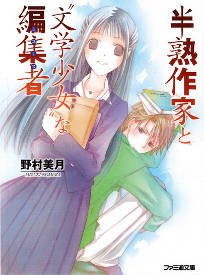
新しい担当編集者の天野遠子嬢は、清楚な美人だった。──が、いきなり本棚の前でグルメ批評を始めるわ、ほんわか笑顔で容赦なく原稿修正を指示してくるわ、売れっ子高校生作家たるオレが、どうしてこうも振り回される!?そんな時届いた脅迫状じみたファンレター。そこにはまだ刊行される前の小説の内容が書かれて......って差出人は、まさか!?半熟作家・雀宮快斗とその担当編集者遠子が織りなす、物語や文学を食べちゃうくらい愛する〝文学少女〟の、最後の物語。
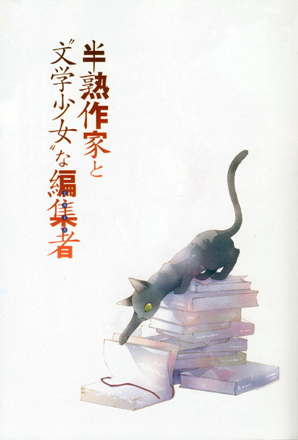
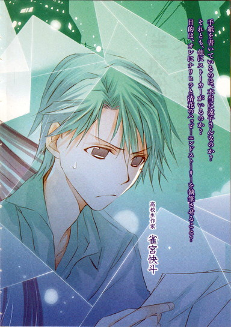
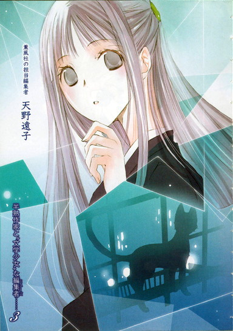
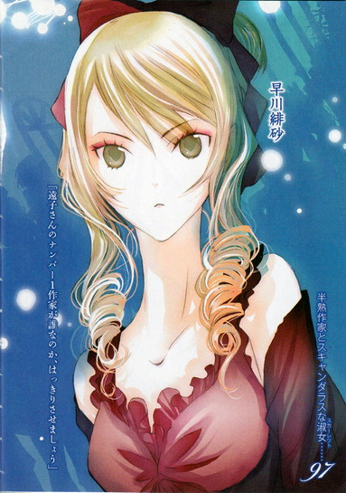
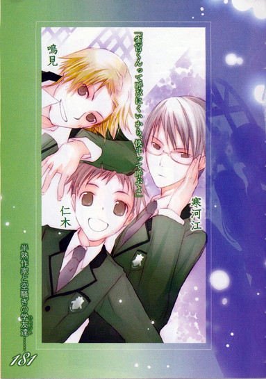
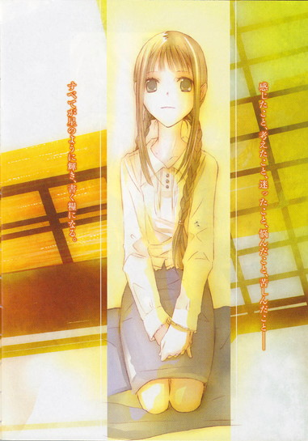
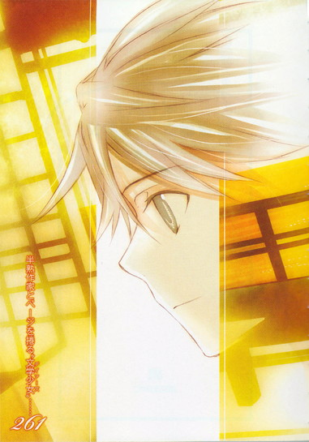
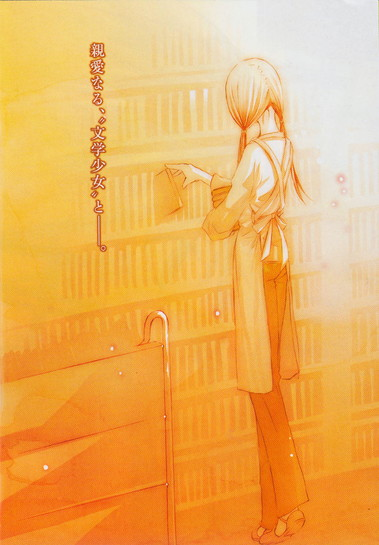
目次
半熟作家と〝文学少女〟な編集者──
半熟作家とスキャンダラスな淑女──
半熟作家と空騒ぎの学友達──
半熟作家とページを捲る〝文学少女〟──
半熟作家と〝文学少女〟な編集者
野村美月
半熟作家と〝文学少女〟な編集者
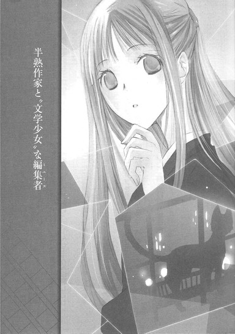
『伊勢物語』は、女の子にモテモテのイケメン貴公子のお話なのだと、彼女は言った。
帝のお后も、幼なじみの女の子も、神様に仕える斎宮も、みーんな主人公に恋してしまうのだと。
埃の香りがする古い本で隙間なく埋まった図書館の片隅で、膝を抱えてうずくまるオレに、朗らかな優しい声で語りかけてくる。
バイトのときは胸当てのあるクリーム色のエプロンをかけて、さらさらの綺麗な茶色の髪を二つに結んで、お下げにしていた。
近づくと甘いいい匂いがして、薄桃色のリップを塗った唇がつやつやと光っていた。胸元で、おさげがはらはら揺れて、脈拍が速まって息が乱れ、顔を赤らめて、
「......その髪、ガキっぽいよ」
ぼそっとつぶやいてそっぽを向くオレに、腕に何冊も本を抱えたまま、ふんわりと微笑んだ。
「〝文学少女〟みたいでしょう」
◇ ◇ ◇
オレ、雀宮快斗の一日は、午前十一時半のブラックコーヒーからはじまる。
愛用のドリッパーに純白のペーパーフィルターをセットし、電動ミルで挽いたコーヒー豆を入れる。
沸騰した湯の入ったポットを手に持ち、少々の思索にふけり、落ち着かせる。
そうして、湯をわずかに垂らして蒸らしたあと、円を描くように注いでゆく。
湯気と一緒に香り立つほろ苦さを鼻で楽しみつつ、セピア色のコーヒーがポットを満たす迄のあいだ、書斎のデスクでパソコンを立ち上げ、背もたれのついた回転椅子に腰かけ、編集部からのメールをチェックし、ネットの検索をするのだ。
キーワードはもちろん『雀宮快斗』
検索結果、８１６３４５件。
デビュー二年目の新人作家としては、破格のヒット数だろう。
まぁ十五歳にして、伝統ある薫風社文学新人賞特別賞を受賞し、一躍ベストセラーになり、受賞作がそのままシリーズ化し、十一月現在、十一巻まで刊行。その累計が三百七十万部、おまけにルックスもイケていて、若者向け男性雑誌のモデルとしても活躍中の、年収一億円越えのスター作家なら当然だ。
ネットの世界でも、オレの熱烈な信者たちが、オレのクールでクレバーな作品を褒め讃えていることだろう。こうして毎朝、愚民どもの声に目を通してやるのが、偉大な創造主の務めというものだ。
アニメ化もコミック化もドラマ化もグッズ化もされた『ハードボイルド高校生・業平涼人』シリーズの主人公のように洗練された優雅な笑みを浮かべ、マウスをクリックすると──。
『ナリヒラつまんねー！ 最悪！』
『ブック×フで立ち読みで読破して、あんまりくだらなくて吹いた』
『主人公が高校生で、諜報部員で、クールでイケメンで天才でオレ様で、女にモテまくりの振りまくりって作家の願望か？ひどすぎだろ。書き手の愚劣な人間性がにじみ出てて、不快なんだけど』
『薫風社の新人賞だなんて信じられません。薫風社も落ちたものですね。ラノベでしょう、これ。権威台無し』
『井上ミウの再来とか第二の井上ミウとか天才高校生作家とか、帯で宣伝されてたから読んだけど、お金と時間を返してほしい。途中で壁に叩きつけた本は、はじめてだ。ミウのほうがナリヒラより百万倍おもしろいし感動できるし、比べること自体間違ってる。「青空に似ている」の羽鳥が原石のダイヤなら、涼人はウンコ。著者近影も、ポーズつけて顔作っててキモい』
『表紙がソフトカバーでアニメ絵なので避けてたけど、やっぱり中身もクズ』
『絶対に買ってはいけない本リストの、トップ』
『勘違いイケメン（笑）の作者は即刻切腹して、読者に詫びてください』
読み進めるうちに、マウスを握る手がぷるぷる震え、胸が煮えたぎり、頭に血がのぼり、ついに絶叫した。
「うわあああああああ！ ざけんな！ 下民！一般人！クソオタ！不細工で低レベルな文盲どもに、オレの大傑作が読みこなせるかああああああ！死ねだとぉ！切腹しろだとぉ！てめぇが、首にこんだらぶら下げて、海へダイビングしやがれ！オレの生み出した、超カッコよくて超クールで、超超超完璧な業平に文句つけるやつは全員デブの童貞で確定！百パーセント引きこもり！」
画面に指を突きつけて吠えまくり、椅子に座ったまま足をばたばた動かすが、胃のむかつきがおさまらない。
頭も体もどんどんヒートアップしてゆく。
年収一億円越え作家で、イケメンモデルのオレが、こんなお小遣い月五千円程度、バイトの時給八百五十円程度の低所得者どもにバカにされたまま引き下がるのか？コケにされっぱなしで、石のように沈黙を続けるのか！
否っ！ オレは年収一億円越え作家の雀宮様だ！
こぶしを握って立ち上がる。
頭の中に試合開始のゴングが高らかに鳴り響く。しかし、敵はパソコンの画面の向こうでどうにもならない。
くぬぅぅぅぅぅぅ！ くそぉぉぉっ！ 公共の場でクソつまんね書評、えらそぶって垂れ流してんじゃねーよ！調子こいて「この作品は星一個ですね」とか言ってんじゃねーよ！てめーはミシュラン審査員か！
『作者は底の浅そうなつまんなそーな人間だが、作品もつまんなかった。来年は消えてるでしょう。まぁ、僕は二度とこの作家の作品を読むことはない。星一個でも多すぎ。半分が順当』
やはり、許せ──────ん！
マウスをつかむなり、デスクトップパソコンの画面に向かって、投げつけようとしたそのとき。
後ろでドアが開き、明るい声がした。
「こんにちは、快斗くん」
担当編集者が、打ち合わせに来たらしい。いちいち玄関までゆくのが面倒くさいので、合鍵を渡してある。それで入ったのだろう。
オレが目をつり上げ、マウスを振り上げているのを目撃し、きゃーっと悲鳴を上げた。
「ダメっ！ ダメよ快斗くんっっ！」
ぱたぱた走ってきてオレの背中にしがみつき、はがいじめにする。
「パソコンを壊したら、連載原稿が書けなくなっちゃうわ！雑誌の締め切りは、あさってなのよ！」
「予備のノートパソコンで書くから、放せ！」
「あれは先月二台とも、快斗くんが床に叩きつけて壊しちゃったわ！新刊のアマ×ンの評価の平均が星一つだったから、ふざけんな！って、両手で投げつけて──壁に穴が開いたのを、忘れたの？」
ぐ、そうだった。
「もう一台も、クイズ番組にゲスト出演したとき、くしゃみをこらえて鼻の穴を開いて、目をすぼめて、下唇を噛みしめた思いきり変な顔を、ネットの掲示板と動画サイトにアップされて、カッとなって、お湯をはったバスタブに放り込んだわよね」
「そいつは忘れろ！ あ、あんな、しわしわで間抜けで、細目で不細工なの、オレの顔じゃねぇ！」
あの画像は、悪意に満ちた加工がほどこされていたのだ！絶対そうだ！屈辱に頬をほてらせ、訴える。
「オレの目はくっきり二重で、鼻の穴もあんな広がってなくて、口もあんなアヒルみたいに間抜けじゃねぇ！」
「ええ、実物の快斗くんは、ゲーテのウェルテルみたいにハンサムよ！だから、これ以上パソコンを破壊するのはやめてっ！」
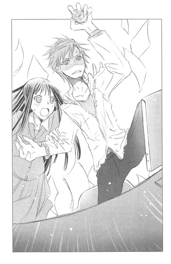
「てか！ 心血注いだ作品を、知能の足りない低所得者どもに中傷誹謗されて、黙ってられるか！」
「批判も感想のうちよ。プロなら受け止めなきゃ！」
「オレの鼻が整形だとか、写真の角度がいつも同じとか、性格の下劣さが文章に表れてるとか、年齢詐称してて本当は三十歳とか、句読点が横一列に二行並んでるページが十七ページもあって不快とかいうのも、ガンジーみたいに受け止めろってのかよっ」
今度は彼女が、声をつまらせる。
「そ、それは──その、か、快斗くんのことが気になって、つい細かいとこまで目についちゃうのよ。ネットで悪口を言ってる人たちは、みんなツンデレなのよ！」
「ツンデレだぁ！」
「そう！ そうよ！ だからシリーズにもどんどん重版がかかっているでしょう」
オレにすがりつく腕にぎゅっと力を込め、背中に押し当てた顔を、こくこく縦に振って、断言する。
ふんっ、仕方ないな。
マウスを置くと、向こうもホッとしたように腕をほどいた。
そうして、不機嫌そうに振り返るオレの顔を、まっすぐ見上げて、ふんわり笑った。
「ありがとう、快斗くん！ 我慢したのね、えらいぞ」
両手で包めそうなほど小さな顔が、ほのぼのとオレを見上げている。
さらさらの綺麗な黒髪が、背中の下のほうまでこぼれていて、横の部分をバレッタで後ろに留めている。それでも動くたびにさらさら揺れて、ちょっとドキッとする。
シンプルなブラウスとスカートに包まれた手足も、腰のラインも、折れそうにほっそりしていて、黒い目は表情豊かで聡明で、唇も花びらみたいで──。
なんというか......オレの担当で、薫風社の編集者の天野遠子嬢は、清楚な美人だった。
しっかりした大人のお姉さんでありながら、どことなく少女っぽい可憐な雰囲気を漂わせている。
いくつなんだろ、この人。胸の扁平さは小学生並みだけど......。
「今日は特別なお土産があるのよ」
遠子さんが嬉しげな表情で、オレの手に手紙の束をどさっと載せる。ピンクや水色のファンシーな封筒ばかりで、どれも開封済みだ。
表にでかくて丸い字で、『雀宮快斗先生へ』と書いてある。
「読者からのお手紙よ」
ますます嬉しそうに、口元をほころばせる。
「小学四年生の女の子からも来ていてね、学校であったこととか書いてあって、すごく初々しいのっ。高校一年生の手芸部の女の子のも、可愛かったわ。ナリヒラが大大大好きで、アニメもドラマも録画して何回も見てますって！ドラマ版のナリヒラ役の影浦智也くんの画像を、パソコンの壁紙にして、朝と夜、かかさず挨拶をしてるんですって。男の子からもあったわ！今、中学二年生で、塾の帰りに電車の中で、ちょっとずつ快斗くんの本を読んでるんですって。ナリヒラに憧れていて、ナリヒラみたいなクールでカッコいい男の子になりたいんですって」
オレは手紙の束を持ったまま、ゴミ箱の前まで、すたすた歩いてゆくと、そこへ手紙を落とした。
とたんにまた、遠子さんが悲鳴を上げて、すっ飛んでくる。
「きゃああああああああああ！ なんてことするのっ、快斗くん！」
運動は苦手そうなのに、両手をのばして手紙をゴミ箱の上でキャッチするという離れワザを見せる。
ぺたんこの胸に手紙の束をしっかり抱え込み、唇を恐ろしそうに震わせた。
「て、手紙を、捨てるなんて。ごはんを粗末にしちゃいけないわっ」
ごはんってなんだ？
興奮しているのか、おかしなことを口走り、
「このお手紙には、読者から快斗くんへの愛情という名の調味料が、たっぷりかかっているのよ、それを読まずに捨てるなんて」
と、涙目で非難する。
こういう表情は思いきり子供っぽくて、女子高生みたいだ。
オレは肩をすくめて言ってやった。
「どーせ、図書館で読みましたとか、古本屋で全巻購入しましたとか、ネットで落としましたとか、『先生、わたしの悩みを聞いてください！』とか『○○先生はお返事くれました、快斗先生もお返事ください』とか、んなのばっかだから時間の無駄」
遠子さんが困ったように微笑む。
「で、でも......、たくさんの作家の中から、快斗くんの本を読んでお手紙を書いてくれたのだと思うと、嬉しくならないかしら？学校であったことを話してくれるのも、悩みごとの相談も、快斗くんを身近に感じているからよ」
「そういうのパス。顔も知らない相手からいきなり手紙で馴れ馴れしくされんの、ウザイ」
「まぁっ！ 一冊の本を通して、作者と読者は繋がっているのよ。読者は他人じゃないわ」
熱心に主張する遠子さんに、さめた声で、
「いや、普通に真っ赤な他人だから」
と、きっぱり否定する。
「それに、古本屋で買いましたとか、図書館で読みましたとか、オレ的に読者じゃないんで。ブック×フで買われても、作家様には一円も入らねーっつーの。ましてやネットオークションに出品されて『購入してから一度も読んでないので、美品です』とか書いてあると、出品者マジ死ね！苦しみぬいて地獄に落ちろ！と念じちゃうね。違法サイトでダウンロードしましたとかは、もう論外。ブタ箱直行しろ犯罪者」
遠子さんが哀しそうに眉を下げる。
「いけないわっ、快斗くん。そんな暗黒モードにならないで。大切なのはどこで読んだのかじゃなくて、読んでどう感じてくれたかよ。そ、その、確かに違法なダウンロードはよくないし、出版にたずさわる人間としては、やめてほしいけれど......」
ごにょごにょつぶやいたあと、幼稚園の先生のようににっこりして、
「でも、図書館は、わたしも大好きよ。たくさんある棚をひとつひとつ巡りながら、これを全部読んでもいいのかしらと思うと、わくわくするでしょう？そこで一生の宝物になるような物語を手に取ることもあるわ。そう！図書館は作家と読者の幸せな出会いの楽園よ」
手を組み合わせ、うっとりと言う。
オレは顔をそむけた。
「はん、図書館なんて......」
ちょっと暗い気持ちになりかけ、それを振り払うように、遠子さんのほうへ向き直る。
「つかさ！ 手紙にわざわざ『オークションで落札しました』とか自慢げに書くか？オレへの配慮が足りねーんだよ。手紙送ってくるやつって、そんなんばっかじゃん。執筆のモチベーション下がるから読みたくね、とっとと捨ててよ」
遠子さんが、また弱ったように眉を下げる。それからキッとして、
「なら、わたしが引き取るわ。これ全～～～～部！わたしがもらっちゃってもいいのね？後悔してもわけてあげないわよ」
「あーどうぞどうぞ、焚き火にして、栗でも芋でも焼いてくれ」
「もう！ 泣いて頼んでも返さないんだから！」
頬をぷっくりふくらませて、ぶつぶつ文句を言いながら、手紙の束を鞄に戻す。
オレは知らんぷりで、カップにコーヒーを注いだ。
遠子さんは、まだ頬をふくらませている。
けど、コーヒーのカップがもうひとつ出ていて、脇にスティックシュガーとミルクが添えられているのを見て、口元をほころばせた。
まぁ、一人分淹れるのも、二人分淹れるのも一緒だから。
立ったままコーヒーを飲みながら、背中を向ける。
「ありがとう、快斗くん。いただきます」
後ろで遠子さんが、明るい声で言った。
「じゃあ打ち合わせをしましょうか？ 原稿はどこまで書けた？」
オレは、窓のほうを見たまま渋く決めた。
「終わってる、トーゼン」
天野遠子嬢が、オレの新しい担当として、マンションへやってきたのは、一ヶ月ほど前──十月半ばのことだった。
「はじめまして、薫風社の天野遠子と申します。雀宮先生の担当をさせていただくことになりました。よろしくお願いいたします」
その数日前、デビューから四人目の担当と大喧嘩し『明日、新任者を伺わせます』というおざなりなメールをもらった翌日のことだった。
前の担当は、薄汚い口髭を生やしたおっさんで、
『直せと言ったところが全然直ってないじゃないか。きみの意見？ああ、それはダメだって、さんざん説明したの聞いてなかったわけ？デビュー二年目で高校一年生のきみより、僕のほうがこの業界ははるかに長いし、読者のニーズもわかってるつもりだけどね。僕の指示に従えないなら、これ以上きみの担当はできないよ、雀宮くん』
と打ち合わせ中に、こめかみをひくつかせてわめき、むかついたオレが、
『こっちこそ、あんたが担当なんて、もううんざりだね』
と返したら、
『きみが売れたのは、十五歳でのデビューが珍しかったのと、書くのがちょっと速くて、アニメとコミックスのデキが、原作以上によかっただけなんだからね。同じ中学生デビューの井上ミウとは才能が違うってこと自覚したほうがいいよ。
そもそもきみが受賞したのだって、話題作りのためだったんだから。構成も文章も、とても受賞レベルじゃなかったのを、上の判断で無理矢理特別賞に押し込んだんだ。じゃなきゃ、漫画とラノベしか読んでこなかったような中学生のぼうやが書いた作品が、うちで受賞するわけない』
と言い放ち、頭から湯気を立てて帰って行った。
前の三人の担当も、こいつと同じくらい居丈高だったり、逆に気が弱くて、オレがなにか言うたびびくびくして胃潰瘍で入院してしまったり、若くてやる気はあるものの無能で、それが空回りして、失敗ばっかりで使えなかったりで、どうせ新しい担当もろくなもんじゃないだろうと予想していた。
なので、インターホンから聞こえた澄んだ綺麗な声と、室内モニターに映る、ほっそりした姿に、おや？と目を見張った。
女の担当ははじめてだ。
しかも、若い美人だなんて。
オートロックを解除し、部屋に上がってきた天野嬢は、モニターを通して見るよりさらに美人でしとやかな容貌だった。
秋っぽい薄いジャケットにスカートで、肩から大きな鞄を提げていて、髪は後ろにひとつにまとめていた。小さな耳の横から、わずかにこぼれ落ちる髪も黒くてさらさらで、スカートから伸びる足は華奢で、ポーチに脱いだパンプスは子供みたいに小さかった。
「よろしくお願いいたします、雀宮先生」
鞄から名刺を出して、オレに差し出す。その指も細くて綺麗で、話しかたも丁寧で感じがよい。
ひょっとして編集部は美人をあてがって、オレを懐柔しようと企んでいるのではないかと疑ったほどだ。
ならばその手には乗らないぞ、だいたい美人なんて、モデルもやっているオレは見慣れてる。胸だってぺたんこだし、この程度の美人にデレるようなオレではない。
顔を引きしめ、身構えていたとき、
「まぁ！ シェイクスピア全集だわ！」
客用のソファーに、足をそろえてしとやかに腰かけ、これからの予定について話していた天野嬢が、いきなり立ち上がり、目を輝かせて本棚の前にすっ飛んでいった。
へ？
唖然とするオレに、細い背中を向けて、今にも本棚に抱きつきそうな勢いでしゃべり出す。
「『マクベス』！ 『オセロ』！ 『ハムレット』！『リア王』！あぁ、シェイクスピアの作品は、中世の食卓に迷い込んだような、ほのぐらい味わいがあるわね。イチジクと干しぶどうとお魚の味わいが渾然一体となったパイ皮包みや、酸っぱいキャベツとベーコンのスープにひたして食べる硬いパン！暖炉で蒸した卵に、噛みごたえ満点の猪のお肉！赤い木の実で作ったお酒！」
な、なにをしゃべってるんだ？
目を丸くして見つめていると、ますます高らかに喜ばしげに語り上げる。
「マクベス夫人が、いくら洗っても手についた血が落ちないと狂乱してゆく姿は、まるでクロイチゴのワインをいっきに呷るようよ。体がぞくぞく震えながら燃え上がるの。
リア王が、信じていた娘たちにそっけなくされる場面は、塩漬けのニシンのように胸にも舌にもしょっぱくて、ひりひりしてしまうわね。『ロミオとジュリエット』は、言うまでもなく名作だし、『テンペスト』も『真夏の夜の夢』も、食べるたびに新鮮な味わいがするわ！」
オレはすでに唖然を通り越して、茫──然だった。
一体なんなんだ、この女は！
ひとんちの本棚の前で、なにを楽しげにグルメ批評をしてるんだ！
「他にも美味しそうな名作がいっぱいね！日本の古典もそろっているわ。あ、『伊勢物語』！」
メニューの中に大好物のスイーツでも見つけたような嬉しげな声に、ドキッとする。
本棚から『伊勢物語』を抜き出し、それを胸に抱きしめて振り返った彼女に、また心臓が跳ね上がる。
うわ......なんて顔してんだ。
さっきまで清楚なつぼみだったのが、まばゆい太陽の光を浴びて、いっきに花開いたようだった。
晴れ晴れとした、幸せそうな、楽しそうな、表情。
きらきら光る黒い瞳でオレをじっと見つめて、澄んだ朗らかな声で、天野嬢が語りかける。
「この本も、わたし、大好きなんです。冬になるとよくおこたで、繰り返し読んでいました」
そうして、愛おしそうな眼差しで表紙を見おろし、細い指先でページをはらりとめくる。
「『伊勢物語』は、平安時代初期に書かれたと言われる歌物語ですね。とある貴族の少年の成人の儀からはじまり、彼が出会う様々な女性とのロマンチックな恋物語を経て、最後は彼の死を暗示させて終わる......。主人公のモデルは、六歌仙の在原業平だと言われています。業平は天皇家の出で、見目麗しく風流で、秀でた歌才を持ち、奔放に生きた男性だったそうですね」
ゆっくりと優しい声で、ささやく。
おかしい。
オレは何故突っ立ったまま、文学講座なぞ聴いているのだろう？
彼女が手にしている本が、『伊勢物語』だから？
それを彼女が、大事そうにめくっているから？
「『伊勢物語』は、薄く切った鯛や、細かく刻んだ柚の皮や、みずみずしい菜の花を載せた、ちらしずしみたいな味がするんです。幼なじみの女の子と結ばれる、『筒井筒』のお話は、ほんのり甘くて可愛らしくて、胸がキュンとしますし、高貴な女性と駆け落ちをする『芥川』は、女性が鬼に食われてしまったという箇所を、追っ手に無理矢理引き裂かれてしまったと解釈すると、菜の花を囓ったみたいに苦く切なくなります。
一冊の本に、いろんな恋がつまっているんです」
天野嬢が顔を上げて、微笑んだ。
さっきまで子供っぽかったのに、今度は大人っぽい優しい笑顔だった。
「わたし、雀宮先生にお会いしたら、絶対にうかがおうと思っていたんです。高校生ハードボイルド業平涼人シリーズの〝ナリヒラ〟は、『伊勢物語』の在原業平をモデルにされたんじゃないですか？」
「え、な──」
驚きとともに、口ごもる。頬が、じわじわ熱くなる。
それは、〝正解〟だったから。
デビューから一年のあいだに、いくつもインタビューを受けた。
ファンレターを山ほどもらい、ネットで〝業平シリーズ〟は、『○○』のパクリとか、『××』の影響受けすぎとか、作者『○×○×』のファンだろとか、根も葉もない勝手な決めつけを、さんざんされた。
けど、オレが知るかぎり、誰も〝業平涼人〟の〝ナリヒラ〟が、『伊勢物語』の在原業平だと見抜いたやつはいなかった。
古典とハードボイルドじゃジャンルが違いすぎるし、在原業平は平安貴族で、業平涼人は諜報部員で高校生だ。気づかなくて当然だ。
前の担当は、漫画とラノベしか読んでこなかったと、オレの文章を侮った。
なのに初対面で、軽やかに指摘した。
「な、なんで、そう思ったんすか......？」
無意識に口調があらたまるオレに、天野嬢がますますにっこりする。
感じのよい笑いかただった。
「シリーズの一話目で、ナリヒラと悲恋の関係になる、聖ジブリール学園の藤乃先生が、一夜の逢瀬のあと、メールしますよね？
『昨日のことは、夢だったのかしら？ 現実だったのかしら？』
って。それに対してナリヒラが、返信するでしょう？
『決めるのは、オレではなくあなたです』
って。
現実にしたいのなら、今夜も来て確かめればいいって、誘うんですよね」
黒い瞳が甘くきらめくのを、オレは食い入るように見つめていた。
「ここを読んだとき、六十九段目の『君や来し』のやりとりを思い出したんです」
伊勢の主人公が、斎宮との許されない一夜を過ごしたあとに交わされた歌を、天野嬢が詠み上げる。
『君や来しわれや行きけむおもほえず夢かうつつか寝てか覚めてか』
『かきくらす心の闇にまよひにき夢うつつとは今宵さだめよ』
昨晩のことは夢だったのか現実だったのか、眠っていたのか目覚めていたのかよくわかりませんという女に対して、男は、夢だったのか現実だったのか今夜いらしてはっきりさせてくださいと返すのだ。
沈黙するオレに、天野嬢が微笑んだまま言う。
「それと、ナリヒラがはじめて藤乃先生に会ったとき、更衣室で藤乃先生と、クラスメイトの女の子が着替えているところを偶然のぞき見て、彼らしくもなく心が乱れますよね？あそこも、元服したばかりの『伊勢～』の主人公が、春日の里に住む美しい姉妹を、物陰からのぞき見る場面に重なりました」
あのとき詠まれる歌も、甘くて瑞々しくて美味しいんですよねと、朗らかな声で言う。
それから、ちょっと心配そうに、
「あの、全然違っていたら、すみません」
オレはハッとして、
「い、いや、あってるから」
そわそわした、落ち着かない気持ちでつぶやく。
そうすると天野嬢はやわらいだ表情になり、『伊勢物語』を抱いたまま、思いきり嬉しそうに笑った。
「よかったぁ。『伊勢物語』と業平シリーズは、味わいはちょっぴり違いますけど、どちらも美味しくて、大好きなんですっ。業平シリーズは、わたし的に、オレンジピールにダークチョコレートをかけたような味がするんです。ヒロインとの別れのシーンは、どれも、ほろ苦くて、なのに甘さもちゃんとあるんですよね。
雀宮先生の担当になれて嬉しいです。わたし頑張ります、業平シリーズを、ますます美味しくしてゆきましょうね」
美味しくって、どういうことだよとか、オレンジピールってちょっとダイナミックさに欠けねーか？とか、もやっとする部分もあったのだが、間近にあるほんわりした笑顔に、全部封じられた。
妙に胸がドキドキして、
「ま、その......こっちこそ、よろしくお願いします」
と、返してしまったのだった。
あれから一ヶ月。
はじめは礼儀正しく『雀宮先生』と呼んでいたのが、気がつけば『快斗くん』になり、口調も後輩に対するみたいにフランクになり、合鍵まで握られている。
なんだか騙された気分だ。
遠子さんはソファーに座って、オレの淹れたコーヒーにミルクと砂糖を注いで、ちょっとずつ口にしながら、プリンターで出力した原稿を読んでいる。
月刊誌で連載中の、業平シリーズだ。
この原稿が掲載されるのは、二ヶ月後の一月になる。
今回ナリヒラは、借金を抱えながら健気に花屋で働く女性清花と恋をしつつ、次々降りかかる事件を解決する。
今発売されている十一月号では、二人が想いを深め合うこそばゆいエピソードが挿入されている。
が、来月発売する十二月号で、清花に仕事のことがバレそうになり、ナリヒラは清花と距離を置く決意をする。
これはどの巻も同じで、ナリヒラが女性と関わり、女性がナリヒラに傾いた頃、別れなければならない事情が発生し、ナリヒラがクールに女性を振り、去ってゆくというのが黄金パターンだった。
マンネリとか、どの巻も同じ金太郎飴とか飽きたとか、ナリヒラ女の敵、死ねとか、声高に叫ぶ連中もいるが、気にしない。オレは、ナリヒラの魅力を最大に引き出すのは、このストーリー展開以外にないと確信し、毎巻魂を込め執筆している。
ワンパターンも極めれば王道だ。
わかりきった同じようなストーリーで、読者を引き込み、買いたくないのに買ってしまった、悔しいっ、でも感じちゃう、と身悶えさせてこそ一流の作家というものだ。
ゆえに、ナリヒラは清花のことも、当然振らなければならない。
それも読者が痺れるほど、クールに非情にカッコよくだ。
それでこそ、ナリヒラだ。
まぁ、それはあと三回ほど先だが、一月号の原稿でも、ナリヒラは学園に訪ねてきた清花をそっけない態度で突き放す。
清花は、「それでもわたしは、涼人くんが好きっ」と健気にナリヒラへ想いを告げるのだ。
くそっ、泣けるなー。
書き上げたばかりの場面を頭に思い浮かべて痺れながら、原稿を読んでいる遠子さんをうかがう。
遠子さんは目を輝かせ、熱心に文字を追っている。口元がやわらかくほころんでいて、ときどき息をのんだり、ホッとしたように溜息をついたりする。
本でも原稿でも、なにか読んでいるときの遠子さんは本当に幸せそうで、それを見ているオレも、なんだかこそばゆくて嬉しかった。
同時に、遠子さんの感想が気になって、胸を高鳴らせている。
この場合期待しているのは、
『おもしろかったわ！ 傑作よ！ 快斗くんは天才だわ！修正は必要ないわ。この原稿に手を加えるなんて神への冒涜よ。編集長のチェックも校正も不要よ、このまま印刷所へ持ってゆきましょう』
という絶賛の言葉だけである。
遠子さんが担当になってから一ヶ月、初稿でそれが口からこぼれることは一度もなかったが、今日こそは──。
息をつめて見守るオレの前で、遠子さんが最後のページを読み終えて、顔を上げて微笑む。
「おもしろかったわ、快斗くん」
おおっ！
腕が万歳のポーズをとりかけたとき、
「直せば、きっともっとよくなるわ」
なにぃ？
オレの体が、ぴくりとこわばる。
「えーとね、まず冒頭が、はじめての読者にわかりにくいから、ナリヒラがどんな立場で、どんな性格かを、さらっと説明してあげたらいいと思うの。それから、ナリヒラがお花屋さんの前を通りかかるシーンも、もう少しだけ葛藤が見えたら、読者は、ぐっときちゃうわ。校門で清花に呼び止められるシーンも、ちょっぴりでいいからナリヒラの迷いがわかる描写が欲しいわ。それから......」
明るい声で、修正指示が延々続く。
おいおいおいおいおいっ！ それって掲載原稿八十枚のうち、半分くらい書き直せって言ってねーか？
しかも、ナリヒラの迷いの描写を入れろとか、葛藤を見せろとか、冗談だろ？
「提案なんだけど、諜報部員になる前のナリヒラの過去を挿入してみたらどうかしら？ナリヒラにも、普通の男の子だったことがあったんだなーみたいな。そうしたら読者が共感しやすくなるわ」
オレは床を踏み鳴らし、立ち上がった。
「却下！ 共感とか必要ねぇ！」
遠子さんが目を丸くする。
オレは身振り手振りを加え、断固反対の意志を示した。
「わかってねーな、遠子さん。ナリヒラは、低所得者の凡人どもに共感されるようなダメ男じゃねぇ。憧れ崇拝される超人キャラなんだよっ！女々しい過去とか必要ないね！過去が謎に包まれてるところがクールでイケてんのに、小学校の遠足でピクニックシートに座って、友達とおかかの握り飯とか玉子焼き食ってたり、金魚の世話係だったり、お手々繋いで集団で登下校とかしてる過去なんか公開されたら、台無しだ！」
遠子さんがおだやかに、
「確かに、強くて謎めいていて完璧なナリヒラは素敵だし、過去のエピソードを出しすぎるのは作品の魅力をそこねてしまうわね」
「だろ。じゃあ修正ナシな」
「でも」
遠子さんが残念そうに、目を伏せる。
「そんな素敵で完璧なナリヒラの過去を、彼の大ファンのわたしとしては、ちょっぴりだけでも、のぞいてみたかったわ」
肩も落として、しゅんとしている。
胸がざわついて、落ち着かなくなる。
「な、ナリヒラは、過去は振り返らない男で......」
遠子さんが、ますますうなだれる。
「ええ、わかってるわ。わたしが無茶を言っているのよね。けど本当に残念だわ。クールでパーフェクトなナリヒラに、意外な過去があったりしたら、今よりもっと彼のこと好きになってしまうのに」
「そ......そういうもんすか？」
ヤバイっ。口調が丁寧モードになっている。
「ええ。女の子は、好きな人の過去を知りたいと思うし、知れば、ますます愛は深まるものよ」
顔を上げて、オレを見る。
うるんだ瞳にドキンとする。
「でも、いいの。作家さんが書きたくないものを無理矢理書かせるなんて、よい結果にならないし、編集者失格ですもの」
また目を伏せ、しょんぼりする。
ムサいおっさん担当が泣こうがわめこうが、うっとうしいとしか思わない。
が、古風な黒髪美人が、目の前で目を伏せ、うなだれていると、気になって仕方がない。
くぅー、オレは悪くない。オレは悪くない。オレは悪く......。
「か......書いてやっても、いいぞ」
消えそうな声で、喘ぎながら言う。
「その......と、特別に、非公開で」
非公開で──の部分を口にする前に、遠子さんが目をぱぁっと輝かせ、身を乗り出してきた。
「書いてくれるの！ きっと快斗くんのファンも喜ぶわ！ありがとう！」
「ちょ......！ 原稿直すとかじゃなくて、あくまで個人的にささっと書いてやるって意味で──」
「まぁ、ささっと書けちゃうの？ さすが、三日で一冊分の原稿を書き上げた伝説を持つ快斗くんね」
「だから違──」
「えっと、さっき言った分の修正も含めて、四日あれば直せるかしら？」
遠子さんが、手帳を広げて言う。
オレは思わず叫んでいた。
「ナメんな、一日でじゅうぶんだ」
「ええっ、一日は短すぎるわ、快斗くんでも無理......」
首を横に振る遠子さんに、きっぱり断言する。
「いや一日だ」
「すごぉぉぉぉい！ 快斗くん天才！ じゃあ明日、また来るわね！ナリヒラの過去と葛藤を楽しみにしているわ！」
遠子さんは手帳を閉じ、赤が入りまくりのコピー原稿を置いて、明るい足取りで帰っていった。
快斗くん天才という言葉の響きを、しばらく耳の奥でリフレインして楽しんでいたオレは、遠子さんの足音が消えるなり、愕然とした。
なに喜んで引き受けてんだよ────っっっ！このお調子者！
修正することになっちまったじゃねーか！
くそぉぉぉぉっ、なんでこうなった？ つーか、またか。前も同じ手で、アホなほど修正させられたよな。
あのときも、「快斗くん、天才！」とおだてられて──「任せとけ！一日で仕上げてやる！」って──ぐわあああああ、なんでまた引っかかる！
オレは悔しさに、クッションをもみ絞った。
何故だ！ 何故、毎回、遠子さんのペースにハマってしまう！
これまでオレは、編集者の意見は一切取り入れず、自分の才能と判断力だけを信じて書き続け、売り上げを伸ばしてきたのに。
何故、遠子さんにだけは逆らえないんだぁっ！
やっぱり、初対面のとき『伊勢物語』の話をされたのがマズかったのか？あのとき、うっかり聞き入ってしまったのが、今のこの負けっぱなしのムカツク状況を作りだしているのか？
遠子さんを見ていると、なにかとてつもなくヤバくて恥ずかしいことを思い出しそうな気がして、心臓がドキドキし、顔が熱くなる。
それは、甘くて切なくて──『伊勢物語』の冒頭で、主人公が詠んだ歌のようで......。
頭の中に、過去の情景がもやもやと浮かんできそうになり、オレは慌ててそれを振り払った。
オレに過去は必要ないぜ！
そうさ、そんなもの、とっくに捨てたんだ！
今ここにいるオレは、モデルもやってる長身のイケメンで、十五歳で新人賞をとってデビューした、才能あふれる年収一億円作家なんだ。
同じように中学生デビューした井上ミウの後継者とか、しょせん、おまけの特別賞で、大賞受賞のミウには、部数も筆力も劣るとか、陰口叩くやつもいるけれど、井上ミウなんてデビューしたとき、謎の天才美少女作家とかいって、女のフリしてたオカマじゃねーか。
どんな顔してんのか知らねーけど、いまだに顔出しＮＧってことは、人様の前に出られないような不細工に違いない。
きっとチビでデブの引きこもりだろう。
それに、ミウは受賞作を出したあと三年以上ブランクがあったし、二年めで十一冊も出版したオレのほうが実力は上だ。
今は、名前で検索すると、オレのヒット数が八十万件に対して、ミウは四百万件と水をあけられているが、そのうち追い越してやるぜ。
そうだ！ 雀宮快斗は日本の出版界に金字塔を打ち立てる男だ！
若い女の担当の言うことに、ほいほい従っているようじゃ、天才カリスマ作家の沽券に関わる。
やっぱり原稿を直すのはやめた。
明日、遠子さんが来たらはっきり、そう言ってやる。そして、売れっ子作家とペーペーの編集者のどっちの立場が上か、わからせてやるんだ。
オレはそう心に誓い、椅子にどさっと腰かけ、高々と足を組み、胸を反したのだった。
◇ ◇ ◇
翌日。
いつものように午前十一時半に起床し、コーヒーを淹れ、メールをチェックし、ネット検索をし、『業平シリーズの雀宮快斗は、整形らしい』『あの鼻、絶対いじってる』『目の二重も人工くさい』『けど今も、雰囲気イケメンでブサじゃね』という書き込みを見つけて、ディスプレイを両手でつかんで、がたがた揺らした。
あー、こいつら全員、頭つかんで地獄谷に放り込みたい。
気分を変えるため、マンションの向かいにあるコンビニへ出かける。
ちなみに、二十五階、オートロック、宅配ボックスつき、駅から五分のこのマンションで、オレはデビュー直後から一人暮らしをしている。
実家は都内にあるが、高校に入学してから一度も里帰りをしていない。
仕事が忙しいというのは建前で、ようは父、母、兄×２と顔を合わせたくないというだけだ。
まぁ、そんなことはどうでもいい。今のオレには、月二十八万円の家賃を払い続ける経済力がある。実家よりデカくて立派な家だって、そのうち買えるだろう。
コンビニで、新作のデカ豚マヨネーズ弁当とミネラルウォーターと、スタミナドリンクと、すっきり系のガムをカゴに入れ、レジへ向かう。
「お弁当は、あたためますか？」
「頼む」
バイトの若い男が弁当をレンジに入れ、タイマーをセットするあいだに、ポケットから振り込み用紙の束を出して、カウンターに置く。
ネット通販で買い物をすることが多いため、油断すると振り込み用紙がどんどんたまってしまう。
長財布から万札を三十枚ほど出し、振り込み用紙の上に重ねると、バイトが目を丸くし、後ろに並んでいた客が息をのんだ。
フッ、この程度、オレにははした金さ。
髪をかきあげ、さりげなくポーズをとって周囲にアピールし、ほかほかのデカ豚マヨネーズ弁当の入ったビニール袋を下げ、マンションへ戻った。
そういや、ポスト見てなかったな。
集合ポストの前で立ち止まり、ロックをはずして蓋を開ける。
すると白い封筒が入っていた。
ごく普通の長方形のやつだが、かなり厚みがある。表にマンションの住所と雀宮快斗様と宛名がある。ひっくり返して裏を見ると、「ファンより」とあった。
なんだこれ？
ファンよりというのが、うさんくさい。
いたずらだろうか。
封筒を持ったまま部屋へ行く。捨ててしまおうかと思ったが、好奇心がわいて、封を開けた。
『 雀宮快斗様
はじめまして、私はあなたの作品を愛する者です。
連載中の「ハードボイルド高校生・業平涼人」シリーズも毎月楽しく読ませていただいております』
匿名ということをのぞけば、書き出しはまともだ。字も丸かったり崩してあったりせず、丁寧で読みやすい。
しばらく、オレの本の感想が続き、それも褒めどころを心得ていて、
『ナリヒラのような魅力的なキャラクターを生み出した雀宮先生は、天才だと思います。夏目漱石よりも、吉川英治よりも、井上ミウよりも、私は雀宮先生の作品を支持します雀宮先生は、私の神様です』
という箇所には、おいおい褒めすぎだぜ、漱石にはちょっと負けるぜと思いつつ、悪い気はしなかった。
『私が一番好きなキャラは、もちろんナリヒラですが、連載中の〝潜血編〟のヒロインの清花も、清楚で可憐で素晴らしいと思います。名前のとおり、清らかな花のような女性です。借金を返すために、大学を中退して花屋で一生懸命働いている姿も、健気で胸が震えます。清花こそナリヒラにふさわしい、最後の恋人だと思えます』
清花への思い入れを延々と語ったあと、
『けど最近のナリヒラの清花への態度は、クールすぎるのではないでしょうか。
ナリヒラが、清花に距離を置こうと決意したことは、私にとって大きなショックであり、裏切られたように感じました』
おい、待て。
一瞬、心臓が縮み上がった。
ナリヒラが清花と距離を置こうと決めるのは、来月発売の十二月号だ。
先週発売された十一月号では、二人はいい感じに想いを深めあっていて、ナリヒラは清花のアパートで、手料理を振る舞われたりしている。幸せまっただ中だ。
なのに、一般読者が知るはずのない内容が書かれているのは、どういうことだ？
嫌な感じに汗が引いてゆく。
その先も、発売前の十二月号を読んでいなければわからないことが、いくつも出てきて、ナリヒラは清花と結婚して、清花を一生大事に守るべきだとか、ナリヒラがこれまでの女性にしてきたように清花を振ったら、ナリヒラを憎むかもしれないとか、清花とナリヒラが結ばれることが正しい結末で、シリーズの価値を高めることになるでしょうとか、延々続いた。
しまいには、ナリヒラと清花が今後どうなってゆくか、二人が結婚し、シリーズが大団円で終了するまでのプロットが、詳細に書かれていた。
こいつは、誰なんだ！
手紙やネットで、作品の展開についてぐだぐだ文句を言うやつは、大勢いる。
自分の気に入る展開にならなければ、出版社に抗議文を送るとか、死にますとか呪いますとか言い出す電波も。
そんなの放っておけばいい。
が、何故、こいつは、発売前の小説の内容がわかるんだ？どこで読んだんだ？
作家の他に、発売前の作品を読むことができる人間はかぎられている。出版社か、印刷所か、取次店、書店の関係者──。
発売前の漫画が、不法にネットにアップされて、事件になったことがあったっけ。
けど、発売日はまだずっと先だ。時期的に取次や書店はない。
残るは印刷所？ 出版社？
いや、印刷所もまだ早いか？ となると、出版社！
って、もしかしたら──！
オレの頭を、閃光が貫いた。
手紙の差出人は、遠子さんなんじゃ！
脈拍が一気に上昇する。
そうだ、担当編集者なら、十二月号どころか、初稿を上げたばかりの一月号も、その先のプロットも、読み放題だ。
今後の展開をこうしろああしろと、細々書いてあるのも怪しい。読者をよそおって、オレがそうするように仕向けてるんじゃ。
手紙の最初に褒めまくって、いい気持ちにさせておいて、そのあとダメ出しするところも、遠子さんと被る。
いつの間にか、手のひらに汗をかいていた。
考えれば考えるほど、手紙を書いたのは遠子さん以外ありえない気がして......。
てゆーか、それが一番しっくりくるし、遠子さんなら、こういう突飛なこともやりそうだ。
『読者は、ナリヒラと清花が結ばれることを望んでいるのよ。いつものように冷たく振っちゃダメ。そんなの女の子には受けないわ。二人を結婚させて、ハッピーエンドでシリーズ完結よ』
清楚な微笑みと明るい声で告げる遠子さんの姿が、もやもやと浮かび上がり、「うわあああああっ」と叫んで、しゃがみ込む。
そうか、そうか、遠子さんはそんな風に思っていたのか。
『「伊勢物語」も業平シリーズも、どちらも美味しくて、大好きなんです。雀宮先生の担当になれて嬉しいです。わたし頑張ります、業平シリーズを、ますます美味しくしてゆきましょうね』
あんな甘いこと言って油断させておいて、実はシリーズを打ち切るべく編集部から送り込まれた特別工作員だったのか！
考え出すと、止まらない。
あのほんわりした笑顔も、『おもしろかったわ！』というあの言葉も、全部嘘だったのか？特別工作員の演技だったのか？
『ナリヒラの過去を知ったら、もっと好きになっちゃうわ』
というあの言葉も、シリーズ完結のための布石だったんだな！
悪女め！
フローリングに膝をつき、身悶える。胸が裂けそうだった。
編集者なんてしょせん、そんなもんだ。ちょっと美人でお世辞を言われたからって、気を許したオレがバカだったんだ。
「ひどいっす、遠子さん」
って、なに弱気な言葉遣いになってんだよ──っ！
心の中で自分を諫め、唸った。
「くそっ、業平シリーズは、絶対終わらせないからな。清花も、シリーズ最強の冷酷さで、ざっくり振ってやる」
二時間後。
遠子さんが何食わぬ顔で現れた。
「こんにちは、快斗くん。差し入れに夏みかんのゼリーを持ってきたのよ。原稿の修正は終わったかしら？」
ゼリーを冷蔵庫に入れながら、ぬけぬけと尋ねる。
オレは、これ以上ないほどむっつりした顔で言った。
「終わってねー」
「え」
遠子さんが目を丸くして振り返る。
「そ、そう......？ 珍しいわね。快斗くん、締め切りだけは絶対に破らないのに。どこで詰まっちゃったの？わたしも一緒に考えて......」
「つか、直すのやめ」
「か、快斗くん？」
「絶対！ 死んでも！ 直さねー！ シリーズも続ける。ナリヒラと清花を結婚させろだ？ふざけるな」
遠子さんは、オレの怒りっぷりに困惑している様子で、
「えっと、清花と結婚させるのは、ちょっとやりすぎだと思うけど。それにナリヒラはまだ十七歳で、結婚はできないんじゃ......」
ふんっ、そうやって油断させようとしてるんだな。
「快斗くん、なにがあったの？ わたしがお願いした修正、難しかった？」
心配そうに見つめてくる瞳に、ふらっとしそうになるが、男の意地で耐えた。
頬を引きしめ、ぐっと身を乗り出す。
「！」
「遠子さん、業平シリーズ好きって、本当？」
「え、ええ。もちろん」
距離が近づきすぎたせいか、遠子さんが硬直している。
「だったら、オレの書いたもの、そのまま載せろよ。オレのナリヒラの将来に、あれこれ口出すなぁっ！あと、合鍵返せ」
真っ赤な顔でわめくオレを、遠子さんはびっくりして見ていた。
また来るわね。
そう言って、デスクに合鍵を置いて、遠子さんが出ていったあと、オレはしばらく落ち込んでいた。
一方的に怒鳴りつけてしまったけど、もしかしたら手紙は、遠子さんじゃなかったのかも......。でも、遠子さんくらいしか心当たりがないし、業平シリーズが好きかって訊いたとき、びくっとして、少し声、詰まらせてたし、目を白黒させてたし──あぁぁぁっ、もう、めんどくせー！
「どうでもいい、知るもんか」
こうるさい担当なんか、もういらねーよ。オレはオレの書きたいように書くんだ。
ソファーに倒れ込んで、クッションを抱えてフテ寝した。
◇ ◇ ◇
目覚めたのは夜の七時過ぎだった。
小腹がすいたな......。
重い頭で考える。コンビニで夕飯を買おうと、財布を持って部屋を出た。
エレベーターで一階まで降り、集合ポストの前を通りすぎようとしたとき、差し込み口からチラシがはみ出しているのが見えた。
抜き取って、脇のゴミ箱に捨てる。他にも郵便物が来ているかと、蓋を開けてみる。
次の瞬間、体が凍りついた。
銀色の箱の中に、長方形の白い封筒が置かれていたのだ。
一日に、二回も？
ドキドキと鼓動を速めながら、手に取る。今度もかなり分厚い。
表に住所と宛名があり、裏の差出名が『ファンより』となっているのも、昼間届いた手紙と同じだ。
背筋がぞくっと震え、オレはその場で開封し読みはじめた。
『 雀宮快斗様
何度もお手紙差し上げて、申し訳ありません。
けど、ナリヒラがこのあと清花に対して、どのように行動するのか気になって仕方がありません。
私がこれほど二人の未来を憂えているのに、あなたはデカ豚マヨネーズ弁当を食べている場合ではないのではありませんか？』
「な！」
思わず声を上げ、それから息をひそめて周りを見渡す。
壁の横や、茂みの陰から、こっそりのぞかれているような気がして、細かな震えが体を走る。
どうして、オレが昼間、デカ豚マヨネーズ弁当を食ったことを知ってるんだ。
手紙の差出人は遠子さんだよな？ ゴミ箱に、弁当の容器が捨ててあるのを見たのか？
薄気味悪くなって、オレはコンビニには行かず、読みかけの手紙を持ったまま部屋に戻った。
鍵を閉め、チェーンもかけて、続きを読む。
昼間と同じく、清花の賛美と、清花とナリヒラが結ばれるよう訴える内容だった。
『私が、あらすじを考えるので、先生はその通りに書いてくださればよいのです』
と、書いてあり、さらに、
『夜、サングラスをかけて外出されるのも、意味がないので自粛されたほうが良いと思います。三日前の夕方、マンションの前で犬の糞を踏んだのは、ファンの呪いです。私が犬の糞を踏むよう念じました。
ゴミの収集日も、守ったほうがよいですよ。
先生が、燃えるゴミの日に、集積所に蛍光灯を置いてゆかれたことも知っています。
蛍光灯は、燃えないゴミです。
作家である先生が、そんな常識もご存じないのは残念なことです。あの蛍光灯は、私が責任を持って処分させていただきました。証拠の写真を撮ってあるので、先生が私の願いを叶えてくださらないのなら、マスコミに売ります』
何度も息を止め、唾をのみこんだ。
やべぇ！ こいつ、やべぇよ！
マジメンヘラ、マジストーカー！
てゆか、これ本当に、遠子さん？
オレが三日前、犬の糞踏んでおたついてたのを、遠子さんは見ていたのか？燃えるゴミの日に、蛍光灯を置き去りにしたのもチェックしていたのか？編集者って、そこまで暇なのか？
夜、サングラスかけて外出するのは......個人の趣味だ、ほっとけ。
あ～～～～、わけわかんなくなってきた。
手紙を書いているのは、本当に遠子さんなのか？
それとも、他にストーカーがいるのか？
目的は、オレにナリヒラと清花のハッピーエンドストーリーを執筆させること？
唾を、ごくりと飲み込む。
なんかそんな映画、昔、見たな。作家のファンが作家を監禁して脅して、自分の望み通りのストーリーを書かせるってやつ。『ミザリー』だっけ？あれは心臓がぶるった。
あのファンが、デブのおばさんじゃなく清純な美人だったら、ある意味天国だったんじゃないか？って──いくら髪の毛さらさらで、しとやかで明るくて知的で、声も綺麗な美人が優しく世話してくれても、足を潰されるのは嫌だぁ！
巨大な斧を持って、婉然と微笑む遠子さんの顔が浮かんで、ぷるぷると首を横に振る。
封筒をよく見れば、住所は書いてあるが、消印がない。つまり、マンションのポストに犯人が直接投函したことになる。
と、遠子さんじゃなかったら、ストーカーがうちの周りをうろついてるってことで......。い、いや、びびってるわけじゃないぞ。
と、そのとき。
窓のほうで、かすかな物音がした。
「！」
反射的に、肩を跳ね上げる。
はっ、ただの空耳だ。だって、ここは二十五階建てマンションの最上階で──。
ことり......っ。また窓で音がする。
オレは血相を変えて窓に駆け寄り、カーテンをしめた。
窓に背を向け、
「はは......は......今日は、か、風が強いな」
と、虚ろに笑う。
そう、風だ。ただの風だ。
と、今度は、こんっ！ と、窓を叩く音がはっきりと聞こえた。
「～～～～～～！」
背筋から頭の頂点に向かって、ざーっと悪寒が走る。
こんっ。
こんっ、こんっ。
誰かが、窓を叩いている。
ここは、二十五階！ ここは二十五階！ ここは二十五階ッ！
心臓がばくばく荒れ狂う。
窓にはりついているのは、ストーカー!? 幽霊!?髪をざんばらにした遠子さん!?
ホラー映画ばりの映像が脳内を駆け抜け、卒倒しそうになったとき──。
ニャア。
気の抜けた声がした。
にゃあ？ だと？
カーテンを開けると、黒猫が窓を前足でこつこつ叩いていた。
よその部屋の飼い猫か？ 二十五階でお散歩とは、命知らずなやつだぜ。
いまいましい気持ちで、窓を開ける。
「ミャア」
つんとすました細い猫が、腕に飛び込んでくる。ぐにゃぐにゃとやわらかく、黒い毛はつやつやしている。
オレは、はーっと溜息をついた。
このカリスマ作家のオレが、猫ごときにびびらされるなんて。な、情けない。
手紙の差出人は、遠子さんかもしれないし、そうでないかもしれない。
が、このままでは、ずっと怯え続けることになる。
すっきりしないし、なにより屈辱だ。
こうなったら、手紙を書いたやつをつきとめて、真の作家は、読者なんぞの言いなりにはならないことを、教えてやるしかない。
そうだ、ストーカーや編集者に負けるオレじゃない！
オレは体を斜めにひねり、クールにつぶやいた。
「おいおまえ、今度、オレにこんな手紙を寄越したら、おまえの大事な清花に不幸が訪れるぞ。突然難病にかかって、突然借金の額が百倍になって、突然通り魔にあって絞殺されるぞ。清花の運命はオレの指先ひとつにかかっていることを忘れるな」
ふっとニヒルに微笑む。
よし！ これで決まりだ。
けど......つきとめた相手が、やっぱり遠子さんだったら。
「あぅ、どうすりゃいいんだ」
黒猫を抱きしめ顔をぐりぐり押しつけたら、ミャウと鳴いて、鼻の頭を引っかかれた。
◇ ◇ ◇
翌日も、その次の日も、手紙は届いた。
『清花とナリヒラを、結婚させてください。
それが、ファンの望みです』
『ナリヒラが清花を振ったら、先生に呪いがかかります。先生も一生独身で、好きな女の人に振られることになります』
縁起でもないことが延々書かれた手紙を、オレは怒りを込めて引き裂き、踏んづけた。
くそ、くそっ、くそぉ！ オレのような才能あふれる高所得者のイケメンが、振られるわけないだろ！
絶対、犯人を突き止めてやる～～～～。
また来るわね、と言った遠子さんは、あれ以来、姿を見せない。
『原稿、進んでいますか？』
というメールはあったが、無視した。
この二日、一文字も書いていない。
なにをしていたのかといえば、マンションの向かいのコンビニで、雑誌の立ち読みをするフリをしながら、手紙の差出人が現れるのを待ちかまえていた。
ちょうど雑誌コーナーのウィンドウから、マンションの玄関口が見渡せる。
出入り口がガラスドアになっているので、その先にある集合ポストのあたりまで見ることができる。犯人に気づかれずに見張るには、最適のスポットだ。
ここで、犯人が手紙を入れるところを見てやる。そして、走っていって捕まえて、説教してやるんだ。
男性ファッション誌のページを開き、冬もののジャケットをはおり、書店の洋書コーナーでポーズを決めるオレの写真を眺め、惚れ惚れするほどイイ男だと再認識しつつ、マンションのほうを、ちらちら眺める。
そうやって、昼に二時間、夕方に二時間、夜に二時間の張り込みを、二日にわたって続け、今日で三日目だ。
なのに、これまで二度にわたって敵に出し抜かれ、ポストに手紙を投函されている。
ほんのちょっとメシを食いに行ったり、トイレに戻ったりしているあいだに、手紙が投げ込まれているのだった。
なんで、オレの行動がわかるんだ。こっちが見張っているつもりで、実は向こうが二十四時間休みなく、オレを監視してるのか？
それとも、生き霊かなんかか？
いいや、怖がってなんかいないぞっ。今日こそ見逃すものか！
雑誌の上から顔を半分だけ出して、目を鋭く細めたときだ。
競馬場にたむろっていそうな、しょぼいじいさんが、マンションのドアを開けて中に入っていった。
オレのセンサーが、ピン！ と反応する。
じいさんは集合ポストの前で、あたりをうかがうように、顔をドアのほうへ向けた。
怪しい。
そう思ったとき、じいさんが肩に提げていた鞄から、長方形の白い封筒を出して──。
見つけた！
オレはコンビニを飛び出し、マンションへ向かって突っ走った。
信号は赤だが無視だ。
自動車が急ブレーキを踏み、クラクションが鳴り響く。まるで小説のワンシーンのようだ。
カッコよさに酔いしれながら、マンションの前に辿り着く。
ちょうどじいさんがドアから出てきたところで、
「待て！」
と肩をつかもうとしたとき。
「つかまえたぞ、泥棒！」
後ろから肩をつかまれ、引っ張られた。
へ？
今、声が背中から聞こえたような。
泥棒？ それに誰かに肩をつかまれている。じいさんじゃなくて、オレが？
振り返ると、コンビニの制服を着た若い男が、目をむいて凄んでいた。
何故、コンビニの店員が邪魔をする？こいつも、じいさんの仲間か？
混乱するオレに、店員が険しい声で言う。
「雑誌を万引きしただろう」
「万引き！」
オレは仰天した。
バカなっ。この年収一億円越え作家のオレが、万引きだって？なにを根拠にそんな有り得ないことを。
「お金を払わずに、雑誌を持っていっただろう」
「！」
慌てて、手もとを見る。
右手に、丸めた男性ファッション誌をしっかり握りしめている！
「こ、こここれは違う！ オレは、万引きなんかしてない」
「言い訳はよせ、その雑誌が証拠だ。店内のカメラにも写っているぞ」
「だ、だから、これはその」
じいさんが関わりになりたくなさそうに目をそらし、こそこそと去ってゆく。
「こら待て！」
追いかけようとするオレの肩を、店員が引き戻す。
「逃がさないぞ」
「はなせ、ストーカーが逃げる」
「なにを言ってるんだ」
「あのじいさんが、オレのポストに脅迫状を入れるのを見張っていたんだ！本当だ」
じいさんの背中はもう見えない。
オレは店員の手を振り払い、ポストのほうへ走った。
蓋を開けると、長方形の白い封筒が入っている。それを取り、店員のほうへ突きつける。
「ほら、これが脅迫状だ」
封を開けて、中身を出して見せてやる。
あのストーカー丸出しの怪しい文面を読めば、オレが万引き犯ではないとわかってもらえるだろう。
ストーカーを取り逃がした上に、警察に突き出されてはたまらない。オレが作家の雀宮快斗だとわかったら、スポーツ新聞にスクープされてしまうかもしれない。そんな恥辱に耐えられるものか。
が、白い封筒から出てきたのは、裸の外国人女性がプリントされたチラシだった。
アダルトビデオ宅配サービス。五十パーセントオフセールと、大きく印字してある。
店員が、冷たい目でチラシを見おろす。
「......それが脅迫状？」
「そ、そんなバカな」
オレは汗をかきながら、封筒をひっくり返したり、のぞきこんだりした。けど、そこにはいかがわしいチラシ以外のものは入っていなかった。
肩にぽん、と手を置かれる。
「警察へ行くぞ」
「待て！ 待ってくれ！ これは罠だ！オレの人気を妬んで陥れようとするやつの陰謀だ！」
「そういう話は、警察ですればいい」
店員がオレの腕を引っ張る。
頭の中に、『イケメン天才作家・雀宮快斗コンビニで万引きし補導される』という見出しが躍る。
いやだぁぁぁぁぁっ！
万引き作家と呼ばれるのは、いやだぁぁぁっ！
そんな生き恥をさらすくらいなら、マンションの壁に頭突きをくらわして、あの世へ直行するほうがマシだと思いつめたとき。
「快斗くん？」
と、声がした。
マンションの前に、デパートの紙袋を提げた遠子さんが、きょとんとした顔で立っている。
「なにを騒いでいるの？ 快斗くん。この人、快斗くんのお友達？」
「と、遠子さん......っ」
みっともないところを見られてしまった恥ずかしさよりも、この絶望的な状況から逃れたいという気持ちのほうが優先した。
オレは必死な目をして遠子さんに訴えた。
「オレが万引きなんて必要ない高額納税者だって、こいつに説明してやってくれ。このままだと警察に連れてかれる！助けてくれぇぇぇっ！」
◇ ◇ ◇
一時間後。
遠子さんはマンションで、オレが破り捨てたストーカーからの手紙を繋ぎあわせていた。
「まぁ、『清花とナリヒラを結婚させないと、呪ってやる』ですって、すごいわ」
フローリングにぺたんと座り、かがみ込んで文字を読みながら、しきりに感心している。
オレはその横にあぐらをかいて、遠子さんがデパートでやってる北海道物産展で購入してきた、うに・いくら・かに三種盛り弁当を、赤い顔でかきこんでいた。
遠子さんがコンビニの店員に取りなしてくれたおかげで、警察には行かずにすんだが、これまでの事情を、すっかり白状させられてしまった。
「まぁぁぁ、そんなことがあったのね」
遠子さんは目を丸くし、
「その手紙、わたしに見せてもらえる？」
と、細切れの手紙で、ジグソーパズルをはじめたのだった。
「......手紙、遠子さんが書いたんじゃなかったのか」
ぼそっとつぶやくと、オレのほうを見て、びっくりしている顔をした。
「ええっ、快斗くん、わたしが差出人だと思ってたの？」
「だ、だって......まだ発売してない十二月号の原稿の内容とか......書いてあったし」
遠子さんがぷーっと頬をふくらませ、オレのほうへにじり寄る。
「ひどい、ひどいわ、快斗くん！ わたしを疑うなんて。こんな回りくどい修正依頼、わたしはしません。ちゃんと口で言うわ」
「......す、すんません」
疑って怒鳴り散らしたことも、警察に突き出されそうなところを助けてもらったのも事実なので、顔を熱くしながら、頭を下げまくる。
あ──っ、くそ、床にずぶずぶ潜ってしまいたい。
突然、頭にやわらかなものがふれた。
驚いて視線を上げると、遠子さんがオレの頭に手をのせて、優しく笑っていた。
さっきまで子供っぽいふくれっつらだったのに、姉か母親のように、ほんわりしたおだやかな表情で、オレの顔をのぞきこんでいる。
位置の近さに、焦って心臓がひっくり返りそうになっているオレに、澄んだ綺麗な声で言った。
「それで、快斗くんは原稿が書けなかったのね？大変だったのね？」
ジンとしてしまうような、優しい声だった。
「ねぇ、快斗くん。わたしは快斗くんのお話が好きよ。本当よ。はじめて業平シリーズを読んだとき、ああ、この作者はきっと書くことも読むことも大好きで、子供の頃から古典や文学に親しんできた人なんだなぁって、思ったわ。
これから、どんどん成長してゆく人なんじゃないかと思ったの。
その手助けができるのは、とても嬉しくて、素敵なことよ」
心に、ゆっくり、ゆっくり、遠子さんの言葉が染みこんでゆく。
オレは、遠子さんのこと信じていなかったんだな。
だから、不安で苛々したり、びくついたりしてたんだな。
あ、あれ......なんだ、おかしい。
心臓が、ばくばくする。く、口からいろいろ飛び出しそうだ。
うわあああ、どうしたんだ、オレは。
子供の頃、これと同じことがあったような......。
そう、町の小さな図書館で──。
だ、ダメだ、思い出すなッ！ 過去は封印したはずだぁぁぁっ！
焦りまくるオレに、遠子さんが生き生きとした目で告げた。
「一人で悩んだりしないで、快斗くん。わたしが犯人をつかまえるわ」
◇ ◇ ◇
翌日の午後。
オレは大きな茶封筒を抱え、サングラスをかけ顔を伏せ、コンビニへ出かけた。
レジには女の子の店員が立っていて、昨日オレを万引き呼ばわりした店員は、棚にサンドイッチを並べている。
目立たないように、こそこそレジの前までゆき、茶封筒を差し出した。
「これ、明日の午後指定で」
送り状の宛先は薫風社で、品物を書く欄に『業平涼人シリーズ〝潜血編〟一月号』と記入してある。
女の子が送り状にハンコを押し、控えを寄越す。
「お預かりいたします、ありがとうございました」
爽やかな声に送られて、オレはコンビニを後にした。
『わたしが犯人をつかまえるわ』
と、昨日オレのマンションで、遠子さんは断言した。
『手紙の内容から、犯人が発売前の十二月号を読んでいるのは、確実だわ。
発売まで、あと二週間。この時点で、業平シリーズの十二月掲載原稿を読むことができる人間は、かぎられている。
まず、作者の快斗くん』
遠子さんが、いたずらっぽくオレを指差す。
『オレのわけないだろ』
と文句を言うと、くすっと笑って、
『それから、快斗くんの担当編集者の、わたし』
と、細い指を自分のほうへ向ける。
『や、やっぱり、遠子さんが！』
目をむくオレに、またお姉さんぽく、くすくす笑いながら、
『それから、編集長の佐々木さんと、デスクの但馬さん、校正の渡辺さん、イラストのくるとんさん』
『雑誌に載る前に、そんなに何人も読むのか？』
『ええ。みんなで良い本や、良い雑誌を作るためにね』
と、にっこりする。
『快斗くんの原稿は入稿済みだから、印刷所の人も読めるわね。取次の人と書店の人は、まだ読むことはできないわ』
『じゃあ、編集部か印刷所の人間が犯人なのか？』
遠子さんは、しとやかに首を横に振った。
『いいえ。わたしは、もうひとつ別の可能性を想像しているの』
『想像？』
つり込まれて尋ねるオレに、やわらかな、知的なまなざしで、答えた。
『そう、〝推理〟じゃなくて、〝想像〟よ。どうしてこんなことをしたのかは、明日犯人に、訊いてみましょう』
遅いっ！ 遠子さんは、いつ戻ってくるんだ。
オレはマンションのリビングで足踏みしながら、遠子さんを待っていた。
遠子さんの指示通り、コンビニから一月発売号の原稿を発送してから一時間も過ぎている。
『快斗くんは、お部屋で待機していて。わたしの想像があっていれば、今日中に事件は解決するわ』
と、遠子さんは明るい顔で言っていたけれど、遅すぎるっ。
足元で、黒猫が暢気そうに、にぼしを食べている。
こいつは先日と同様、ベランダを伝ってやってきたのだ。にぼしは、遠子さんが『パソコンを壊したくなったら、これを囓って我慢して』と、置いていったやつだ。
「ミャウッ」
オレの足の指を、かしかしとひっかく。
「もっと寄越せって？ ったく」
飼い主はなにをしてるんだ。よその家でメシをたかるなんて、しつけがなっとらん。
袋からにぼしを出して差し出すと、それを食ったあと、オレの指までぺろぺろなめる。
「おまえ、食い意地はりすぎだ。もうやらんぞ」
つか、猫と戯れてる場合じゃねぇ！
遠子さんは、どうしたんだ！
にぼしの袋を握りしめたとき、玄関のドアが開く音がした。
遠子さんっ！
慌てて走ってゆくと、髪をひとつにまとめ、帽子をかぶり、眼鏡をかけた遠子さんが、オレを見てにっこり微笑んだ。
「お待たせ、快斗くん。
そうして、後ろにしょんぼり立っている、コンビニの制服を着た若い男を紹介したのだった。
「彼が手紙の差出人よ」
◇ ◇ ◇
男は、梨本守と言った。
オレが店を出てしばらくしたあと、梨本はレジの中に入り、依頼された荷物をまとめてある場所から、オレの茶封筒だけを取り上げ、奥の部屋へ進もうとしたらしい。
『その封筒、どうするの？』
遠子さんが声をかけるとおろおろし、
『きみが、快斗くんに手紙を出していた人ね。マンションの防犯カメラに、ポストに手紙を投函するきみが映っていたわよ』
と指摘すると、すっかり観念し、小さな声で、『すみません』と、謝ったという。
実際は、マンションの防犯カメラを調べたわけではなく、『犯人は、コンビニにいるわ』という遠子さんの推測をもとに、罠を仕掛けたわけだが。
『編集部への原稿は、通常、メールでデータの受け渡しをするけれど、著者校正は紙に打ち出したものに赤ペンを入れて、編集部に送り返してもらうでしょう？快斗くんは、編集部への荷物を、お向かいのコンビニから発送しているわね。
ならば、コンビニの店員さんにも、発売前の原稿を読むことは可能よ。
快斗くんはよく通販を利用しているけれど、その支払いも、振り込み用紙を使ってコンビニでしていたんじゃない？
用紙には、雀宮快斗という名前も、ここの住所も印刷されている。珍しい名前だから快斗くんの本を読んでいれば、作家本人だとすぐに気づくわ。住所も、マンション名を見れば、ああ、向かいのあの建物だってわかるし、仕事の行き帰りや休憩時間に出かけて、手紙を投函することも簡単よ。
快斗くんが、デカ豚マヨネーズ弁当を買ったとか、夜にサングラスをかけて出歩いていることもわかるし、快斗くんが犬の糞を踏んで慌てていたことも、燃えるゴミの日に蛍光灯を出したことも、雑誌の整理でもしているふりをして、ウィンドウごしに見ていたんだわ。快斗くん、お洋服派手で目立つから』
そこは長身でイケメンなので目立つと言ってほしかった......。
遠子さんは最後に、
『〝推理〟じゃなくて〝想像〟だけどね』
と、ふんわり微笑んだ。
けれど、女性編集者の〝想像〟は見事的中したようだった。
「すみません、すみません」
梨本は、リビングの床に座り、ひたすらオレに頭を下げている。
オレを警察に連れて行くと凄んだときの面影はまったくない。こいつ二重人格かと疑ったほどだ。
「そんなに怖がらないで。わたしも快斗くんも怒ってないわ。ただ事情を知りたいだけなの。もしかしたら、わたしたちが力になれることがあるかもしれないわ」
遠子さんが、あたたかな声で言う。
オレは怒ってるぞと言ってやりたかったが、梨本がびびって黙り込んでしまいそうだったので、我慢した。
「ね、どうして梨本くんは、快斗くんに手紙を書いたの？」
遠子さんの優しい問いかけに、目をますますうるませ、話し出す。
「うぅ、すみません......。でもこのままじゃ、ナリヒラが清花を振って、ぼくも清花と会えなくなるんじゃないかって、不安でたまらなくて」
「小説の登場人物とは、もとから会えねーよッ！おまえ、ゲームのキャラを自分の嫁呼ばわりして、結婚式あげるタイプだな。目ぇさませ」
「ち、違うっ！ 清花さんは、本当にぼくの彼女で、ぼくたちは半年前からつきあっているんです！」
「妄想も、そこまでいくと引くな」
「快斗くんは黙ってて」
遠子さんがオレの口をふさいで、にっこりする。空気を読まない猫が、もっとにぼしを寄越せと、オレの足をかりかりする。
「ごめんなさい、梨本くん。そうなの、梨本くんの彼女も清花さんっていうのね？偶然ね」
「はいっ、雀宮先生の小説の清花と字も同じで、清い花と書くんです。小説の清花にそっくりな、健気で優しくて純粋な女性なんです」
梨本が遠子さんのほうを見て、真っ赤な顔で力説する。
マジに清花という名の彼女がいるらしい。
こんな頼りなさそうな平凡なやつにねー。
「ぼく、雀宮先生が中学三年生でデビューしたときから大ファンで、業平シリーズは全部初版で持ってるし、連載分もコンビニに入荷する雑誌を読んで、追っかけてます。ナリヒラは、クールでタフで機転が利いて、女性にもモテて、ぼくの理想でした。生まれ変わるならナリヒラになりたいって、正月に絵馬に書いたくらいです」
「まぁっ、嬉しいわねぇ、快斗くん」
遠子さんが手をパチンとあわせるけれど、オレは、んなこと絵馬に書くなよ......と、さめた目で見ていた。
梨本が高揚した声で続ける。
「清花さんと出会ったのは、今年の七月。〝潜血編〟の一話目が雑誌に掲載されて、ナリヒラが花屋で清花と運命の出会いをした、まさにその日でした。
雀宮先生が書いたカッコいい文章を思い返しながら、ナリヒラになったつもりで、人気のない夕暮れの道を歩いていたら、水色のハンカチがひらひら揺れながら、落ちてきたんです。木造のアパートの二階から、『ごめんなさい』って声がして、見上げると清花さんがいました」
「素敵！ なんてロマンチックなの。まるで『伊勢物語』の一場面みたい」
遠子さんは、うっとりしている。
いまどき、ハンカチを拾って恋に落ちるとかありなのか？またさめた気持ちになったが、そういや、ナリヒラと清花の出会いも、花屋の店先から青いリボンが飛んできて、それをナリヒラがつかんで、そこに清花が現れるってやつだったな。
「ぼくは、清花さんに一目惚れでした。名前を聞いて、完全に運命だと思いました。そうしてぼくたちは、つきあいはじめたんです」
「物語のようなことが本当にあるのねぇ」
遠子さんの唇から、甘い溜息がもれる。
女って、現実離れしたシチュエーションに弱いよな......。
梨本は嬉しそうにはにかんだあと、急に哀しげな顔になった。
「けど、このごろ清花さんは、様子がおかしいんです。ぼくのこと避けてるみたいで、部屋には来ないでほしいって言うし、デートも月末までダメだって。電話をかけても、すぐに留守電になって、メールの返信もないし。心配で」
そりゃ、他に好きな男ができたんじゃないかと思ったが、黙っている。
「その少し前に、清花さんに業平シリーズを全巻貸したんです。ぼくの一番好きな本だからぜひ読んでほしいって。清花さんも、あなたが好きな本なら、わたしが嫌いなわけないわって、嬉しそうに受け取ってくれました。なのに、それから連絡が途切れがちになって......」
「快斗くんの小説が、お口にあわなかったのかしら」
遠子さんのつぶやきに、軽くショックを受ける。
ひどいっす、遠子さん。
「ぼくもそう思って、小説つまらなかった？ って訊いたんです」
「訊くなよ、おい！ 失礼なやつだな！」
「そしたら、清花さんは、そうじゃないって。小説はとてもおもしろくて、雑誌の連載分まで、図書館で読んでしまったって」
「いい彼女じゃないか」
断言するオレの声は聞こえてないようで、梨本が、いきなり「うぅっ」と嘆く。
なんだ？ 彼女がオレの本をおもしろいと言ったのが不服か？
ハッ！ そうか！ わかったぞ！ 彼女はカバー裏の著者近影を見て、小説だけではなく、その書き手である天才作家のこのオレに、惚れてしまったんだな！
高額所得者で、モデルでカリスマなこのオレに比べれば、彼氏なんて田んぼの案山子と変わらない。つきあいを続けるのが耐えられなくなって、距離を置きはじめたに違いない。
なるほど、そういうことだったか。
すまなかった、梨本。しかし、これはどうしようもないことだ。彼女に、オレの小説をうかつに薦めたおまえにも非はある。なのに、逆恨みしてオレに嫌がらせの手紙を送るなんて、負け組すぎやしないか。
心の中で結論を出してうなずいていると、梨本が泣きながら口を開いた。
「き、清花さんは、業平シリーズを読んで、いつか自分も、ぼくに冷たく振られるんじゃないかと、怖くなったって」
「なにぃ!?」
そんな理由で、彼氏と別れる女がいるのか!?
遠子さんも目を丸くする。
「ぐすっ、雑誌の連載では、ナリヒラと清花はうまくいってるように見えるけど、きっと他の女の人たちのように、清花もナリヒラに振られるんだって。そんなの耐えられないから、今のうちにぼくがいなくても平気でいられるようになりたいんだって。そ、そんな健気なことを──」
彼女、悲恋願望でもあるんじゃねぇか？
「うぅぅ、もし、ナリヒラが清花を振ったら、清花さんはぼくの前から消えてしまうんじゃないかと不安で、夜も眠れませんでしたッ」
梨本が盛大に鼻をすする。
そんなとき、コンビニでバイトしていて、オレを見かけたという。著者近影を見ていたので、すぐに業平シリーズの作者だとわかった。
オレが置いていった茶封筒の送り状には、『著者校』と書いてあり、迷ったあげく、それを持ち出し、こっそり中身を開けて読んだらしい。
そうして、清花と距離を置こうと決意するナリヒラに、頭に雷が落ちてきたようなショックを受けたのだった。
このままでは、ナリヒラは清花を振ってしまう！
そうなれば、自分と彼女の仲も終わりだ！
彼女同様、思い込みやすいタチだった梨本は、彼女との明るい未来のために、ナリヒラと清花の別れを阻止する決意をし、作者であるオレに手紙を書いたのだ。
「とにかく夢中でっ。他に方法が思いつかなくて。すみませんっ」
顔を伏せ体を縮めて言い訳するが、いきなりあんな電波な手紙を送られたオレの身にもなってほしい。
「で、でも、手紙を送っても、雀宮先生はへらへらとデカ豚マヨネーズ弁当なんて買ってるから、ますます焦って」
デカ豚マヨネーズ弁当は関係ないと思うが。
「雀宮先生が万引きしたときは、先生の弱みを握って脅せば、ナリヒラと清花のハッピーエンドを書いてくれるんじゃないかと、夢中でした」
それで、あんな険しい顔をしてたのか。
遠子さんが通りかからなかったら、あれこれ要求されていたわけだ。
「本当にすみませんでした！」
梨本が床に頭をすりつける。
「ううん、いいのよ。梨本くんの気持ちはわかるわ。清花さんのこと、とっても愛していて、失いたくなかったのよね？『伊勢物語』の業平も、禁じられた愛のために罪を犯すのよ」
遠子さんは、すっかり平安恋物語の世界に入り込んでいる。
愛のためならなんでも許されるのかよ、チッ。
「ぼくは、清花さんを幸せにしたいんです！ 清花さんは、名前と同じように、とても清らかな女性で、末期ガンの父親と、肺結核の母親と、心臓移植が必要な姉さんと、事業に失敗してヤクザに追われている兄さんと、小学生の弟と、幼稚園児の妹がいて、朝はパン工場、昼はＯＬ、夕方は宅配便のコールセンター、夜は居酒屋で皿洗いのバイトをして、たった一人で家族の生活を支えているんです！
ぼくが誕生日とクリスマスとお正月とバレンタインとホワイトデーとひなまつりにプレゼントした、ブランドのバッグや時計やペンダントも、もったいなくてつけられないわ、なんて言うほど、慎ましい人なんです！」
「つか、なんで、バレンタインにまでプレゼントしてんだ！普通、女からもらうもんじゃないか？」
「ぐす......っ、働きづめの清花さんから、プレゼントなんかいただけません。それでも清花さんは、苦しい家計をやりくりして、ぼくに、手作りのハートのチョコレートをくれたんです。ロ×テのガー×チョコの味に似た、甘いミルク味でした」
それ、ガー×チョコ溶かして、百円ショップで買ったハート型に流しただけだろ。
「月末しか会えないけど、ぼくのこと愛してるって。せめて月に一度だけの関係でも続けたいって」
なにやら様子がおかしくなってきた。月に一度だって？不倫カップルだってもっと会うんじゃないか。
「デートも、レストランでごはんを食べたら、すぐサヨナラで──それでも、将来家庭を築きたい人は、あなただけよって彼女は言ったんです。奇跡が起きて、ナリヒラと清花が結婚したら、わたしたちも高原の教会で二人きりで式を挙げましょうって」
メシ食って即サヨナラって、それって......。
梨本がオレの足にすがりつく。
「お願いします！ 雀宮先生っ！ ぼくを男にしてください！どうかナリヒラと清花のウエディングストーリーを書いてください！」
オレは思いきり蹴ってやった。
「アホか！ オレが書いているのは、クールなハードボイルドだ！ほのぼのカップルの、青春ラブコメじゃねぇ！つか、おまえだまされてる」
「えええっ」
梨本が尻餅をついたまま、のけぞる。
それまで平安恋物語にひたっていた遠子さんも、表情をくもらせ、控えめに言う。
「梨本くん、彼女の写真があったら見せてほしいのだけど」
「は、はい」
梨本が携帯を開く。
「これが、清花さんですッ」
「！」
「！」
オレと遠子さんが、同時に声を詰まらせる。脇から見ていた猫も、「ミャ！」と尻尾を立てる。
そこに写っていたのは、胸元の開いたド派手な服に身を包み、髪の毛の先をくるくるに巻き、口元にあてた指に、銀色や水色のぷちぷちした石をちりばめたネイルアートをしたケバい女だった。
「絶対、だまされてる！ この女、どー見てもサギだろ！この二センチはありそうな長い爪で、皿洗いとかできんのか？無理だろ常識的に」
「えええええええええっ」
梨本が、またのけぞる。
って、自覚ねーのか、こいつ！
遠子さんが、梨本のほうへ、ずいっと膝を寄せる。
「梨本くん、きみのお給料日は、月末なんじゃない？」
「......は、はい」
「彼女にお金を貸したことは？」
「......えっと、毎月、給料日にまとまった金が入ると」
「今度彼女に、バッグやネックレスを身につけてきてほしいって頼んでみて」
「そ、それはっ！ 何度も頼んでるけど、ダメで」
きっと質屋やネットオークションで、換金済みなのだろう。
「彼女のアパートを、いきなり訪ねたことはある？彼女の家族に会ったことは？」
「お父さんと、お兄さんと、叔父さんには......。みんなガラが悪くて、彼女に全然似てなくて......」
声がしだいに小さくなってゆく。
きっと梨本も、心のどこかでおかしいと感じていたのだろう。
それを認めたくなくて、彼女とうまくいかないのはナリヒラのせいだと思い込もうとしていたのだ。
うなだれてしまった梨本の肩に、遠子さんが白い手をそっと置いて、誠実な口調で言う。
「彼女はきみの信頼を裏切っているわ。別れるべきよ」
「む、無理ですっ、別れられません」
梨本が鼻をすすりながら、ぶんぶんと首を横に振る。
「彼女の前に立つと、頭がぼーっとしてしまって、彼女がなにか言うだけで、心臓がフラダンスしてるみたいになるんです。まともな思考が飛んでっちゃうんですよッ。彼女の言葉がすべてって感じがして、どうやって別れたらいいのかわかりませんっ！」
うっうっと嗚咽し、床に塩辛い涙を落とす。それを猫がなめ、まずそうに、顔をしかめる。
遠子さんが、再び優しい声で言う。
「大丈夫、彼女との別れかたは、この快斗くんが教えてくれるわ」
オレは目をむいた。
「なに言ってんだ、遠子さん！」
「快斗くんは、あの業平涼人を生み出した作家よ。女の子を振るエキスパートよ。きっときみの力になってくれるわ」
って、おい！
「ほ、ほんと......ですか」
梨本が、涙でぐちゃぐちゃの顔をオレに向ける。
雨にぐっしょり濡れたチンチラって感じだ。
「う......そ、それは」
遠子さんが、にっこりする。
「ねぇ、梨本くん。『伊勢物語』の業平も、快斗くんのナリヒラも、たくさんの女性との別れを経験して成長してゆくのよ。梨本くんも、きっと未来へ進めるわ。そうよね、快斗くん」
花のような笑顔を向けられて、オレは上擦った声で答えていたのだった。
「お、おう。オレに任せとけ。女を振るエキスパートのこの雀宮快斗が、とびきりクールな振りかたを伝授してやるぜ」
◇ ◇ ◇
それからあと、マンションのリビングで、汗だくで〝カッコいい女の振りかた〟講座をした。
といっても頭の中が真っ白で、なにをどうしゃべったのか、覚えていない。
ただ、ここで引き下がったりうろたえたりしては、イケメン作家の名が廃ると、必死だった。
遠子さんが清花になり、実際に別れの場面を演じ、どうしたらさらに効果的な別れになるか、あれこれ意見を戦わせ、頑張った。
とにかく頑張った。
二日後、コンビニのレジには、晴れ晴れとした表情の梨本がいた。
彼女をうまく振ることができたらしい。
「女性を振るのって、むちゃくちゃ気持ちいいですね！自分がナリヒラみたいなクールなイケメンになったみたいな、最高～～～～の気分でした」
と、意気揚々と語っていた。
この先、イヤな男にならなければいいが。まあ、気弱そうなやつだから、次も真面目な恋愛をするだろう。
連載の原稿も、遠子さんの修正案を元にどうにか書き上がり、
「すごくいいわ！ ナリヒラの葛藤が切なくて胸が痛くなっちゃった。小学生のナリヒラも健気で可愛くて、あらたな魅力を見せてもらった感じよ。きっと読者も喜ぶわ」
と、嬉しそうに目を輝かせていた。
◇ ◇ ◇
「はーっ」
すべてが終わって、クールでカリスマで平和な日々が戻ってきたはずなのに、壁に背中をくっつけ、床に足を投げ出し、溜息をつく。
「どうしたの？ 快斗くん。元気がないみたい」
ご指摘のとおり、落ち込んでいた。
体から気力が抜け落ちて、つい弱音が口からこぼれる。
「......つかさ......読者がオレの話を読んで、どう感じようと、なに言おうと、どうでもいいんだけどさ......オレはオレがおもしろいと思った話を信じて書くだけだし......それが気にくわねーやつは、もともとオレとは趣味があわねーんだから、そんなやつらの機嫌とってらんねーし......。気持ちがぐらついて、オレの本来の話が書けなくなるほうが、ずっと怖い。
すげー......怖い。
けどさ......オレの書いたものが、オレの意図と全然別の受け取られかたをすることや、他人にモロに影響を与えちまうこともあるんだな......って」
きっと今のオレは、最高に女々しい。恥ずかしくて、顔が上げられねぇ。
遠子さんは、黙ってオレの愚痴につきあっている。
「......なんか、知らないやつに憎まれたり嫌われたりするの、今まで平気だったんだけど......それが、急に現実になって、生々しく突き刺さってきた感じで......怖くて......」
ネットで嫌われ者なのも、実力がない、つまらない、すぐに消えると揶揄されるのも、本当は平気じゃなかったのかもしれない。
顔も知らない相手に傷つけられるのなんて惨めだから、強がっていただけなんじゃないか。
読者と作家のあいだには厳然たる壁があって、読者がこっち側へやってこられないのと一緒で、作者もあっち側へはいけない。
けど、オレの作品を読んで、なにかを感じている相手は、確かに壁のあちらに存在していて、ちゃんと生きた人間で、みんなバラバラの人生を歩んでいて、バラバラの価値観と考えかたを持っていて。
梨本みたいに、オレの書いたものが苦しみや憎しみの元になることも、有り得るんだと思ったら......。
気持ちがどんどん盛り下がって、体が石みたいに硬く重くなってゆく。
ああ、本当にみっともない。
遠子さんも、困ってるだろう。
と、すぐ近くで、あたたかな声がした。
「そういうときは、甘いものを食べるといいのよ。とっておきのお菓子があるわ。もったいないけど、快斗くんにあげる」
朗らかで、やわらかな口調に引き寄せられるように、顔を上げる。
視界にはらはらと落ちてくる、ピンク、水色、オレンジ、ペパーミントグリーン、スカイブルーの、たくさんの手紙。
かさり、ぱさりと、可憐な音を立てて、オレの膝の上に虹のように広がる、優しいパステルカラー。
口を開けっぱなしのオレのすぐ前で、膝をちょこんと折って腰を浮かした遠子さんが、甘い目で微笑んでいる。
これ──この手紙って、この前、オレがゴミ箱に捨てようとしたファンレター？
「また、ゴミ箱に捨てちゃう？」
遠子さんが、いたずらっぽく尋ねる。
「そうしたら、わたしがまた、もらっちゃうわよ。本当に、とっても甘くて美味しいの。ほら、この雪奈ちゃんのお手紙とか」
遠子さんが、淡いピンク色の封筒を手に取る。小川のせせらぎのような澄んだ声が、唇からこぼれる。
「はじめまして、快斗先生。わたしは先生の大ファンの中学一年生の女の子です。快斗先生のお話をはじめて読んだのは、わたしたちの町にある小さな図書館でした。
タイトルの高校生ハードボイルドって、どんなんだろうと思って、最初のページを読んだら、夢中になってしまって、気がついたら二時間も本棚の前に立って、快斗先生の本を読んでいました」
オレが、ぼそっと、
「それ、遠子さんの創作だろ」
と言うと、やわらかに微笑んで、
「いいえ、ぜーんぶ、このお手紙に書いてあることよ。こっちの百合恵ちゃんのお手紙も、この翔太くんのお手紙も、こっちの泉ちゃんのお手紙も、金平糖みたいに甘いのよ」
そう言って、目を閉じ手紙の内容を口ずさむ。
「快斗先生。ぼくも先生のような作家になりたいです。どうしたら、先生のようにカッコよくて、どきどきする話が書けますか？夜、布団の中で先生の本を読んでいると、眠らなきゃいけないのに、止まらなくなってしまいます」
「わたしはナリヒラが、大好きです。クールなんだけど、ちょっとだけ優しいところが一番好きです」
「快斗先生、こんにちは。三通目のお手紙です。業平シリーズは、わたしにとって特別な作品です。わたしはまだ十歳なので、ナリヒラがどうして、女の人といつも別れるのか、好きでも冷たくするのか、わからないところがあるけれど、そういうところを考えてみるのも、楽しいです。大人になっても、業平シリーズを読みたいです」
「先生、お体に気をつけて、おもしろいお話を、たくさん、たくさん、書いてください。ぼくは先生のお話を、いつも待っています」
心に染みてゆく、優しい声、甘い言葉。
膝の上の封筒を取り、便せんに書かれた丸い文字を読む。そこに遠子さんの澄んだ声が、芸術を司る女神のささやきのように、重なってゆく。
目がかすむのは、きっと疲れているから。
胸が、あたたかに満たされてゆくのは、弱気になっているから。
けど、やわらかなものに包まれ、守られているようなこの感覚は、知っている。
昔、中学生になって背が伸びる前。
まだ小学生だった頃。
五年生なのに、三年生に間違えられるほどチビでひ弱で、気も小さくて、ささいなことで胸が破けそうになったり絶望したりしていた。
クラスのボスみたいなやつに目をつけられて、チュン吉とか、チュン平とか言われて、からかわれて、パシらされたり、小突かれたりして、それでも怖くてやめてと言えず、一人でめそめそ泣いていた。
その日も、突き飛ばされて膝をすりむいた。
ずっとこんな日が続くのかと思ったら哀しくて、でも味方は誰もいなくて、自分も弱っちくて、どうにもならなくて──知らない道を、とぼとぼ歩き続けた。
どこか遠くへ行ってしまいたかったけれど、子供の足ではそう進めず、辿り着いたのは隣町の古い図書館だった。
そこに、司書のアルバイトをしている、綺麗なお姉さんがいた。
『伊勢物語』は、女の子にモテモテのイケメン貴公子のお話なのよ、と教えてくれたのも、その人だった。
──帝のお后も、幼なじみの女の子も、神様に仕える斎宮も、みーんな主人公に恋をしちゃうの。
──お話に出てくる歌が、どれも素敵なんだよ。
──『春日野の若紫の摺衣しのぶのみだれかずもしられず』
──これはね、春日野の紫草で染めた、摺衣の乱れ模様のように、わたしの心も限りなく乱れていますって意味なの。うっとりしちゃうでしょう？
朗らかな優しい声で、歌うように、楽しそうに。
図書館でバイトをしているくらいだから、彼女はとても本が好きだった。
本の話をするときの、明るい眼差しや、ピンク色に紅潮した頬や、朗らかな声が大好きだった。
バイトのときは、胸当てのついたクリーム色のエプロンをして、さらさらの綺麗な茶色の髪を二つに結んで、お下げにしていた。
そうすると、髪をおろしているときよりも、少しだけ子供っぽく見えて、身近に感じられて、その髪型がとても、とても、好きだった。
けど、そんなこと口にするのは恥ずかしくて、
『その髪、ガキっぽいよ』
と、生意気なことを言ったら、
『そうかなぁ、お仕事の邪魔にならないし、気に入ってるんだけど。それにほら、ちょっと古風な感じがするでしょう？』
お下げを指ですくって、ふんわり笑った。
──〝文学少女〟みたいでしょう？
胸の上で揺れていた、さらさらのお下げ。
甘い、甘い、瞳。
頭が沸騰したみたいに熱くなって、あの『伊勢物語』に出てくる最初の歌みたいに、心が乱れた。
あれが、オレの初恋だったのだ。
今、目の前で微笑む遠子さんに、あの司書のお姉さんの面影が重なる。
遠子さんを見ていると、胸が疼くのは何故なのか。
初めて会ったとき、懐かしさを感じたのは、何故なのか。
猫がミャアと、甘く鳴く。
なんてことだ。似ているのだ、遠子さんは。彼女に！
意識したとたん、ますます顔が熱くなり思考が乱れ、あたふたする。
「ど、どうして、手紙、持ってたんだよ。いらないって言ったのに」
顔をそむけ、つっけんどんに言う。
すると、あの司書のお姉さんのように、目を甘くきらめかせ、ふんわり微笑んで答えた。
「だってわたし、〝文学少女〟ですもの。こんなに素敵な言葉を、わたしだけのものになんかできないわ」
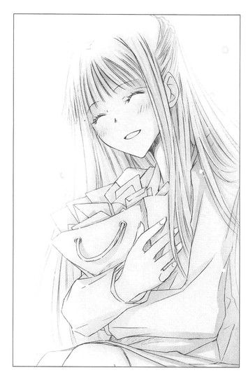
──〝文学少女〟みたいでしょう？
心臓が爆発しそうなほどの、動揺。混乱。狼狽。
二十歳を過ぎて文学〝少女〟なんて、普段なら思いきり突っ込みを入れるとこなのに、動悸が止まらない。ときめいてる。
うわああああああああ、ヤバイ！ ヤバすぎる！
顔がゆでだこみたいになっているのを隠すため、
「急に頭痛が！」
と言いながら、両手で頭を抱えてうつむくオレの心は、紫草で染めた摺衣の乱れ模様のように、乱れに乱れていったのだった。
半熟作家とスキャンダラスな淑女
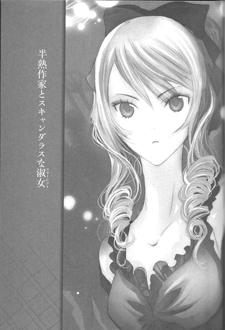
「好きって気持ちは、とっても甘くて酸っぱいの。それで胸がきゅっとして、切なくなっちゃうんだよ」
と、彼女は笑いながら言っていた。
町の古い図書館で。
クリーム色のエプロンの上で、さらさら揺れていた茶色のお下げ髪。
手に本を何冊も抱えて、いたずらっぽく続けた。
「こんな話、まだ快斗くんには早いかな」
悔しくて、眠れなかった。
◇ ◇ ◇
「いやあ、デビュー二年目で十二冊とは、たいしたもんだ！部数も落ちるどころかどんどん伸びているし。アニメやドラマのＤＶＤやブルーレイの売り上げも素晴らしい！今一番注目の若手作家なんじゃないか」
「娘が雀宮くんのファンなんだよ。ナリヒラの役は、雀宮くんに演じてほしかったって残念がってたよ」
「そりゃいい！ 次にドラマ化するときは雀宮くんにやってもらおう」
「またファンが増えるね、雀宮くん」
オレを囲んで、薫風社のおえらいさんたちが「ははは」と笑う。
年明け。都内の某高級ホテルの大広間で、今夜は薫風社のパーティーが開催されている。
シリーズ累計部数五百万部の売れっ子作家のオレも、当然招待されており、腹の出たおじさんたちから称賛を浴びていた。
まぁ、褒め言葉は聞き慣れている。
なにしろオレは、あの大ヒット作、業平涼人シリーズの作者で、男性ファッション誌のモデルもしている若者たちのカリスマなのだから。
周りからも、
「見て、あれ雀宮くんよ？」
「え、あの高校生作家の？ 今十七歳だっけ？きゃー、美形ねー」
「速筆らしいぜ、三日で五百枚書いたって。それがまた売れるんだから、うらやましいよな、ちくしょー」
という声が聞こえてくる。
そうだろう、そうだろう。
オレは速筆の売れっ子の美形で、その事実に偽りはない。
「ここだけの話、雀宮くんの投稿作を受賞させるのは、我々にとっても冒険だったんだよ。が、井上ミウの例もあるからね」
おえらいさんの一人が、したり顔で言う。
井上ミウという名前に、口元がぴくりと引きつる。
「彼のデビューは、実に鮮烈だったね。受賞作の『青空に似ている』は、去年、単行本と文庫の累計が一千万部を突破したんだったかな。受賞者は中学三年生ということで、二匹目のドジョウを狙ったわけだが、きみの話は少年漫画のシナリオみたいで、実はどうかなぁと思ったんだよね。まぁ、特別賞で様子を見るか、なーんて。
けど、見事に予想を裏切って──いや、期待にこたえてくれたね！ああいう作品が、今どきの若者に受けるってことなんだな。まぁ、第二の井上ミウを目指して、これからも頑張ってくれたまえ」
ひくひくと何度も口の端が震える。
このおっさん、編集局長だかなんだか知らんが、失礼なやつだ。
特別賞で様子見だと？
第二の井上ミウを目指せだと？
あんな恋だの夢だの真顔で語ってる、なよなよしたオカマ小説、オレのクールでカッコいいナリヒラの敵じゃねえぜ！
なのに、どいつもこいつも二言目には、井上ミウ、井上ミウって、うっせーんだよ。
業平シリーズの一巻目の累計は百五十万部だが、十年後には二千万部を超えてやる。井上ミウにも誰にも、オレの前は歩かせねー！
おえらいさんたちが去ったあとも、オレは胸に怒りの炎を燃やして、打倒井上ミウを誓っていた。
そういや、井上ミウもパーティーに招待されているはずだ。
ってことは、この会場にヤツはいるのか？
首をきょろきょろ巡らせる。
どいつが井上ミウなんだ？ あのカバみたいな顔したデブか？それとも、あっちのラクダみたいな顔したガリバーか？あっちの眼鏡をかけた、もやし野郎か？
きっとオレよりはるかに劣る、負け豚に決まってる。
でなきゃ、顔出しを拒むわけがないぜ。
うむむ......、人が多すぎてわからん。不細工なやつが、全員井上ミウに見える。
「誰か探しているのかい、雀宮くん」
おだやかな声がして横を向くと、グレイのスーツに身を包んだ、ロマンスグレイ風の眼鏡のおっさんが立っていた。
編集長の佐々木さんだ。
「あ、ご無沙汰してます」
受賞が決まって、はじめて編集部へ挨拶に行ったときは、さすがのオレも緊張していた。
そんなとき、えらぶらず親切に話しかけてくれたのが、佐々木さんだった。
『雀宮くんだね？ 受賞おめでとう』
と、やわらかに微笑んで、手を差し出されたとき、ああ、オレ、本当に受賞したんだなぁと胸の奥が震えた。
基本的に編集者なんて、ろくでもねぇやつばっかだと思っているオレも、この人には少なからぬ敬愛の念を持っている。
なので、頭を下げておく。
佐々木さんは目を細めてオレを見ている。
「久しぶりだね、雀宮くん。会いたい人がいるのなら、私が連れてくるよ」
「井上ミウって来てますか」
「井上くん？ ああ、ちょっと用があって遅れると聞いているけれど、来るはずだよ。雀宮くんは、井上くんと面識は」
「ないです。けど、一度会ってみたくて」
闘志をむき出しにするオレに、佐々木さんはいい人そうな笑みでうなずく。
「そうか、きみも井上くんのファンだったんだね。じゃあ、井上くんが来たら紹介してあげよう。頼めばサインもしてくれるよ。井上くんは恥ずかしがるかもしれないけど」
とんでもない誤解をされて、オレは叫びそうになった。
誰がファンだ！ 誰が！
ミウにサインなんか、死んでもねだるか！
「いや、別にサインは......」
屈辱で顔を赤くしながら、ぼそぼそつぶやくのを、佐々木さんはまたまた誤解したらしく、
「井上くんは、おだやかで人当たりのよい青年だから、緊張しなくても大丈夫だよ。それにしても、きみがそんなに井上くんの小説のファンだったなんて」
と嬉しそうに言い、
「あ、あの、佐々木さん、またあとで」
と耐えきれず去ってゆくオレを、
「井上くんが来たら、連れてゆくよ！」
と、あたたかな眼差しで見送ってくれたのだった。
ぅぅっ、すっかり井上ミウのファンだと思われている。
赤くなった顔を人に見られたくなくて、下を向いて歩いていたときだ。
「快斗くん！ 探していたのよ」
朗らかな声が、オレの名を呼んだ。
「と、遠子さん！」
心臓が、ドキ────ン！ と跳ね上がる。
今夜の遠子さんは、黒のスーツに白いシャツ、プラチナの細いネックレスという、シャープでエレガンスな装いだった。髪はアップにしていて、横からこぼれる黒髪を、ゆるやかに巻いている。
いつもより、もっと綺麗で、なんか色っぽい。首筋の白さと細さが目にまぶしい。
てか、この会場で一番美人なんじゃ。
担当編集者の遠子さんは、オレの初恋のお姉さんに雰囲気が似ている。
そのことに気づいてしまった二ヶ月前から、遠子さんの顔を見たり、遠子さんに話しかけられたりすると、心臓がばくばくするようになってしまった。
くぅぅ、やっぱり、これってアレか？
恋とかラブとか、そういうのか？
遠子さんはオレよりずっと年上だけど、経済力はオレのほうがあるし、結婚しても養ってゆく自信はある。そうしたら遠子さんは、一生オレだけの担当で、オレだけの──って、なに妄想してんだ！
落ち着け、落ち着け、と高鳴る心臓をなだめつつ、クールな表情を作る。
「探してたって、そんなにオレに会いたくてたまらなかったんだ、遠子さん」
右、斜め四十五度。この角度が一番自信がある。鏡で毎日研究しているので、間違いない。
遠子さんは、にっこり笑った。
「ええ。でも快斗くんは目立つから、すぐ見つかったわ」
すみれの花のような笑顔──って表現が、井上ミウの『文学少女』って本に、よく出てきた。
ミウの小説は趣味じゃねーけど、遠子さんを見ていると、ああ、すみれの花のような笑顔って、こういうんだなと、ぼうっとする。
あの小説のヒロインだけは、ちょっと好きだった。
見惚れているオレに、遠子さんが明るい表情で言う。
「紹介するわね、こちらわたしが担当している早川緋砂ちゃんよ」
は？
二人だけの世界のつもりだったのが、よく見ると、遠子さんの隣に、若い女が、ぶすっとした顔で立っている。
赤いドレスを着ていて、髪をアップにしている。けど、遠子さんのまとめ髪が清楚な感じなら、こっちは髪飾りやら、リボンやらで派手派手だ。
くっきりしたきつい顔つきで、濃くて長いまつ毛が気が強そうに、くりんと上を向いている。その下にある鋭い目で、オレを睨んでいた。
ムッ。
オレの顔も険しくなる。
「緋砂ちゃんは大学二年生で、女子大生作家なのよ。緋砂ちゃんのスカーレットシリーズは、快斗くんの業平シリーズと、同じ時期にドラマ化されたのよね」
知っている。
雑誌でも、高校生作家ＶＳ女子大生作家ドラマ対決とか、特集を組まれていた。
そのときスカーレットシリーズを一冊だけ読んだが、スカーレットというあだ名の、やたらと気が強くてクソ生意気で高飛車な女子大生が主人公で、ゲストの男と恋に落ちるがうまくいかず、
『あの男はあたしにふさわしくなかったわ、明日こそあたしにふさわしい男をつかまえるわ』
とか言って、次の恋を探すという、胸くそ悪い話だった。
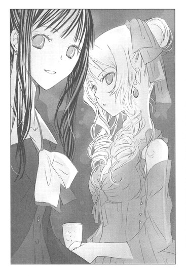
ネットであらすじを確認したところによると、スカーレットは毎回この調子でゲストキャラと恋をし、さんざん大騒ぎしたあげく、
『あの男は、あたしにふさわしくないわ、明日こそ最高の男を見つけるわ』
とワンパターンな台詞を吐くらしかった。
が、なにより気にくわないのは、小説よりも早川緋砂本人のほうを話題にした、売りかただった。
美人女子大生作家だの、スカーレットシリーズの主人公そのままの美貌だのと、もてはやし、電車の中吊り広告に作者の写真が、書影よりも大きく印刷される。
テレビのバラエティで、アイドルの作った料理の試食をしてみたり、クイズの回答者をしていたりするのも、見たことがある。
作家としての筆力がないから、ルックスと話題性で売ろうという戦略が見え見えで、不愉快だった。
なのに同じ雑誌で連載をしていて、掲載順が大抵オレより前というのも、非常～～～にムカツク。
先月の『早川緋砂巻頭特集』は、見本誌を丸めてミキサーに突っ込んで、粉々にしてやろうかと思った。
ある意味、井上ミウより目障りだ。
こいつの担当が、遠子さんだって？
「緋砂ちゃん、雀宮快斗くんよ」
「......知ってる」
早川が、なめあげるような目つきでオレを見ながら、トゲだらけの声でつぶやく。
「ファッション誌のモデルとかしてるタレントで、小説も書いてるんだよね」
なにぃ!?
小説も、書いてるだとぉ？
まるでモデルが本業で、小説のほうが副業みたいじゃないか？
「ああいう業界って十代がピークみたいだから、今のうちに俳優とかに転向したほうがいいんじゃない？ま、ほとんど転向しても消えちゃうみたいだけどぉ。小説よりは、まだ見込みあるかもね」
こ、この女っ。小説は、まったく見込みがないと言いたいのか？
オレはすっと息を吸い込み、口を開いた。
「どーも。そっちもハタチ過ぎてタレント業とか、キツそうっすね。あ、十代がピークって自分の体験談ですか？やっぱ年とると化粧とライトで誤魔化すのも限度がありますからねー。でも早川さんなら、バラエティとかでもイケそうですよ。勘違い高飛車キャラとか、すげーハマってますから」
早川の眉が、ぴくりと上がる。
「業平シリーズ、テレビで見たわ。高校生ハードボイルドとかバカバカしくて、ふつー思いついても誰もやらないわよね。まぁ、キャストと演出と音楽で、だいぶ救われてたけど」
「オレも、スカーレットシリーズ、電器屋のテレビで、通りすがりにちらっとだけ見ましたよ。主役の女優さん、美人でしたねー。あれなら、どんな鼻持ちならないクソな女の役をやっても、嫌味になりませんよね。あ、ドラマのノベライズ本も、結構売れたらしいっすね」
「あなたこそ、深夜アニメのノベライズ本が好調でうらやましいわ。アニメが人気あれば、シナリオをそのまま羅列したような、すかすかの文章でも、ベストセラーですもんね」
「今度表紙、早川さんの写真にしたらどうっすか？そのほうがタレント本ってわかりやすくて、もっと売れますよ」
「──っ！」
オレたちは笑顔と丁寧な口調で、静かに火花を散らしあった。
遠子さんが目をぱちぱちさせて、
「やだ、二人とも勘違いしてるのね。業平シリーズはアニメのノベライズ本じゃないし、緋砂ちゃんもタレントじゃなくて作家さんよ。もちろん、快斗くんも」
と、説明する。
不穏な空気を察して場を和ませようとしているのか、それともオレと早川のあいだに芽生えた敵意に、まったく気づいていないのか謎だ。
遠子さんを挟んで、オレたちはさっきより激しく睨みあった。
と、早川がわざとらしく、遠子さんの腕に自分の腕をねっとりからめて、甘えるように言った。
「遠子さぁん、ケーキ早くとらないと、なくなっちゃうよ。行こっ」
「え？ 緋砂ちゃん」
「待ったッ！ ケーキより、ローストビーフのほうがうまそうだぜ！遠子さん」
二人の前に立ちふさがり、主張する。
「え？ あの、快斗くん？」
「遠子さんはケーキが食べたいわよね？ 甘いもの、大好きだもんね？」
「好きなモンは最後にとっとくほうがうまいって、遠子さんなら知ってるよな？まず、ローストビーフだよな？」
「あ、あの、わたしは、今日は作家さんをおもてなしする側だから、お料理を食べたりできないわ。気持ちだけいただいておくわ」
遠子さんが苦しい笑みを浮かべる。
「客のあたしが食べてもいいって言ってるんだから、いいのよ、遠子さん」
「それ、パワハラだろ。遠子さんが困るだろ」
「なにさ、一人だけいいこぶって。遠子さん、次の短編のプロットの相談があるの、あっちで二人で話そう」
「オレもっ！ シリーズの今後の展開について、ぜひ遠子さんの意見を聞きたいと思ってたんだ！」
「え、えっと」
遠子さんは、きょときょととオレたちを見比べたあと、
「わかったわ。緋砂ちゃんのお話も、快斗くんのお話も、時間をとってじっくり聞かせてもらうわ。あとで打ち合わせの日時をメールするわね」
と、聞き分けのない子供たちを諭す母親のように、にっこり微笑み、
「あ、編集長に呼ばれてるみたい。行かなきゃ。緋砂ちゃん、快斗くん、楽しんでいってね」
と、人混みをすりぬけて、佐々木さんのほうへ行ってしまった。
あとには、オレと早川の二人が残された。
早川がボソッとつぶやく。
「あんたがウザイから、遠子さん行っちゃったじゃないの、クソ高校生」
「おまえの不快な声を聞いてるのが、嫌だったんだろ、バカ女子大生」
オレも、ボソッと返してやる。
「不快ですって、それはこっちの台詞よ。声だけじゃなくて、目も鼻も口も手も足も息も、すべて不快の百乗よ」
「なら、オレは二百乗だ」
オレたちは縄張り争いをする野良犬のように、睨みあった。
周りでは、パーティーに集まった作家たちが、料理を楽しんだり、笑いあったりしている。その中で、オレと早川緋砂を囲む空間だけが、どろどろと黒い渦を巻いている。
やがて、早川が顎をくいっとロビーのほうへ向けた。
「ここじゃ思いきり話せないわ、あんたには前々から言ってやりたいことがあったのよ、表に出ましょう」
「ああ、オレも誰かさんのことは、ずっと気にくわなかったんだ」
ドアのすぐ向こうのロビーは人目につくので、オレたちはクロークで上着を受け取り、ホテル内にある庭園に移動した。
ガーデンパーティーなどに使われることもあるらしいが、今はオレと早川の二人しかいない。月がオレたちの影を、石造りの小さなステージに映している。
つか、寒ぃ。
冬まっただ中の一月に、外で睨み合うのは早計だった。
しかし、ひらひらした薄い布地のドレスの上に、マントのようにコートを羽織っただけの早川のほうが、もっと寒そうだ。
見てるほうが、ぞくぞくしてくるが、早川は手足の震えと鼻水を必死にこらえるように顔をこわばらせ、足を踏ん張っている。コートの裾と、無造作に垂らした巻き髪が、ドラマチックに揺れている。
オレたちのあいだに、びゅーっと風が吹く。
毛虫を見るような目で、早川が言った。
「正直、遠子さんが、あんたなんかの担当になったときから、目障りなのよ」
「オレだって、おまえみたいなタレント作家を遠子さんが担当してるだなんて、胸くそ悪いぜ」
「タレント作家は、あんたのほうでしょう。アニメのＤＶＤ特典に、各話のヒロインの抱き枕をつけたとこまではまだ許せるけど、最終話に作家本人の全身画像をプリントした抱き枕をつけるってキモすぎっ！どういう層狙って商売してんのよ」
早川が薄気味悪そうに、体をすくめる。
「あれは、制作側が『ぜひ先生のクールでイケメンな姿を枕に』と言ってきたから、引き受けたんだ！最終話のセールスが一番よかったんだぞ。売り切れ店続出だったんだからな」
「ああ、ヤダっ、あんたの読者って変態だらけね。書いてるものが悪趣味で単細胞だと、読者も影響を受けるのかしら」
「なんだと！ おまえの読者だって、小説のカバー裏に載せた、おまえの水着写真見てハァハァしてるさ」
早川は首筋まで真っ赤になった。
「──っっ、あれは、編集が勝手に！ あたしが頼んだんじゃないわよ」
「は、どうだか」
鼻で笑ったとたん、頬で平手打ちが炸裂した。
「痛ぇ！」
カッとなって、思わず叫ぶ。
「なにすんだ、てめ！ 顔が腫れて雑誌の撮影できなかったら、賠償金一億請求するぞ」
「そうね、あんたはその甘ったるい顔で、本を売ってるんだもんね。ヤンキーみたいな服着て、へらへらモデルとかして、キモい抱き枕とか作って喜んで──あたしは、あんたとは違うわ！雀宮快斗」
早川が敵意をむき出しにして、叫ぶ。一瞬、くしゃみをしそうになり、顔をゆがめてこらえ、続ける。
「遠子さんだって、あたしの実力を認めて、期待してくれてるんだから。なのに、あんたみたいな顔だけ作家のせいで、あたしのために使うべき遠子さんの時間が削り取られていると思うと、最高にムカつくのよ！」
なんなんだ、こいつは！ さっきから自分の都合ばっか主張しやがって！遠子さんは、おまえの所有物か。
「あんたの中身すかすかの、ト書きみたいな文章を読まされたら、遠子さんの清浄な目が腐るわ。あんたみたいなガキ、遠子さんにふさわしくない！」
その言葉に、頭にいっきに血がのぼった。
ガキだって？ 遠子さんにふさわしくないだって？
「いまどき、女のほうが年上とか関係ないだろっ！七つや八つや九つや十の差がどうした！ににに二十歳年上の女と結婚して、幸せな家庭を築いて、一生添い遂げるやつだって、世の中にはいるんだからなっっっ！」
ゼイゼイ、ハァハァ。
肩で息するオレを、早川が口をぽかーんと開けて見つめる。
それから、おずおずと、
「......あ、あんた......その、まさか......と、遠子さんと結婚して......添い遂げるつもりなの？」
あっけにとられている口調に、頬や頭がカァァァァァッと燃え立つ。
オレはダッシュで早川の肩をつかみ、目をむいて、つめよった。
「黙ってろよ！ と、遠子さんには、いいいい言うなよっ！もし言ったら、ま、ままま抹殺してやる──」
鼻息を飛ばして、噛みつかんばかりに訴えるオレに、早川は目を丸くし、のけぞっている。
そのとき、カシャという音がし、闇が光った。
へ？ カシャ？
驚いてそちらへ顔を向けるオレたちの目を、まぶしい光が射る。
カシャ、カシャ、カシャ。
連続してシャッター音が鳴り、花壇の茂みから人が立ち去る気配がした。
「ちょ、ちょっと今のって──」
早川が、茫然とつぶやく。
オレも早川の両肩をつかんだまま、焦りまくっていた。
やべぇ。早川を抹殺しようとしているとこ、スクープされちまった。
◇ ◇ ◇
『文芸カップル誕生!?
高校生作家・雀宮快斗（16）×女子大生作家・早川緋砂（20）ホテルで密会？
堂々ラブシーン』
翌朝、スポーツ紙にそんな見出しが躍った。
そこには、目を見開いてのけぞる早川と、早川の肩をつかんで、そのまま押し倒さんばかりに身を乗り出し顔をくっつけている（ように見える）オレの写真が掲載されていたのだった。
コンビニで昼食を買うため、マンションを出ようとすると、マイクやカメラを持ったレポーターや記者が駆け寄ってきて、
「快斗くん！ 作家の早川緋砂さんと熱愛中という記事について、なにかコメントを！」
「二人は、いつからおつきあいをはじめたんですか？」
「緋砂さんのほうが四つ年上ですが、年齢差は気になりますか？」
「普段から、屋外でキスされたりしてるんでしょうか？」
オレがいくら、早川と交際したことは一度もないし、あれは出版社のパーティーで、外の空気を吸いに行ったら、たまたま出くわしただけで、キスなんてもちろんしてねーし、ラブシーンでもないんだと説明しても、おさまらなかった。
コンビニで満腹塩鮭弁当を買う姿まで写真にとられ、逃げるように部屋に戻ったのだった。
チャイムが、ぴんぽんぱんぽんうるさいので音を切り、ソファーに座り込み頭をかきむしる。
ああああああっ、くそっ、どうしてこんなことになった。
よりによって、あの高飛車タレント作家と、熱愛報道だとぉ？
あの女とつきあったら、地球上の全人類がオレの本を購入すると言っても、ノーサンキューだし、あいつのクソ生意気な口と、このオレの高貴な口をくっつけるくらいなら死を選ぶ！
だいたい、オレには他に好きな女が──。
頭の中に、さらさらの黒髪と、すみれの花のような笑顔が浮かび、胸が甘くしめつけられる。
とたんにハッとした。
遠子さんも、記事を読んだだろうか!?
きっと出版社にも連絡が入っているはずだ。としたら、担当編集者の遠子さんが知らないわけがない。もしかしたら、遠子さんも取材されてるかも。
──快斗くんと緋砂さんが、おつきあいされていることをご存じでしたか？
──知りませんでした。ショックです。でも、わたしは緋砂ちゃんより、もっと年上で、作家を育てるべき編集者ですから、個人の感情は捨てて身を引きます。
さめざめと涙を流し、去ってゆく遠子さん。
「うああああああああああ、違うんだ！ 早川とは本当になんでもないんだ。行かないでくれ、遠子さん！」
現実と妄想がごっちゃになって、混乱してわめくオレの横で、どっかの黒猫が素知らぬ顔で、にぼしを食っている。こいつ、三味線にしてやろうか。
じっとり睨んだとき、
「こ、こんにちは～......、快斗くぅん」
疲れはてた声がして、遠子さんその人が現れた。
「遠子さん！」
戻ってきてくれたんだな！ やっぱりオレの愛が伝わって──。
妄想を引きずったまま立ち上がり、両手を広げて迎えようとした直後、遠子さんの姿を見て、ぎょっとする。
後ろでひとまとめにした髪が、半分ほどけてたれさがっていて、紺色のコートのボタンが三つほどはずれ、その下の清楚な白いニットも、ネイビーブルーのスカートも、ぐちゃぐちゃだ。
なにより遠子さん本人が、ぐったりした顔をしている。
「と、遠子さん、その姿は......！ なにがあったんだ！」
「マンションの前で、マスコミの人に囲まれちゃって。なかなかお部屋まで辿り着けなかったの」
ふにゃふにゃした声で言う。
「け、怪我とかは？」
「大丈夫よ、ちょっと迫力負けしちゃっただけ。普段、満員電車とか乗らないから」
ソファーに座って落ち着いたのか、オレを安心させるようににっこりする。
「すまない、遠子さん！ あんな記事を書かれて、迷惑をかけて」
「ううん。二人とも出会ったばっかりなのにって、ちょっぴり驚いたけど、恋愛は自由ですもの」
「へ？」
出会ったばっかりって──まさか、オレと早川のことか!?
「快斗くんと緋砂ちゃん、わたしがパーティーで紹介したときも、じぃっと見つめあってたものね。きっとお互い一目惚れだったのね、素敵だわ」
うっとりとした目で、溜息までつくのを見て、愕然とした。
違う！ あれは、お互いガンつけあってただけで、一目惚れして恋の炎が燃え上がったとかじゃないんだぁっ！
口をぱくぱくさせるオレに向かって、〝わかっているわ〟というように、優しく微笑み、立ち上がる。
そうして、ゆっくり本棚まで歩み寄り、白い指で分厚いハードカバーを抜き出した。
「『風と共に去りぬ』──文庫で五冊、単行本で二冊もの壮大な物語ね。作者はマーガレット・ミッチェル。一九〇〇年十一月八日生まれの、ジョージア州アトランタ出身の女流作家よ」
やわらかな声で、いきなり話し出す。
「ミッチェル女史がこの世界的名作を書きはじめたのは、二十代半ば──足首をくじいて、外出もままならなかった、その療養中だと言われているわ。
女史は、まず最後の章から書きはじめたそうよ。
足は三年後に治ったけれど、ミッチェル女史は小説を完成させずに、ずっとしまっておいたの。もし、それから六年後の一九三五年、マクミランの編集者ハロルド・レイサムに出会わなかったら、わたしたちがスカーレット・オハラという希有な女性を知ることはなかったかもしれないわ。
出版までの経緯には諸説あるけれど、一説には、ミッチェル女史は友人の勧めで、彼に書きかけの原稿を読んでほしいと渡したそうよ。原稿はトランク一杯分もあったのですって！それを読んだレイサムは、すぐに続きを書くようにミッチェル女史に言ったの。こうして、一九三六年『風と共に去りぬ』は出版され、大ベストセラーになったのよ」
なんだ？ なにを語ってるんだ？ 遠子さんは？
『風と共に去りぬ』下巻を、ぺたんこの胸にぎゅっと抱きしめ、遠子さんが頬を生き生きと輝かせる。
「ああ、この本はまるで、たっぷりの牛肉と、大きくカットしたじゃがいもとタマネギとニンジンを、アイルランド産の黒ビールで、くつくつ煮込んだ、艶やかなシチューのようね！舌がひりひりするほど熱くて、香り高くて、大地に根をはった人間の強さと情熱にあふれているの！
主人公のスカーレット・オハラは、文学史上もっともあざやかで魅力的なヒロインよ。
裕福な農園の長女として育ち、社交界の花形だったスカーレットは、繊細で芸術家肌のアシュレに想いを寄せているの。けどアシェレは、スカーレットの激しさに惹かれながら、彼女と正反対の、おだやかで控えめなメラニーと結婚してしまうのよっ。
スカーレットはあてつけから、メラニーの兄チャールズと結婚するわ。けれど、南北戦争がはじまって、チャールズは戦死してしまうの！寡婦になったスカーレットは戦禍の中、女手一つで家族や農園を守り、知恵と魅力と根性で、したたかに生き抜くのよ！もちろん、レット・バトラーとのロマンスも、この作品の魅力を語る上で、かかせない味わいだわ！アシュレと正反対の、大人の魅力にあふれた悪党で、シチューに香るぴりっと苦いビールのように、読者に刺激をくれるのよ」
遠子さんは、今にもくるくる回り出しそうだった。
一体、なにが遠子さんを駆り立てているんだ？
オレが、早川とスクープされたのがショックだったのか？さっき、『恋愛は自由ですもの』と祝福するようなことを言ったのは、哀しみを隠すためだったのか？
ああ、もしかしたら今、遠子さんは心の中で泣いているのかもしれない。
遠子さんが、手にかかえた本の表紙を開き、ぱらりとページをめくる。
「スカーレットが再起を誓うラストシーンは、もちろん感動的だけど、わたしのお気に入りはこのシーンよ。税金を払わなければ、大事な土地や家を取り上げられてしまうことになって、スカーレットはレットに金を出してもらえないかと考えるの。
けど、ぼろぼろの古い服を着て疲れきった姿で惨めに懇願することは、彼女の誇りが許さなかったわ。そこで、部屋にかかっていた、びろうどのカーテンで美しい緑のドレスを作り上げて、華やかに装い、女王のように胸を張って、レットに会いにゆくのよ」
遠子さんが、朗らかな声で読み上げる。
「スカーレットは、碧色の目をマミーに向けた。その目はとても楽しそうに、きらきらとかがやいていた。それは、幸福だった昔、マミーに、よくため息をつかせた、いたずらな少女時代の目に、そっくりだった」
「──『さっさと屋根裏へ飛んで行って、ドレスの型紙のはいっている箱を持ってきてちょうだい』と叫んで、彼女はマミーのからだを、ちょっと押しやった。『新しいドレスをつくるんだから』」
まるでスカーレットのように、目をきらきらと輝かせたあと、遠子さんがぱたんと本を閉じる。
「と、遠子さん──もし、オレが早川とデキてると思ってるなら、それは誤解だから。だってオレは──」
遠子さんが、晴れやかな目でオレを見つめて言う。
「恥ずかしがらなくてもいいのよ、快斗くん。緋砂ちゃんは、前から快斗くんのことを気にしていたの。わたしが快斗くんの担当になったって話したら、すごく動揺して、会うたび快斗くんのことを聞きたがるのよ」
それは、遠子さんがオレの担当になったのが気にくわなくて、一方的にオレをライバル視して、探りを入れてただけだ。
けど遠子さんは姉のように優しい笑みで、
「わたし、快斗くんと緋砂ちゃんは、きっと気が合うと思っていたわ。だっていろいろ似てるんですもの」
似てるだぁ！
オレとあの勘違い女が!?
一体どこが似てるんだぁ！ オレのほうがデビューした歳も若いし、アホな女子大生が主役のラブコメも書いてないし、性格だってあれに比べたらオレのほうが百倍謙虚で麗しいぞ。
あまりの言葉に震えるオレに、遠子さんがさらにとどめを刺しにくる。
「だからね、わたし、担当として、二人の恋を応援するわ」
うあああああああああ。
オレは、がしっと遠子さんの両肩をつかんだ。
遠子さんがスポーツ誌の写真の中の早川みたいに、目を丸くする。
「違うんだ！ 遠子さん！ 照れてるとかじゃなくて本当に違うんだ！オレが好きなのはと──」
その名を力一杯叫ぼうとしたとき。
ばたん！
玄関のドアが開く音がした。
遠子さんが来たとき、鍵をかけなかったらしい。
ひょっとしてマスコミの連中が、部屋の中にまでなだれこんできたのか!?
だったら、カメラの前で、この人がオレの好きな人だって宣言してやる！と戦闘モードに突入し、目をキッと吊り上げる。
「遠子さんは、オレが守るよっ」
が、どすどすという品のない足音とともに現れたのは、頭に帽子、目に大きな眼鏡、口にマスクという、除草剤をまく農家のおばさんみたいな格好の女だった。
誰だ、こいつ？
遠子さんがつぶやく。
「緋砂ちゃん？」
なにぃ!?
農家のおばさんが、帽子とマスクと眼鏡をはずして、床に投げつける。そうすると、そこには早川緋砂が、怒りの形相で仁王立ちしていた。
「あんたのせいよ！ どうしてくれんのよ！」
いきなり早川がわめき出す。
「よりによって、あんたなんかと熱愛報道されるなんて！四つも年下のクソガキなんかこれっぽっちも興味ないわよ！なのに、あんたがいきなり迫ってきて」
「待て！ 誰が迫ったんだ！」
「あんたよ！ あんたが、あたしの肩をつかんで、鼻の穴ふくらまして顔近づけて来たんじゃない」
「アホみたいに目をむいてつっ立ってたのは、誰だ。だいたい人の顔を引っぱたいて喧嘩売ってきたのも、そっちで」
「あたしが悪いっての！ 責任転嫁する男って最低！」
テンションを上げるオレたちに、遠子さんが明るく言う。
「わたし、お邪魔みたいだから編集部に戻るわね。快斗くんも緋砂ちゃんも、喧嘩するほど仲がいいっていうけど、ほどほどにね」
「ちょ、ま──」
「遠子さん、行かないで！」
オレが手を差しのべたまま声をつまらせ、早川がべそをかきそうな顔で叫ぶ。
が、遠子さんは軽やかな足取りで、マンションから出て行ってしまった。
「～～～～～～っっ」
早川が唸る。
それから、足を凶器のように振り上げ、オレのケツをいきなり蹴飛ばした。
「うぎゃっ！」
コミカルな叫びが、口から飛び出す。
「なにしやがる、この痴女！」
「うるさい！ 今日は遠子さんと青山に新しくできたカフェでランチしながち、ゆっくり次回作の話をする予定だったのよ。そのあと、テレビで紹介されたケーキのお店行って、青山墓地を散策しながら、あたしたちの将来について語り合おうと思ってたのに。あんたはあたしの疫病神よっっっ！存在自体が目障りなのに、遠子さんに横恋慕とか信じられないっ！この毒虫！腐れ猿！ウナギ豚！」
オレは早川の言葉を遮った。
「おいこら、さっき、さらっととんでもねーこと言わなかったか？あたしたちの将来って、なんなんだ！おまえユリか？遠子さんに、よこしまな感情を抱いてんのは、おまえのほうじゃないのか？」
早川が軽蔑の眼差しをオレに寄越す。
「あんたと一緒にしないで。あたしは作家として、編集者の遠子さんを最高のパートナーだと思ってるだけよ。そのパートナーが、あんたみたいなガキの世話をさせられてるなんて──ああぁぁっ、やっぱり耐えられないわ」
「はっ、最高のパートナーだと思ってるのは、おまえだけだろ。遠子さんのベストパートナーは、このオレだ。はじめて挨拶に来たとき遠子さんは『快斗くんの業平シリーズの大ファンだったの。担当になれて幸せ』って、言ったんだからな」
少々アレンジが入っているが、まあ要約すればそういうことだ。
「な、なんですってぇ！ あたしだって、『緋砂ちゃんの小説って、甘くてスパイシーで大好き』って言われたもの」
「フッ、いくら吠えたところで、遠子さんの担当作家の中で、人気、実力、売り上げナンバー１なのがオレであることは、疑いようのない事実だ」
「ぅぅぅぅ、ムカツク。どうしたら、そこまで偉そうに断言できるわけ」
「天才だから」
早川は絶句する。
口を開け、まじまじとオレの超絶カッコいい賢そうな顔を見て、頭に手をあてたあと、何故かふるふる震え出し、キッと顔を上げた。
「まともに話していると、目眩がするわ。こうなったら、てっとりばやく遠子さんのナンバー１作家が誰なのか、はっきりさせましょう」
そうして、オレに向かって指を突きつけた。
「雀宮快斗、あんたに勝負を申し込むわ」
「勝負だと？」
「そうよ。来月、薫風社のＷＥＢページで、短編小説の競作企画があるでしょう？」
「おう、読者のＷＥＢ投票で、順位を決めるやつだな」
「その企画で、多く投票を集めたほうが、遠子さんのナンバー１作家を名乗ることができるのよ」
「おもしろい、受けて立つぜ」
オレは即座に宣言した。人気投票で、オレが負けるはずがない。
早川が、ふてぶてしい笑みを浮かべる。
「あたしは、デビュー前から温めてきた経済小説を掲載するわ。はっきり言って、負ける気しないわ」
「はっ、どうせ、ちゃらい女子大生が小遣いかせぎに株式投資をはじめて、エリート証券マンとラブコメする話だろ」
怒らせるつもりで煽ったが、早川は自信に満ちた笑みを消さなかった。
「どうかしらね。まぁ、あんたもあたしに負けない自信作で勝負してよね。じゃないとおもしろくないから」
そんな含みのある発言をし、
「じゃあね、結果を楽しみにしてるわ」
眼鏡をかけ、マスクをかけ、帽子をかぶって、モデルのような気取った歩きかたで去っていったのだった。
「ふっ、おまえが、『まいりました雀宮様』と涙で顔をぐちゃぐちゃにしながら頭を下げる日が、オレも楽しみだぜ」
◇ ◇ ◇
百獣の王ライオンは、ねずみを捕らえるのにも全力を尽くすという。
勝つなら徹底的に勝たねばならない。それが王者の宿命だ。
ＷＥＢ用の短編はすでに書き上げていたが、オレはそれを没にし、ネットで読者の嗜好をリサーチするところからはじめた。
最近、ネットユーザーの評価が高かった映画、ドラマ、コミック、ゲームを徹底的に調査し、どこが読者に好まれているのかを分析し、読者の気持ちをさらに惹きつけ高めるためには、なにが必要かを、サブのノートパソコンにメモりながら、考える。
ふむふむ、一攫千金のサクセスストーリーは、やっぱり人気だな。ラストはどんでん返しのハッピーエンドか。って、道で具合が悪そうにしていた婆さんを助けたら、大富豪だったとか都合良すぎだろ。
主人公は、一見取り柄がなく普通に見えるが、実は秘めた力を持っていたり、いきなり美少女に惚れられて、つきまとわれたりするのが受けるらしい。そんなの現実には有り得ねー。
兄と妹の禁断の恋を描いたコミックが五百万部突破？いつの時代のラブストーリーだよ。
老人介護の実態を描いた問題作が、アカデミー賞外国映画部門受賞？って、辛気くせーぞ。客入るのか？
「うむむ、どれもピンとこないなぁ」
本当に人気あるのか？ これ？
パソコンを閉じ、現地調査することにした。
電車に乗り、街の大型書店へ足を運ぶ。
五階の最上階まで行き、平台をじっくり見渡し、そこに置いてある本を手にとって、ぱらぱらめくり、売れセンを確認する。
『定年までに一億円貯める方法』
こんなのがベストセラーなのか？ 年収一億円越えのオレには理解できない。
うろうろ歩いて四階、三階、と下りてゆく。
ここでも平台をガン見していたら、
「きゃっ」
誰かがぶつかった。
「あ、すま──」
謝ろうとして顔を上げると、なんと、早川緋砂だった。
シャンパンゴールドのダウンコートに、細身の黒いパンツという格好だ。顔にサングラスをかけている。
「も、もしかして、雀宮？ サングラスかけてるけど」
「そっちこそ、芸能人ゴッコか？」
とたんに、早川の唇がゆがむ。
「あんたはそうなんでしょうけど、あたしは資料を捜しに来たのよ」
見れば、早川は辞書みたいな分厚い本を、四冊も抱えている。なんとか経済学とか、相場とか投資とか、タイトルにそんな単語が並んでるやつばかりだ。
「経済小説って、本気だったのか？」
「当然でしょ」
「ま、資料集めるだけで満足するやつっているしな」
「なんですって」
早川が眉を吊り上げたとき。
「あのぉ、スカーレットシリーズの早川緋砂さん、ですよね？」
背中にリュックを背負った、豚のように丸々と肥えた男が、汗ばんだ頬を赤らめ、早口で話しかけてきた。
「自分、緋砂さんの大ファンなんです。緋砂さんの出た番組は全部ＤＶＤ録画してるし、雑誌の画像もスキャンして保存してます。うわぁ、実物もやっぱり綺麗ですね～。あ、あのっ、サインもらえますか」
番組だの雑誌だの、小説とまったく関係ないことを並べられて、オレは早川が怒り出すのではないかと思った。それに、ファッションにこだわりのありそうな早川は、この手のオタクっぽい男は嫌いそうだし。
が、
「ありがとう、喜んで」
オレは耳を疑った。続いて目も疑った。
早川が、肥えた男に向かって、にっこり微笑んでいる。
男がリュックからノートとペンを出すと、それを受け取り、ノートにさらさらとペンを走らせ、
「これからも、よろしくね」
と、明るい声で言ったのだった。
男がへこへこ頭を下げながら、離れてゆく。
「......おまえ、デブ専だったのか」
とたんに足を踏まれた。
「痛っ！」
早川は、さっきの愛想の良さはどこへ行ったのか、しかめっつらでオレを睨んでいた。
「そんなんじゃないわよっ。ただ......読者は大切にしましょうねって、遠子さんがいつも言ってるから......」
自分でも柄ではないと自覚しているのか、唇を尖らせ横を向く。
──たくさんの本の中から、快斗くんの本を選んでくれたのよ。それだけで、嬉しくならない？
こぼれそうな笑顔で、ファンレターを差し出す遠子さんが浮かぶ。
そうだな、遠子さんは、いつもそう言っているな。
真面目に実行している早川に、少しだけ好感を持った。オレもこれからは、オレの熱烈なファンたちに外でサインを求められたら、こころよく応じよう。
「あの......すみません」
女の子のおずおずした声。
早速来たか！ オレはサングラスをはずし、振り返った。
「いいだろう。サインは一人一枚までオッケーだ」
「ちょっと、どいていただけますか。本がとれないので」
なに！
制服を着た少女は、平積みしてある本を一冊手にすると、さっさと背中を向けて行ってしまった。
早川が呆れている声でつぶやく。
「......やっぱ、あんたってバカね」
「だ、黙れ」
「あー、こんなやつと競っているなんて、アホらしくなってきた。けど手は抜かないからね。あたしの圧勝で飾ってみせるわ」
不敵に宣言し、早川が去る。
「それはこっちの台詞だ！ 絶対に吠え面かかせてやる！」
遠ざかる背中に向かって、オレも勝利宣言したのだった。
◇ ◇ ◇
帰宅するなりオレは、これまでのデータを元にプロットを練りはじめた。
あれこれ組み合わせてプロットを完成させるまでに一日。四百字詰め原稿用紙換算八十枚の執筆に一日。見直しに一日。
計三日で、オレの才能のすべてを注ぎ込んだ傑作原稿は完成した。
翌日、打ち合わせでマンションにやってきた遠子さんに、プリントアウトした原稿の束を差し出す。
「遠子さん、なにも言わずに、この原稿をエントリーしてくれ」
「エントリーってＷＥＢの短編企画のこと？ けど、あの原稿は、もういただいて......」
「あれはあれで傑作だが、こっちは大傑作だ。オレを信じて、この原稿を受け取ってほしい」
真剣な目で断言するオレを、遠子さんは困惑の表情で見つめていたが、
「とにかく、原稿を読ませてもらうわ」
と、手に取って、ソファーに座ってめくりはじめる。
最初の一ページ目。
遠子さんの可憐な瞳が、驚きに見開かれるのを見て、オレは勝利を確信した。
二ページ目、三ページ目──原稿をめくるごとに、遠子さんのほっそりした体が前のめりになり、額に汗がにじんでゆく。
ときおり、「うっ」とか「えっ」とか「うそっ」とか、動揺が抑えられないといった声をもらし、そこに書かれている文字を、信じられないというように、何度もまばたきして見つめ、最後は深すぎる感動のため、青ざめてしまった。
「か......快斗くん、これ本当に、ＷＥＢに載せるの？」
「オレを信じてくれ」
「で、でも」
オレは向かいのソファーから身を乗り出し、遠子さんのやわらかな両手を、しっかり握りしめた。
「この小説に、オレたちの未来がかかってるんだ」
「お、オレたち？」
そうだ、ＷＥＢ投票でぶっちぎりのナンバー１になって、早川をへこませたら、遠子さんに告白しよう。
──好きだ、遠子さん。オレの専属編集者になってくれ。
──でも、わたしは快斗くんよりずっと年上よ。
──関係ない。遠子さんがオレより二十歳年上でも、オレには遠子さんしかいない。
──嬉しい！ 快斗くん！
ひしっ。
夏の高原で、白いワンピースの遠子さんと抱き合う場面を妄想し、鼻血を吹きそうになる。そんな虹色に輝く未来を迎えるために、この小説を読者に向かって発信しなければならないんだー！
阿修羅のように闘気をみなぎらせ、目を据わらせるオレに、遠子さんがふいに真面目な顔で尋ねた。
「快斗くん、このお話は、どうやって考えたの？」
「ネットや書店で、読者の好きなストーリーを調査して、オレなりに分析してみた」
賢さのにじみ出る口調で言うと、遠子さんはまた意外そうに目を見張った。
「......快斗くんが、読者の声を気にして、お話を作ったの？」
「ああ、これこそ、読者を楽しませる究極のストーリーってやつをな」
ふてぶてしく微笑んでみせる。
遠子さんは、まだ真面目な顔でオレを見ていた。そうして、なにか考え込むように目を伏せ......。
「わかったわ」
顔を上げ、オレの手をそっとはずした。
「一応、預かります。まだ載せるとは断言できないけれど」
「遠子さん！ オレは遠子さんを信じている。遠子さんもオレを信じて、その原稿を読者に発信してくれることを」
力を込めて断言するオレに、遠子さんは困ったような顔をしていた。
遠子さんが帰った後、いつもの黒猫が、にぼしをたかりにやってきた。
「どんどん食え、前祝いだ」
と、にぼしを振る舞いながら、オレは心の中で叫んだのだった。
待っててくれ、遠子さん。
オレがナンバー１になったそのとき、遠子さんの背丈くらいある花束を持って会いに行くぜ！
◇ ◇ ◇
恋人になったら、最初のデートはどこへ行こうとか、二人で温泉旅行とかもしてみたいとか、あれこれ妄想しながら三週間が過ぎた。
早川との熱愛報道は、他に大物芸能人の電撃結婚や、不倫騒動なんかがあって、すぐにおさまった。
早川のファンが、オレの小説を焚書にするオフ会を開いたり、出版社にオレの全身抱き枕を切り刻んで送りつけてきたり、ムカツクこともあったが、遠子さんとの虹色の未来を思い浮かべたら、どうでもよくなった。
まぁ、早川のほうにも、オレのファンから剃刀レターが届いたというから、おあいこだな。
どっちのファンの方がえげつないかということを、携帯ごしにたっぷり二時間も討論してしまった。
「いまどき剃刀ってセンスが信じられない、あんたのファンって欲求不満のオバさんとかなんじゃないの？」
「はんっ、ネットで仲間集めて人の本を燃やすような、陰湿集団のファンのいるやつに言ってほしくないね」
「まぁ、いいわ。どっちが作家として優秀かは、もうすぐわかるんだから」
「オレの勝ちは決まってるけどな」
そんな風にして、オレの大傑作がＷＥＢに掲載される日がやってきた。
遠子さんはオレを信じて、原稿を差し替えてくれていた。パソコンの画面に浮かび上がるタイトルが、オレと遠子さんの愛の証のように思えて、胸が甘くとどろいた。
意外なことに早川の小説『ゴールドライセンス』は、エリート銀行員と、投資家になった元同級生の二人が、莫大な負債を抱えた航空会社の再生を巡ってぶつかりあう硬派なストーリーだった。
今まで早川が得意としてきた、軽いタッチの都会的なラブストーリーとはまったく違う。
これ、本当に早川が書いたんだよな......？ うむむ......思ったより手強いかも。
が、オレの小説のインパクトにはかなわないはずだ。
オレはネットで読者の声を検索しはじめた。
アンケートの結果が出るのは一週間後。それまで、読者の驚きと称賛の声を眺めて過ごすとしよう。
『雀宮の〝或る少年の挽歌〟って話、ひどすぎ』
あれ？
目の錯覚だろうか？
ディスプレイに表示された文字を、もう一度じっくり見直す。
『小学生の作文レベル。読者をおちょくってる。いくらＷＥＢでタダ読みできるからって、適当すぎ。この話、三分で考えたとかだろ』
おかしい。絶賛の嵐のはずが、糞味噌に貶されている。
『雀宮快斗のＷＥＢ小説を読み終わりました。一言でまとめるなら、ゴミです。
ストーリー、破綻しています、滅茶苦茶です。
平凡な高校生が、いきなりアメリカ大統領の娘に惚れられます。ニューヨークに拉致られますが、たった一行で逃げ出し、ラスベガスのカジノへ行き、そこで何故か超能力に目覚め、三十億儲けます。
実は主人公は、アメリカの研究室で、遺伝子操作により誕生した超人類だというのです。世界を破滅させかねない力を持っていたため、記憶を封印され、日本で平凡な高校生活を送っていたのでした。
そのことを主人公に伝えた大統領の娘は、さらに衝撃の事実を告げます。実験に使われた精子は大統領のもので、主人公と自分は半分血の繋がった兄と妹であると。
彼女から逃げ回っていたくせに、唐突に愛を燃え上がらせてしまった主人公は、禁断の恋に苦しみます。
彼女と手に手をとって、大統領の放った追っ手と死闘を繰り広げながら、世界中を逃避行するのです。といっても、このあたりの描写はたった三行で終わっています。
エジプトのスフィンクスの前で、大統領が病に倒れたことを知った二人は、父親への断ちがたい愛情から、病院へ駆けつけるのでした。
ニュースを聞いてから決断するまでも、たった二行です。
そうして、老いた大統領と和解したバカップルは、大統領が亡くなるまで同居し介護すると約束するのです。
ちなみに大統領の娘は、奥さんが浮気相手とのあいだに作った子供で、大統領とも主人公とも血の繋がりはなく、最後にハリウッドの教会で結婚してました。どうでもいいですけど』
あらすじが長々と書かれた記事のコメント欄には、
『このストーリー、マジですか？ 本当にプロの作品なんですよね？』
『自分も読んだけど、展開早すぎ、わけわからなすぎ』
『雀宮、終わったな』
『ラストで主人公が〝ぼくは、老人介護問題から逃げるべきじゃないと思う〟ってカッコつけて言ったの、爆笑した。アホか』
『今年一番のギャグ小説』
等々、目眩がするような言葉が並んでいる。
他の感想も検索してみたが、一言読むたび心臓を槍で突き刺され、ぐりぐり抉られているようだった。
バカな......！
読者は、一発逆転のハッピーエンドを求めていたんじゃないのか！
平凡な少年が、秘められし能力を発揮することを、期待していたんじゃないのか！
押しかけツンデレ美少女に萌えたがってたんじゃないのか！
兄と妹との禁断の愛に、憧れていたんじゃないのか！
老人介護問題は、読者の共通の悩みじゃなかったのか！
それを全部ぶちこみ、極上のエンターテイメントに仕上げたオレの小説が、何故ここまでコケにされなきゃならんのだぁぁぁぁ！
あまりの理不尽さに怒りが込み上げ、ディスプレイに素手でチョップを入れかけ、直前で思いとどまる。
フッ、声が大きい一部の読者の戯れ事に惑わされてどうする。
まともな読解力のある大多数の読者は、オレの作品に投票するはずだ。
そうさ、ネットでわめいているやつは、みんなオレのあふれんばかりの才能とルックスに嫉妬している負け豚どもなんだ。
優れているものを認めることができず、批判をすることで自分が偉くなったと錯覚している低俗なやつらだ。
そうだ、じたばたすることはない。
すべて、アンケートが集計されれば、わかることだ。
そしてオレは、アンケートで一位になることを、まだ疑っていなかった。
◇ ◇ ◇
一週間後。
遠子さんが、お通夜に列席するような静かな表情で、やってきた。
「......アンケートの結果が出たわ」
上目遣いにそっとオレを見て、言いにくそうに口を閉じる。
「遠慮することはない。結果はわかってるから、はっきり言ってくれ。オレの順位はどうだった」
遠子さんが、まだひっそりと、
「一位だったわ」
おおっ！
「......ビリから」
なにぃ！
「しかも、ダントツで」
頭に隕石がぶちあたったような衝撃が、オレを襲った。
ビリ!?
このオレが、ビリ!?
しかも、ダントツで!?
凍りつくオレを、遠子さんが痛ましそうに見つめる。
「で、でもっ、快斗くんは、アクセス数はダントツの二位だったのよ。読者の興味を惹きつけた証拠よ」
「ダントツ二位ってなに......」
「一位と二位のアクセス数が突出していたの。一位との差だって、ほんの少ししかないわ。同率一位のようなものよ」
「アクセスの一位って、誰」
「井上ミウよ」
遠子さんが急ににっこりする。
「彼に並ぶなんて、すごいわ！ 快斗くん」
オレを励まそうとしているのか、明るい声を出す。
「......井上ミウは、アンケート、何位だったんすか」
遠子さんは、ますます笑顔になった。
「もちろん、ダントツで一位よ」
オレの顔が反射的に青ざめる。
アンケートも井上ミウが一位！
アクセス数で競ったオレは、ダントツ、ビリだというのに。オカマ小説の井上ミウに、読者の支持で完敗しただと！
ハッ！ それより早川は何位だったんだ？ オレと同率ビリとか......。頼む、そうであってくれ！でなきゃ、あの女に敗北してしまう。遠子さんのナンバー１作家の座を、とられてしまう！
わずかな可能性を祈りながら、
「は、早川の順位は？」
と尋ねると、また嬉しそうに、
「緋砂ちゃんは二位よ」
「それ、ビリから？」
「いいえ、読者の投票数よ。緋砂ちゃん、今回、ものすごく頑張ったの。あのお話を書くために、何年も前から準備して、いっぱい取材もしたのよ」
ほんわりした表情で、遠子さんが語る。
その声も言葉も、オレの耳を華麗にスルーしていった。
早川に負けた。
オレはビリで、早川は二位......。
力が抜けて、床にがくっと膝をつく。
「快斗くん......！」
遠子さんが、慌てて床にしゃがみ込む。
「そんなに落ち込まないで、快斗くん。今回の結果は残念だったけど、快斗くんにはいい勉強になったと思うのよ。次は、読者に好きになってもらえるお話を書きましょう。わたしも力になるから」
「遠子さん、帰ってくれ......」
オレはうなだれたまま言った。
涙が目に、じわじわとたまってゆく。
「敗者への情けがあるなら、い、今は、ぐすっ、ひ、一人にしてくれぇぇぇ」
肩を震わせるオレに憐れを感じたのか、遠子さんは、
「あとでメールするわね」
と優しく言って、帰っていった。
うっうっ、このオレが敗北するなんて。
オレは、天才カリスマ作家じゃなかったのか？業平シリーズがたまたま当たっただけの一発屋だったのか？このルックスで、女性読者が本を買ってくれていただけの、タレント作家だったのか？
ああああああああ、こんなオレでは遠子さんに告白する資格なんかない。
オレは勝負に敗れた。
もう遠子さんのナンバー１作家ではなくなってしまったんだ。
きっと内心では遠子さんも呆れているに違いない。
──快斗くんて、売れっ子で才能あって将来安泰の安全株だと思ってたけど、違ったのね。メッキがはがれた感じ。がっかり。
さめた表情で、そんなことをつぶやいている遠子さんの姿が浮かび、オレはまた、「わああああ」と叫んだ。
床をごろごろ転げ回りながら、今浮かんだ映像を追い払おうとする。
違う！ 遠子さんはそんな女じゃない。
けど、この先遠子さんに会うたび、自分は遠子さんにふさわしくないという引け目から、そんな妄想がわいてしまいそうだった。
床につっぷして、しくしく泣く。
窓を開けて入ってきた黒猫のやつに、涙をぺろぺろなめられながら、そのまま眠ってしまった。
翌日も、気分は最悪だった。
『落ち着いたら連絡をください。差し入れに、快斗くんの好きな八目鰻の蒲焼き弁当を持ってゆきます』
遠子さんのメールを見て、また目からだらだらと塩辛い液を垂れ流していたとき──。
玄関のドアが、がちゃっと開いた。
昨日、遠子さんが帰るとき鍵をかけ忘れたのか!?
勇ましい足音を立てて部屋に入ってきたのは、今一番会いたくない女だった。
ぐっ、早川緋砂。
敗北したオレを、あざ笑いに来たのか？
今日の早川はサングラスもなしで、メイクも髪型も決まっており、前を開けたカシミアっぽいロングのコートに、ミニのワンピースを着て、ライトストーンの長いネックレスを、首からさげている。てかおまえ、この前といい今回といい、入り口のオートロックをどうやって突破した？副業でドロボーでもやってんのか？
「ふ、ふんっ、めかし込んで、勝利宣言でもするつもりか」
せめて弱みは見せまいと涙をぬぐい、言ってやる。
早川は、部屋の入り口のところに立ったまま、オレを睨んでいる。
なんか様子がおかしいと思ったのは、早川の大きな目に涙がにじんでいるのに気づいたときだった。
オレに勝った喜びの涙ではなさそうだ。
と、早川が手に持っていたブランドバッグを、オレに投げつけた。
「アブねぇじゃねぇか！」
よけそこねて顔面で受け止め、怒鳴りつけた瞬間、ぎょっとした。
早川が床にぺたんとしゃがみ込み、両手で顔をおおって肩を震わせはじめたのだ。
ひょ、ひょっとして、泣いてる!? あの高慢不遜な早川緋砂が!?
「こらっ、なんで泣くんだ！ おまえ、アンケート二位だったんだろ？泣きたいのはビリのオレのほうだ！」
「......遠子さんが」
早川が、弱々しくつぶやく。
「遠子さんがどうしたんだ？」
「ぐすっ、あたしの担当、やめるって......っ」
「なにぃ」
ひっくとしゃくりあげ、そのまま嗚咽する。
「どういうことだ、早川？ まさか、遠子さん退職──」
焦って尋ねると、手で顔をおおったまま、首を横に振った。
そうして、途切れ途切れにしゃべり出す。
「っ......今日、打ち合わせで、アンケートが二位だったお祝いをしましょうって言われて、すごく嬉しくて......遠子さんと次の書き下ろしの話をしようって、前の日の夜から、楽しみにしてたの。な、なのに......っ、レストランに行ったら、遠子さんの隣に、知らない男の人がいて......っ。あ、あたしの、新しい担当だって言うの......！」
説明する声は、絶望で震えていた。
担当替えなんて、よくあることだ。オレだって、遠子さんが五人目の担当だし、最短一週間で担当が替わったこともある。『××は失踪しました』と言われて、唖然としたものだ。
こいつだけは我慢ならないと、編集長に直接抗議して、担当を替えてもらったこともある。
四人目の担当とも喧嘩別れで、そのあと来たのが遠子さんだった。
担当編集者との相性が、創作のモチベーションに影響したり、作品に反映されたりする。だからどの作家も、デキる担当、相性のいい担当、信頼できる担当と、仕事がしたいと望んでいる。
早川にとっては、それが遠子さんだったはずだ。
「ひっく、あたし、ショックで──あ、頭の中、真っ白になって、具合が悪いのでって、帰ってきちゃった」
きっと、見捨てられた気持ちでいるのだろう。
毛嫌いしていたオレのマンションへやってきて、感情をぶちまけずにいられないほど、混乱して、傷ついている。
震え続ける早川の肩は、やけに小さく頼りなく見えて、こっちの胸まで疼いた。
「た、担当、遠子さんじゃなきゃ......書けないよぉっ。あたしの作品、わかってくれたの、遠子さんだけだもの。あたし、ずっと、シリアスな経済小説が書きたかった。なのに、若い女の子なんだから、ライトな恋愛モノのほうが受けがいいって、受賞作も、書き直しさせられて......。スカーレットシリーズが売れたからって、それしか書かせてもらえなかったっ」
オレんちのティッシュを勝手に引き出し、それで洟をかみ、ますますうなだれる。
「著者近影で、み、水着の写真なんて載せたくなかったし、テレビなんか出たくないのに......。雑誌のインタビューでも、作品のことは、ほとんど質問してもらえなくて、好みのタイプとか、今つきあってる彼氏はいるかとか、バカンスはどちらで過ごされますかとか、そんなのばっかり......っ。あたしは、タレントじゃないっ。作家なのにっ。
顔とかスタイルとか、褒められても、全然嬉しくないっっ。誰も、あたしの書いたものの話をしてくれないっ」
オレは、ルックスを褒められれば嬉しいし、モデルの仕事も好きだし、もっとオレのカッコいい姿を世に広めるべきと思っている。
けど、早川にとっては、作品よりも容姿や若さをもてはやされることは、辛いことだったんだな。
実力で勝負したくても、書きたいものを書かせてもらえず、お洒落な恋愛小説ばかりを求められて、ずっと鬱屈した思いを抱いていたのだろう。
タレント作家とバカにして悪かったな......。
胸がまたしめつけられた。
「......担当、いままで三人替わったけど、ぐすっ、あたしの話を真面目に聞いてくれたの、遠子さんだけだった。『緋砂ちゃんなら、すごい経済小説が書けるわ』って言ってくれたのも......。前の担当は、そんな重い話、きみのカラーじゃないし、出しても売れないからダメって、企画書もろくに読んでくれなかったのに。
こ、今回のＷＥＢの話も、遠子さんが編集長にかけあって、通してくれたの。
『これでいい評価をもらえれば、長編でも書かせてもらえるわ、頑張りましょう』って言ってくれて──。だ、だから、うんと頑張ったのに！アンケートも二位で、結果を出したのに──どうしてっ、どうして、また担当替えなのっ！遠子さんは、あたしの担当、やめちゃうの？」
──緋砂ちゃん、今回、ものすごく頑張ったの。あのお話を書くために、何年も前から準備して、いっぱい取材もしたのよ。
自分のことみたいに、ほんわり微笑んでいた遠子さん。
なのに、早川の担当を、別のやつに譲ってしまった。
上から命じられれば、平の編集者は逆らえない。でも、それは、遠子さんの本意だったのか？
泣きじゃくる早川は、今にも溶けてしまいそうだ。
今の早川は、強く華やかなスカーレットには見えない。
弱くて惨めで、平凡な女だ。
けど。
「泣いてる場合じゃねーだろ、早川緋砂」
オレは、煽るような声で言った。
「落ち込んでても仕方がない、明日こそ最高の恋を見つけようってのが、おまえの小説の主人公の決め台詞じゃなかったのかよ。『風と共に去りぬ』のスカーレット・オハラだって、こんなとき、めそめそ泣いたままうずくまってたりしねぇぞ」
早川が顔をおおう手をはずし、驚きの表情でオレを見上げる。
「はっ、ファンデよれて、ぐちゃぐちゃじゃねーか。マスカラが落ちて、目がパンダになってるぞ」
「な、なによ！」
パンダの早川が、真っ赤になって、わめく。
「こんなときくらい、気ぃつかって口閉じてなさいよっ、最低の男ね！」
「ライバルに慰められて、嬉しがる女じゃないだろ、おまえは」
オレは、ぴしゃりと言ってやった。
早川がハッとし、表情をひきしめる。
「いいか？ スカーレットは、美人なだけの人形じゃねーぞ。『風と共に去りぬ』を、おまえも読んだだろ？戦争でどん底の生活に叩き落とされて、金がなくて困って、レット・バトラーに無心に行こうってときに、ドレスのことなんか考える女だ。
ぼろぼろの服を着た惨めな姿をレットに見せたら、あなどられるってな。
自分は女王でなきゃいけないって、どんなときも思ってる女だ。
レットを思い通りに操るため、カーテンで作ったドレスで着飾って、堂々と戦いを挑みに行くんだよ、スカーレットは！」
思いきり上から目線で見おろしながら、叫ぶ。
「早川緋砂！ おまえも、思い通りにならないことがあって嘆いているだけじゃなく、スカーレットみたいに立ち上がって戦え！担当替えに納得がいかないなら、編集長に直談判でもなんでもしてみろ。めそめそ泣いたまま、あきらめるな！簡単に受け入れるな！とびきり上等な装いで、立ち向かえ！」
そう、スカーレットは、決して外見だけの女じゃない。
したたかで、計算高く、どんなに困難なときもあきらめない。
『あたしは、乞食のように、あの男の前に頭を下げたりはしまい。恵みをたれる女王さまのようにふるまってやる。どうせ、あの男には、あたしの心の中はわかりはしないのだから』
そうして、戦禍で荒れ果てた土地を、二本の足でしっかりと踏みしめ、なにをしても生きてみせると叫ぶのだ。
『神さまが証人だわ。神さまを証人にしてあたしは誓う。あたしはヤンキーなんかに屈服しやしない。どこまでだって生き抜いて見せる』
『よしんば、そのためには、盗んだり人殺しまでしなければならないとしても──神さまを証人にして、二度とひもじい思いなんかするものか』
早川が立ち上がる。
メイクが落ちて、ひでぇ顔になっているけれど、目だけは闘う意志を取り戻し、強く光っている。
そうして、ゆるく巻いた髪をばさりと後ろにふりやり、胸をそらし、不遜に言った。
「編集部へ行くわ。その前に着替えなきゃ」
◇ ◇ ◇
オレと早川が連れだって現れた瞬間、編集部はざわめいた。
体の線を優雅に浮き立たせた、赤いミニのワンピース。その上から赤いレザーのロングコートを羽織り、首にも赤いストールを巻いている。
全身、燃えるような赤。
それでいて、気品を失っていない。
赤いハイヒールのかかとを美しく鳴らし、早川緋砂が進む。
その横を、ブランドのスーツに身をかためたオレも、歩いてゆく。
デスクで仕事をしていた編集者たちが、目を丸くし、息をのむ。
「緋砂ちゃん、快斗くん......！」
自分のデスクで仕事をしていた遠子さんが、ぎょっとしたように立ち上がる。
周囲の視線を集めながら、早川はまったく動じる様子を見せず、女王のような威厳と高慢さをただよわせ、編集長のデスクを目指し、進んでゆく。
きっと内心は、気が遠くなりそうなほど怖いだろう。
薄い布地の下の心臓は、高鳴りまくっているに違いない。
それでも、早川の肩も、手も、震えていない。赤く染められた唇も、閉じたまま揺るがない。まるで、自分のほうが格上の人間であり、この場のルールを決めるのも自分であるかのように、ピンヒールを鳴らす。
目に焼きつくような緋色のレザーコートの裾とストールが、華麗に揺れる。
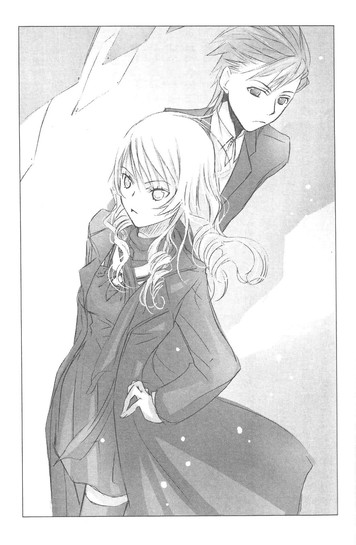
編集長の佐々木さんはデスクに座ったまま、はじめのうち困惑している顔で、次に真面目な顔で、早川を見た。
早川も佐々木さんの目をじっと見つめ、きっぱりした声で言った。
「大切なお話があって、来ました」
「雀宮くんもですか？」
佐々木さんがオレのほうへ視線を向ける。
「オレは付き添いっす」
早川の後ろから真顔で答えると、佐々木さんは目元をなごませた。
「では、会議室へ行きましょうか」
おだやかに申し出る。
遠子さんが呼ばれ、オレと早川と佐々木さんと遠子さんで、いくつもある会議室のひとつへ移動する。
早川の新しい担当の馬場とかいうやつは外出中だった。戻ってきたら会議室へ来るよう、佐々木さんが他の編集者に伝える。
「さて、早川くんのお話はなんでしょう？」
席に着き、佐々木さんが尋ねるなり、早川が立ち上がって話し出す。
「担当替えに納得がいきません。『ゴールドライセンス』は、遠子さんと一緒に立ち上げた作品です。この先も、遠子さんと一緒に育てて、ヒット作にしたいと思っていました。今、担当を替えられたら、せっかく良いスタートを切れた作品が、ダメになってしまう可能性があります。遠子さんを担当に戻してください」
自分の意志をまっすぐに伝える早川。
スカーレットは嫌な女だけど──目的に向かって突き進む、その度胸と根性は嫌いじゃない。
早川のガッツが、佐々木さんに伝わればいい。
早川の隣で、張りつめた美しい横顔を見つめながら、らしくもなく祈る。
「すみませんが、それはできません」
佐々木さんが優しい顔で断言した。
早川が眉を上げる。
「けど──」
さらに訴えようとするのを制し、やんわりと佐々木さんが続ける。
「担当替えは、天野くんの希望なので」
信じられないという目で、早川が、佐々木さんの隣に座っている遠子さんを見る。早川の顔は真っ青で、見ているこっちの胸も抉られるようだった。
マジかよ、遠子さん。
遠子さんは眉をちょっと寄せ、弱っているような顔をしている。
耳たぶのあたりが熱くなって、オレは立ち上がった。
「おい、遠子さん！ そいつは早川への裏切りじゃないか？早川は、遠子さんを信じて頑張ってきたんだぞ！遠子さんだけが、自分の作品をわかってくれたって、オレに言ってたんだぞ！遠子さんとじゃなきゃ書けないって！」
「やめて、雀宮っ、もういい」
早川が泣きそうな声で言い、オレの腕をつかむ。
「よくねー！ 早川は、アンケートで二位をとって、結果を出しただろう！遠子さんも、緋砂ちゃんは頑張ったって、嬉しそうに言ってたじゃねーか！なのに、なんで早川の担当を降りるんだよ！」
遠子さんに会うまで、担当なんて誰でも同じだと思っていた。
オレはオレの書きたいように書いて、担当はそれを受け取って、校正して、印刷所に入れる作業だけしてればいいって。
けど、遠子さんが担当になって、作品のことを話し合える相手がいるって、ちょっといいなって思いかけていたんだ。
その相手がオレの作品を気に入ってくれて、一緒にひとつの作品を作っていけたら、ちょっと楽しいかもって。
なのに、それまで親身になってくれた相手から、こんな風にいきなり手を離されたら、たまらない！
心臓が破けそうになる！
遠子さんは、びっくりしている目で、オレを見上げている。
ガキっぽい感情論だってのは、わかってる。配置換えや転勤なんて、大人の社会じゃ普通のことだって。
それでも──早川の想いは遠子さんに届いていなかったのかと思うと、体中がひりひりした。
そのとき、遠子さんが微笑んだ。
「──緋砂ちゃんが結果を出したから、わたしは緋砂ちゃんの担当を、馬場さんに譲ると決めたのよ」
優しく澄んだ瞳が、早川のほうへ向けられる。
早川が、ぴくんと肩を揺らす。
「緋砂ちゃんは、重厚でドラマチックな経済小説を書きたいって、ずっと言っていたでしょう？これまで本をたくさん読んで、取材をして、頑張っていたわね。わたしも緋砂ちゃんとお仕事をするのが楽しかったし、緋砂ちゃんがアンケートで二位になって、本当に嬉しかったわ。緋砂ちゃんには、大きな可能性がある。きっと、ハーブのつめものをして、ブラックベリーソースをかけていただくコールドチキンのように、計算されつくした深い味わいを持つ、経済小説が書ける。
これからの緋砂ちゃんには、わたしよりもっと頼りになるパートナーが必要だわ」
「と、遠子さん以上の人なんて──」
声をつまらせる早川に、おだやかな眼差しで遠子さんが言う。
「新しい担当の馬場さんは、経済誌の編集をしていた人なの。緋砂ちゃんの強い味方になれる人よ」
早川が、小さく息をのむ。
元経済誌の編集者？
それは確かに、経済小説を書きたい早川にとって最高の担当で......。
だから、遠子さんは早川を、彼に託したっていうのか？
早川の目に、みるみる涙が盛り上がってゆく。
「で、でも、やっぱり怖い......。遠子さん以外の人と、あたし、書けるのかな......。『ゴールドライセンス』だって、遠子さんとじゃなきゃ、書けなかった......っ」
すみれの花のように、遠子さんが微笑む。
「わたしは緋砂ちゃんが書く環境を整えて、作品を発表する場を作っただけ。『ゴールドライセンス』が読者に支持されたのは、緋砂ちゃん自身の力よ。古今東西の本を味わいつくしてきた〝文学少女〟のわたしが言うのだから、間違いありません」
早川の頬を、ぽろぽろ涙がこぼれてゆく。
「頑張ってね、緋砂ちゃん。わたしは緋砂ちゃんの小説のファンだから、担当じゃなくなっても、緋砂ちゃんを応援しているわ」
「い、いままで──、お、お世話に、なりました。と、遠子さんの期待に、こ、応えられるように、こ、これからも──頑張って、か、書き続けますっ」
なんだか、こっちまでもらい泣きしてしまいそうだった。
遠子さんが、早川の姉さんみたいに、うんうんと、うなずいている。
その横で、編集長の佐々木さんも、ほっこりした顔をしている。
「失礼します」
遅れてやってきた新しい担当の馬場さんは、三十前後のスポーツマンぽい雰囲気の、おじさんだった。
早川が、うさぎみたいな赤い目でボロ泣きしているのを見て、ぎょっとしていたが、
「ひっく、き、昨日は急に帰ってしまって、申し訳ありませんでした。い、一生懸命勉強させていただきますので──ぐす、これからよろしくお願いいたします」
深々と頭を下げられて、
「こちらこそ。文芸の編集は経験が浅くて、逆に早川さんに教わることも多いかもしれない。ぼくが間違っていたら、遠慮なく指摘してください」
と、照れくさそうに答えていた。
なかなか、いいやつそうだ。
遠子さんが早川を託すと決めた相手なのだから、悪いやつのはずなかったんだよな......。
◇ ◇ ◇
あらためて引き継ぎをするということで、遠子さんと早川と馬場さんはそのまま残り、オレと佐々木さんは部屋を出た。
直前に早川が駆け寄ってきて、
「あ、ありがとう......雀宮、その、いろいろ」
と真っ赤な顔で言った。
「オレが楽しめそうだったから、勝手に見物に来ただけさ」
と答えて、背中を向けた。
心の中で、（よかったな、早川）と、つぶやく。
ライバルを激励するなんて、オレのガラじゃねーし、あちこちこそばゆいんだけどさ。ま、よかったよ。
すっかりいい気分で、さぁて、用もすんだし帰るか、なんて思ったとき。
「雀宮くん、ちょっとお茶でもどうですか」
佐々木さんに、おだやかな声で言われて、ドキ──ンとした。
そうだ！ オレ、アンケートで、ダントツビリだったんだ！出版社に、のこのこ顔出せる立場じゃなかったんだ！
「は、あの......でも、その」
「下のカフェのコーヒーが、なかなかいけるんですよ」
「はぁ......」
断りきれず、ドナドナされる仔牛の気分で、佐々木さんについていったのだった。
やべぇ。ピンチだぜ。
出版社の地下のカフェで、オレは佐々木さんの向かいの席で、硬直していた。
『雀宮くん、アンケート、ビリだったね？ しかもダントツぶっちぎりで』
とか言われたらどうしよう。
昨日までのオレは、出版社に利益をもたらす年収一億円越えの、速筆売れっ子作家様だった。けどその栄誉も、アンケートぶっちぎりビリの前では、地に落ちたも同然だ。
今のオレは、編集部のお荷物で、リストラ候補ナンバー１で──。まさか、この場で戦力外通告を出されるんじゃ。
──雀宮くん、きみもう、うちで書かなくていいよ。あんな作品書かれたら、うちの品位が下がるから。
──読者からも、きみの話が載ってたら雑誌買わないって、抗議メールが殺到してね。
意地悪そうに、ぷかーっとタバコの煙を吹きかけてくる佐々木さんの姿が浮かび、汗がだらだらこぼれた。
「ん、暑いのかい？ 雀宮くん？ スーツの上着、脱いだほうがいいんじゃないか？」
実際の佐々木さんは、タバコなんて吸ってないわけだが、どうしても緊張がとけない。
「は、はい、失礼します」
上擦った声で言い、ジャケットを脱ぎ、横の椅子にかける。
心臓が、どっきんどっきん脈打っている。
「きみのＷＥＢ小説だけどね......」
来た！
戦力外通告が──。
「あれ、なかなかユニークだったね」
「そ、そっすか」
「今は新人賞でも、あそこまで奇天烈なものを書いてくる人はいないねぇ」
佐々木さんが、はははと低い声で笑う。
まるで針でちくちく刺されてる気分だった。吐きそうだ。
「アンケートは、ある意味見事だったよ。あそこまで飛び抜けてビリだと、いっそ痛快だ」
くうぅぅ、この人、おだやかそうな顔して、結構きついぜ。
「あの小説は、きみがぜひ掲載してほしいと頼んだそうだね」
また心臓が、びくんと跳ね上がる。
「天野くんに『オレを信じて、なにも言わずに載せてほしい』と啖呵を切ったそうじゃないか」
オレは耳の奥まで熱くなった。
「みんな、あれを載せるのはどうかと反対してたんだがね」
うぅぅ。
「天野くんが、きみのために、このまま掲載したほうがいいって、断言したんだ」
遠子さんが!?
亀みたいに縮こまっていた首を伸ばして、顔を上げる。
タバコの煙の代わりに、コーヒーの湯気がほろ苦い香りと一緒に漂っていて、その向こうで、佐々木さんが親しみのこもる目で微笑んでいる。
「アンケートで結果を出せないことは、天野くんも予測していたよ。きみは繊細だから、とても落ち込むだろうとも」
せ、繊細......？
図太いとか、自信過剰とか、ひややかな声で言われたことはあるけれど、繊細だなんて、はじめて聞いたぞ。
「けど、雀宮快斗は絶対これくらいで潰れたりしないって。きみの才能は本物だから、今回の失敗はいい経験になるって。そこからもっと成長してゆけるはずだって。きみを信じてるって」
──快斗くんを、信じているわ。
朗らかな笑顔が、頭の中一杯に広がった。
まるで遠子さんがそこにいるように、澄んだ声が聞こえる。
そうして、昔、初恋の人が言ってくれた、あの言葉も。
──快斗くんは、すごいねぇ。賢いねぇ。
両親は、優秀な兄二人に期待を寄せていて、オレのことは放置気味だった。
三人目は女の子が欲しかったのに、男の子は二人でじゅうぶんだわ、と母親が愚痴っているのを聞いたことがある。
オレを褒めてくれる人なんて、誰もいなかった。
たった一人、あの図書館のお姉さん以外は。
──今日も、難しい本を読んでるんだね。快斗くんは賢いねぇ。
さらさらと揺れるお下げ。クリーム色のエプロン。甘い声。
──わぁ、快斗くん、校内の作文コンクールで金賞とったんだ。すごーい。
すごくないよ、たった六十人のなかの一番だし、みんな作文なんて真面目に書かないし、お父さんもお母さんも褒めてくれなかったよ、とふてくされて言うと、オレの頭をぐりぐり撫でて、
──そんなことないよ。快斗くん、すごいよ！おっきくなったら、作家になれるかもしれないよ。
と、目をきらきら輝かせて言った。
「快斗くん」
「うわっ！」
目の前にいきなり遠子さんの顔が現れ、椅子から転げ落ちそうになる。
「あ、起きてたのね。目を開けたまま眠っているのかと思っちゃった」
「なんでいるんだ！ は、早川は？」
焦るオレに、遠子さんがにっこりする。肩から、さらさらの黒髪がこぼれ落ちていて、脈拍が高まる。
「緋砂ちゃんは、馬場さんと打ち合わせ中よ。わたしは引き継ぎが終わったから失礼したの。編集部に戻ったら、快斗くんは佐々木さんとカフェに行ったって聞いたから」
「それじゃ、私は先に戻るよ。雀宮くん、私もきみには大いに期待しているからね」
佐々木さんが席を立つ。
「あ、ありがとうございます」
オレも急いで立ち上がって、頭を下げた。
そのまましばらく顔を上げることができずにいたのは、遠子さんの顔を見るのがはずかしかったからで......。
「......」
「快斗くん？」
「......」
「また眠っちゃったの？」
「......」
マズイっ、顔を上げるタイミングを失ってしまった。
いっそ本当に寝たフリをしようかと葛藤していると、右の頬をぷにぷにとつつかれた。
甘く、くすぐったい感覚に、ぎょっとして顔を上げる。
「おはよう、快斗くん」
遠子さんが、晴れやかに笑う。
体から力が抜けて、椅子にもたれるように座り込む。
そうすると遠子さんもオレの向かいの席に座って、またにっこりした。
「ぅぅ......っ」
オレは目をそらすことができず唸っていたが、やっとのことで声を絞り出した。
「そ、その......ＷＥＢのやつ......差し替えてくれて、その、オレのこと......し、信じてくれて、ありがとう」
遠子さんの目に、甘い光がにじむ。
「うん、快斗くんのこと信じているわ。快斗くんが読者のことを考えてお話を作ろうと努力したことも、わたしは嬉しかったし、評価しているわ。でも、作家は、読者の言葉を聞くだけじゃダメなの。そこに作家自身の意志や誇りがなければ。
そのバランスはとても難しいけれど、わたしが手助けできると思うわ。だから、これからは、わたしのこと、もっと信じてくれたら嬉しい」
そうして、晴れやかに断言した。
「快斗くんならきっと、たくさんの読者に愛される小説が書けるわ」
──快斗くん、すごいよ！ おっきくなったら、作家になれるかもしれないよ。
記憶の底からよみがえる、甘い、甘い声。
ああ、なんでこの人は、こんなに彼女を思い起こさせるんだろう。オレの心に、やわらかくふれてくるんだろう。
信じてくれる人がいてくれれば、力がわいてくる。
その一言で、その眼差しで、限界を突破できる。
新しいなにかが、動き出す。
「よ、よろしく、お願いします」
真っ赤な顔で、右手を差し出す。
テーブルの向かい側から、白くやわらかな手が、きゅっと握り返してくる。このまま時間が止まればいい。
今なら、どんな願いも叶いそうな気がして。
目の前で微笑む彼女が、全部受け入れてくれそうな気がして。
「と、遠子さん、オレっ──」
声が喉でつまる。
遠子さんは微笑みながら、オレの言葉を待ってくれている。
「なぁに、快斗くん」
オレの手を握る遠子さんの手に、ほんのちょっと力がこもったような気がした。
「あ、あの......っ、遠子さんって、彼氏とかいる？」
「え！」
とたんに遠子さんが、ぱっと手を開く。
白く小さな顔が、火がついたように赤く染まり、目を白黒させ、そわそわと視線をそらし、息をのみ、また息を吐き、また目を泳がせる。
なんだ！ この反応は！
遠子さんは恥ずかしそうにうつむいて、首飾りをいじっている。大輪の薔薇の形をした指輪に鎖を通した可愛いデザインのやつで、それをひたすら指先で、もじもじといじくりまわしながら、ピンク色の唇を小さく動かす。
オレは顎を突き出し、手を硬く握り、前のめりで耳をすました。
小さな、小さな声が、オレの鼓膜を震わせる。
「い......一応」
「！」
ぐらりと目眩がし、椅子から転げ落ちるオレ。
遠子さんが「快斗くん！」と叫ぶ声が、遠のいてゆく。
ああ、今は気絶しておこう。全部、明日考えよう。明日はまた明日の陽が照る......はずだ。
半熟作家と空騒ぎの学友達
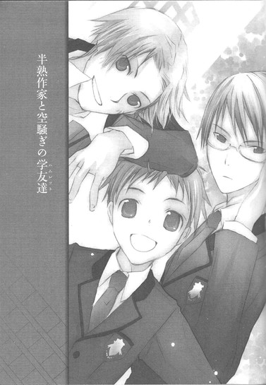
その日、彼女は髪を巻いていた。
普段のように、髪を二つに結ぶことをせず、ゆるゆるとカールした茶色の髪を、背中にたらしていた。
せっかく巻いたのに、ゴムで結ぶとヘンなクセがついちゃうからと、こぼれそうな笑顔で言った。
クリーム色のエプロンの下は、ふんわりしたワンピースで、素足に華奢なサンダルをはいていた。
普段よりも大人っぽくて、美人で──朗らかで、幸福そうだった。
「仲良しの友達が、結婚するの。手作りのパーティーをするんだよ」
今日がパーティーなのかと尋ねたら、はにかみながら、
「ううん」
と首を横に振った。
「わたしは幹事だから、もう一人の幹事さんと、ごはんを食べながら打ち合わせをするの」
そのもう一人の幹事とやらが、彼女にとって特別な相手であることを、小学六年生になっていた自分は察することができた。
きりきりと胸がしめつけられて、
「......その幹事って、男だろ」
と、つまらなそうな声で尋ねると、頬をぱぁぁぁっと染め、オレが見た中で一番幸せそうな甘い笑みを浮かべた。
「えへへっ、だぁぁぁいすきな人なの」
◇ ◇ ◇
遠子さんには、現在進行形でつきあっている彼氏がいる。
衝撃の事実を知ってから一ヶ月半が経過し、季節は春になっていた。
そのあいだ、決して茫然と過ごしていたわけではない。
なんと言ってもオレには、遠子さんの担当作家という強みがある。
仕事の名目で、メールも電話もし放題。打ち合わせと称して、マンションで二人きりになることも可能だ。
編集者の仕事はハードで、特に熱心な編集者である遠子さんは、たいてい終電ぎりぎりまで編集部にいる。校了前は泊まり込みで作業をしたあと始発で帰宅し、同じ日の昼から担当作家と打ち合わせという生活だと聞いている。
恋人とデートする時間も、そうそうとれないはずだ。
割り込む隙は、じゅうぶんにある！
てゆーか、遠子さんの彼氏なら二十代か三十代だろうし、普通のサラリーマンに年収一億円も稼げるはずがない。オレの去年の年収は一億九千九百八十三万円だった。あと十七万円で、二億だ。どう考えても、彼氏よりオレのほうが若くてイケメンで、経済力があるに決まってる。
オレが、遠子さんを好きだと態度で示していれば、遠子さんも心変わりしてオレを選ぶはずだ。
そう何度も自分に言い聞かせ、遠子さんにアプローチしようとしたが、いざ本人を目の前にすると、緊張で顔がこわばり、喉がふさがり、口説き文句のひとつも出てこないのだった。
「快斗くん、最近、いつも目が血走ってるわね？寝不足なんじゃないの？徹夜で原稿を書くと、次の日頭がぼーっとして、かえって能率が落ちちゃうわよ」
遠子さんに心配そうに言われた。
「今度、ブルーベリーのタルトを買ってくるわね。ブルーベリーは目にいいのよ」
ほんわりした笑顔で言われ、
「食い物で、手なずけられたりしないからなっ」
と、つい憎まれ口を叩いてしまうという情けなさだった。
このままでは遠子さんに、我が儘で扱いにくい作家だと、敬遠されてしまう。
なんとかして、遠子さんの好感度を上げなければ。
女性が男性に惚れるのはどんなときだろうと、仕事用のデスクで頭を抱え、真剣に考える。
やっぱり、自分のために、スペシャルなことをしてくれたときだろうか。
それとも、その男性のカッコいいシーンを見たときだろうか。
「うむむ......オレは元の造作がカッコいいから、これ以上カッコいいところを見せるのは難しそうだな」
そういえば、一時に遠子さんが打ち合わせにくる予定だが、もう二十分も過ぎている。
遠子さんが遅刻してくるなんて珍しい。なにかあったんじゃ......。携帯に電話してみたほうがいいだろうか。
もやもやと不安が込み上げたとき、玄関の鍵が回る音がし、続いてドアが開いて、遠子さんが駆け込んできた。
「ごめんなさいッ！ 遅れちゃって！」
「！」
オレは、ぎょっと目を見開いた。
息を切らして部屋に入ってきた遠子さんの髪が、とんでもないことになっていたからだ。
遠子さんといったら、ストレートの長い黒髪だ。それを日によってほどいたり、後ろで結んだり、バレッタでひとまとめにしたり、毛先だけ巻いたりする。
遠子さん的に、暑いときはまとめ髪、寒いときはほどきっぱなし、忙しいときはひとつ結び、気合いを入れたいときは巻き髪と、法則があるらしいのだが、そのへんはまだ解明できていない。
けれど、今日の遠子さんのヘアスタイルは、はじめて見る奇抜なものだった。
三つ編み！
しかも、右側だけ！
それも、えらくふぞろいで、不格好な形に！
「と......遠子さん、その髪、片方編むの忘れたとか？」
おそるおそる尋ねてみると、
「え？」
遠子さんは惚けた顔になり、そのあとすぐ、ハッとしたように髪に手をやった。
不格好な三つ編みを片手でにぎにぎし、しだいに青ざめ、ガラス戸のついた棚のほうへ飛んでゆく。
そこに映る自分の姿を目にするなり、
「いやああああああ、なにこれぇぇぇ！」
と叫んだ。
「ひどい......っ、ひどいわっ！ 一時から打ち合わせだって言ったのに、知らんぷりして起こしてくれなかったし。ぅぅ、寝てるあいだに、こんないたずらするなんて......っ。もぉもぉ、信じられない」
ぶつぶつつぶやきながら、涙目で三つ編みをほどいてゆく。片方だけクセがついてウエーブ状になってしまっているのを見て、また涙ぐみ、ほどいた三つ編みを再び綺麗に編み直し、もう片方も編んで、頭の後ろでひとまとめにする。
そのあいだずっと、ひどいひどいと、唸っていた。
そしてオレは、心臓をばくばくと鳴らし、額に嫌な汗をにじませていた。
遠子さんの髪を三つ編みにしたのは──彼氏、なのか？
ここへ来る前、彼氏と一緒だったのか？
昨日はお泊まりだったのか？ それとも彼氏が遠子さんの部屋に泊まって、あんなことやこんなことをして、遠子さんが疲れはててぐっすり眠っているあいだに、髪を編んだというのか？
じっとりした目で凝視していると、オレが考えていることがわかったのか、遠子さんが赤い顔で、
「ち、違うのっ！ ちょっとテーブルで、うたた寝しちゃっただけなの！き、昨日は遅くまでお仕事をしてたから、つい」
必死に言い訳する様子に、やっぱりお泊まりだったんじゃないかという疑惑が止まらず、胃が捻じ切れそうになる。
「......仕事なんだから、三十分も遅刻すんなよな」
嫌味っぽい声で言い、仕事用の椅子に座り、それをくるりと回し、横を向く。
ああっ、うぅぅぅぅ。どっちにしてもオレのとこ来る前に、彼氏のとこにいたんだよな。
仕事で眠る時間もないほどなのに、彼氏とは会ってたんだよな。
デートの時間もろくにとれず、すれ違う日々で、自然消滅寸前だと思っていたのに、ひょっとして現在進行形で熱々なのか!?
じっとしていると、奇声を発して立ち上がり、部屋の壁をどかどか叩いてまわりそうで、パソコンの画面を睨みつけ、必死に文字を入力する。
「うぉぉぉぉぉ！ 神が降りてきたぁ！」
そう叫び、高速タイピングを続ける。
あまりの速さに、指が消えて見えるほどだった。
「すごいわ、快斗くん」
遠子さんが驚きの声を上げる。
「うわあああああああああ、うおおおおおおおお」
ますます速度が上がる。
頭の中は、ふぞろいの三つ編みを涙目でほどく遠子さんで一杯だった。
彼氏は、どんなやつなんだ？ 同業者か？ それとも大学の同級生かなんかか？顔は？身長は？年収は？家族構成は？
絶対、オレより低レベルな男に決まってる！
なのに遠子さんは、なんでそんな男とつきあってるんだ～～～～～っ。
いっそ、今ここで、遠子さんに「彼氏と別れて、オレとつきあえ」と言ってやろうかと思いつめたとき。
電話のベルが鳴った。
「快斗くん、電話が鳴ってるわ」
「──っっ、今それどころじゃねー！ 墓も不動産も布団クリーニングも間に合ってるって、言ってやれ」
ディスプレイを文字で埋めながらわめくと、遠子さんが「もうっ、快斗くんたら」とあきれた声で言い、受話器を取った。
「はい、雀宮です。え──？」
悶々としているオレの後ろで、遠子さんが電話の相手と熱心に話している。
「はい、はい──ええええっ、そ、それは困ります！はい、わかりました。わたしが責任を持って」
なにやら真面目な口調で言い、受話器を置いた。
そうして、オレに向かって、声を張り上げたのだった。
「大変、快斗くん！ 学校へ行かないと留年しちゃうわ！」
そういえばオレは、四月から高校二年生だったのだ。
去年の秋くらいから、原稿を書くのに夢中で、ほとんど登校していなかったので、すっかり忘れていた。
電話は担任の教師からで、このまま欠席が続けば、出席日数不足で留年も有り得るということらしかった。
「明日から真面目に学校へ行くのよ、快斗くん」
遠子さんは、心配そうに念を押した。
いまさら学校なんて面倒くさい。朝七時に起きて家を出て、満員電車に乗るなんて、ぞっとする。そもそも年収二億のカリスマ作家のオレが、高校生レベルの数学とか、英語とかやってどうする。
ごねるオレに遠子さんは、
「高校生留年作家って呼ばれたくないでしょう」
ずばり言った。
そ、それは確かにみっともない。
顔を引きつらせるオレに、ほのぼのと笑ってみせた。
「それにね、学校で同じ年頃の子たちと、同じ体験をして、その中で感じたことは、きっときみの書く糧になるわ」
◇ ◇ ◇
遠子さんは、そんなことを言っていたが、オレはめちゃ混みの電車に乗った時点で、学校へ行こうなんて思ったことを、後悔していた。
くっそー、なんで人気作家のオレが、朝からおしくらまんじゅうなんかしてんだ。
毎朝、この苦行が続くのか？
駅のホームに降り立ったときは、セットした髪もブレザーの制服も、よれよれになっていた。
ぜいぜい......。こっから十五分も歩くのか。
前に登校したのが二月だから、二ヶ月も前だ。あのときは期末試験で、仕方なく足を運んでやったのだ。
同じ制服を着た連中がひしめきあう道を、うんざりした気持ちで進んでゆく。
野郎しかいないのは、オレが籍を置く開明学園は、男子校だからだ。自由な校風の文武両道の進学校というふれこみだが、自由を売りにするなら、生徒の自宅学習を認めてほしい。
そんな不満を抱えつつ、教室へ辿り着く。
えっと、オレは、二‐Ｂだったかな？
がらりとドアを開ける。
とたんに、教室の中に妙な感じの空気が走った。
あれ？ 二‐Ｂじゃなくて、Ｃだったかな？
一瞬、うろたえかけたが、Ｂで間違いないはずだ。学校から送られてきたお知らせに、ちゃんとそう書いてあった。
なら、なんだ。
この、珍獣でも見るような驚きの眼差しは。
あ、そうか。モデルで作家で有名人のオレのカリスマ性に、びびっているんだな。
オレの放つオーラにあてられて、間抜けなツラをしているのだろう。
まいったな。サインは一日二人までならオッケーだ。
が、そんなＶＩＰなオレの席に、どう見ても一般人な生徒が堂々と座っているではないか。
オレの椅子に、ケツを乗せやがって。とんでもない無礼者だ。
「そこ、オレの席」
上から睨んでやると、相手はびびってのけぞり、
「あ、えっとその......」
と、おどおどする。
そのとき、後ろで冷ややかな声がした。
「きみの席は向こうだ、雀宮。一年の時の席と間違えてるんじゃないか？」
振り返ると、眼鏡をかけた真面目そうなやつが立っていた。
誰だ、こいつ。
眉根を寄せて考えていたら、
「クラス委員長の寒河江だ。二年になってから一度も登校してない雀宮は、知らんかもしれんがな」
と、嫌味っぽく言われた。
さらに、眼鏡の奥の目をうんと陰険に光らせ、
「校則ではピアスも、ネックレスも指輪も禁止だ。すぐはずすように。髪の色も明るすぎるな。シャツのボタンは第一ボタンまでしめて、ズボンもウエストまでしっかり引き上げるのが、制服の正しい着用だ。生徒手帳に、そう記載されている。二年生にもなって指摘されるなんて、恥ずかしいことだと思え。あとで、しっかり生徒手帳を読んでおけよ」
な、なんだ、こいつは偉そうに！
誰に向かって口をきいているつもりだ、と言ってやろうとしたが、
「おおい、あんたの席はココだよ！ 雀宮センセ！」
軽薄そうな声で呼ばれた。
そっちを見ると、教室の真ん中の最後尾の席で、あきらかに染めているとわかる明るい髪をした男子生徒が、ぴらぴらと手を振っていた。
「ココ、オレの隣」
椅子を後ろに引いて机に寝そべるように寄りかかり、足を組んでいる。ノーネクタイで、シャツのボタンは二つ目まではずれ、ズボンがずり落ちている。
背はオレと同じくらいあるだろうか？
非常──に、ちゃらい男だ。
「あれは、校則違反じゃないのか」
と言うと、寒河江は苦々しそうに顔をしかめて、
「きみは、やつを反面教師にするといい」
と、つぶやいた。
「センセぇっ！」
と、ちゃらい男子が、また声を張り上げる。クラス中が注目していても、まったく気にしてない様子だ。
そちらに行き、席に座ると、にやにやしながらオレを見て、
「委員長は、チェックがはじまると長いからなぁ。助けてやったの感謝してほしいね。
あ、オレは仁木っての。せっかく隣の席になったんだから、わかんないことあったら何でも訊いてよ。優しく教えるからさ。しっかし、こんなに早く隣の席が埋まると思わなかったなー。一学期終わるまでに、雀宮センセが何回学校に来るか、賭けてたんだぜ。あ～、オレ、大負けだ」
と、軽薄な口調で言った。
こ、このオレを賭につかうなんて。不愉快極まりない。
「ところでセンセ、なんでずっと学校こなかったの？不治の病説と、実はセンセも業平涼人みたく秘密諜報部員で、各校に潜伏してる説と、引きこもりのオタク説と、他にもいろいろあって、賭けてたんだよね。ちなみにオレは引きこもり説に千円ね」
だ、か、ら、人を賭の対象にするなー！
引きこもりのオタク説ってなんなんだー！
口にペンケース突っ込んでやろうか、この男。
そのとき、明るい声がした。
「おはよう！」
「あ、宝」
「どうしたの？ みんな？ なんか空気ヘンだよ。え？なに？目配せなんかして。ああっ！雀宮くん！」
いきなり、だだだっという足音がして、細くてちんまいやつが、オレに飛びついてきた。
「わ！」
「よかった！ 雀宮くん！ 心臓の手術をするためにスイスへ行ったんじゃなかったんだね！」
こいつは重病説か。
「てか、離れろ！ おまえは誰なんだ！」
子犬のように、くんくんじゃれついてくるのを無理矢理引き離すと、ちんまいのは、にっこり笑った。
「鳴見宝だよ。雀宮くんのパートナーの」
「はぁ？」
パートナーだって、なに言ってんだ、こいつ。
胡乱そうに見上げるオレに、にこにこしながら、
「来週の、武山高校との合同球技大会！雀宮くんはぼくと卓球のダブルスにエントリーしてるんだ」
なにぃ！
卓球？ って、あの温泉でやるピンポン？
オレと身長差三十センチはありそうな、このちんまいのと球技大会で、だ、ダブルスだってぇ？
慌てるオレの手を、鳴見が両手でぎゅっと握り、心の底から嬉しそうに言う。
「雀宮くんが学校に来てくれて、本当によかったぁ！合同球技大会まであと二週間しかないけど、頑張ろう！ダブルスは、お互いの呼吸があわなきゃダメだから、今日から放課後、毎日練習しようね」
そうして教室中に向かって、両手を大きく広げて全身で喜びを表現しながら、叫んだのだった。
「みんなぁ！ 雀宮くんが来てくれたよー！ 雀宮くんと二人で、武山のペアに勝つよ～！」
「おお、よかったな、宝」
仁木が拍手し、周りもつられたようにぱちぱちと拍手し、「頑張れよ」とか「優勝だ」とか声を上げる。
委員長の寒河江は、苦い顔で肩をすくめていた。
◇ ◇ ◇
何故、カリスマ作家のオレが、球技大会なんてもんに出なきゃならんのだ。
しかも、卓球なんてオタくさい種目で。
放課後。
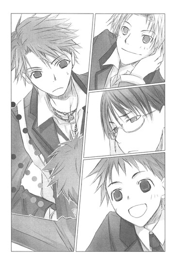
オレは学校指定のジャージを着て、体育館の床に膝をつき、ぜいぜいと息を吐いていた。
『まずは軽く走ろう』
と鳴見が明るく言い、体育館の中を五周もしたのだ。
「ええっ！ もう、へばっちゃったの？ 五周しか走ってないのに？雀宮くん、やっぱり体弱いの？」
鳴見が心配そうな眼差しで尋ねるので、
「き、昨日、遅くまで原稿を書いていて、寝てないだけだ......ッ。暇な学生と違って、オレは忙しいんだ」
と言ってやった。
肩で、ぜはぜは喘ぎながらだったので、少々威厳が足りなかったかもしれないが。
「そっかー、大変なんだね。なのに練習につきあってくれてありがとう。じゃあ、次は柔軟ね」
一見気遣うようなフリをしながら、オレの背中をぐいぐい押してくる。
「うげげげげ、お、押すなぁっ。折れる、骨が折れるぅぅぅ」
「大丈夫、これくらいで折れたりしないよ。雀宮くん、体硬いねー。林檎酢とか飲んでみたらいいよ」
「余計なお世話だ！ うぎゃ、お、押すな！ 引っ張るなー」
柔軟が終わる頃には、また息が乱れ、体の節々がひりひりした。
もう一年分くらいの運動をした気分だったのに、
「じゃあ、ラケット握ってみようか。雀宮くんは、卓球はどれくらい経験ある」
「温泉で、ピンポンを一、二回」
「そっか。ラケットの握り方は、シェークハンドとペンホルダーとあるけど、とりあえずシェークハンドでいってみよう。こう握るんだよ」
鳴見がオレの右手をつかんで、ひとさし指をラケットのラバーに置き、残り四本でグリップを握らせる。
「ラケットがふらつかないように、上のほうを軽く握って。そう、そんな感じ。強く握りすぎると、手首の自由がきかなくなるから気をつけて」
「要するに球を打って、台に返せばいいんだろ」
「うん、そうだけど、基本はやっぱり大事だよ。正しいフォームでプレイすれば体に負担もかかりにくいし、怪我も防げるしね」
鳴見が爽やかに言う。
「じゃあ、ぼくはこっちから打つから、雀宮くんは球を返してね。それと、雀宮くんって呼びにくいから、快斗って呼ぶよ。ぼくのことも宝って呼んで。行くよ！快斗！」
こら、勝手に人の名前を呼び捨てにすんな。許可してないぞ！と言ってやろうとしたところへ、オレンジ色の球が飛んでくる。
ラケットを振って返す。
が──。
すかっ。
空を切る音がして、後ろで、ぽ──んと球がはずむ音がした。
「い、今のは、いきなりだったから心構えがっ」
焦るオレに、鳴見が微笑んで。
「うん、どんまい。もう一回行くよ」
ラケットが澄んだ音を立て、オレンジの球が放たれる。
打ちやすそうなゆるい球だ。台に当たって綺麗に跳ね返る。
よし！ もらった！
ぶんっ！ とラケットを振る。
すかっ。
なんと！ またしてもラケットが空を切る。
「い、今のも、素振りの練習でっ」
「大丈夫、どんどん行くよー」
鳴見が朗らかに言う。
くぅぅぅぅ、次こそは、高校生カリスマ作家の名誉にかけて、鳴見のコートに球を返さなければ。
なぁに、オレが本気になれば、たかが卓球くらい──。
すかっ。
またしても空振り！
しかも、そのあとも、またそのあとも、延々延々延々悪夢は続いた。
球はいかにも打ちやすそうなところに落ちてくるのに、何故かラケットの横をすり抜けてゆく。
やっと当たったと思ったら、鳴見の上を高々と跳び越えていった。
何故だ、何故、まともに当たらない！
鳴見のやつ、球に細工でもしてるんじゃなかろうか。でなきゃ、あんなゆるゆるの球、返せないわけがないっ。
と、そのとき視線を感じた。
体育館の壁際に、陰湿なツラをした眼鏡が立っている。
委員長の寒河江だ！
なにしに来やがった。また、オレにいちゃもんつける気か。ピアスも、ネックレスも、指輪もはずしたのに、今度は坊主にしろとでもいうのか？
寒河江の見ている前で、空振りをするのは、頭が沸騰するほどの屈辱だった。
それでも、球は後ろへこぼれてゆき、オレは真っ赤な顔で歯ぎしりする。
その様子を、寒河江はみけんに皺を寄せ、じっと見ている。
くそぉ、わざとか？
オレに恥辱を与えるため、わざとそこに立っているのか？この陰険サド眼鏡！
「快斗、球をよく見て」
鳴見が声を飛ばす。
くそぉ、くそぉぉぉぉぉ。
せめて一球だけでも、渾身のスペシャルスマッシュを！
が、三十分も汗だくで球を追い続け、ついに一球も鳴見のコートに返すことができなかった。
息が上がり、心臓が破れそうに脈打ち、しゃべることもできない。
瀕死の病人のように喘ぎながら後ろを見ると、寒河江はいなかった。
くぅぅぅぅ、なにしに来たんだ、あいつ。やっぱり苦しんでるオレを見物に来ただけだったのか。
うぅぅ、くそっ。
「今日はすごく頑張ったね、快斗」
鳴見がやってくる。
オレがへたっているあいだに、卓球台や球を一人で全部片付けてしまったらしい。オレとは反対に、こいつは練習中も今も、息一つ乱していない。
まぁ、サーブばっかしてたので、こいつの場合、台の前からほとんど動いてないわけだが......。
「ずっと家で療養してたんだし、急に体を動かしたんだから、調子が出なくても仕方がないよ。でもその......」
気遣うような言葉のあと、鳴見が少しだけ弱ったような表情で言う。
「快斗、きみ、ひょっとして......その......もともと運動全般が、あまり得意じゃなかったりする？」
◇ ◇ ◇
小学生のとき、運動会のかけっこは、大抵ビリだった。
ドッヂボールではいつも真っ先に、ボールを顔面にくらっていた。
逆上がりができず、日が落ちるまで居残りをさせられた。
中学生のとき、授業のサッカーで、ボールを蹴ろうとして、足をすべらせ頭を打って、救急車で病院に運ばれた。
──やぁい、ウンチ！
──ウンチのチュン太！
──ええええっ、チュン吉と同じチームやだ。こいつ、バットもまともに振れないし、エラーばっかだから。
──いいか、チュン太、ボールが来たら前にかがんで、体に当てるんだぞ。おまえなんか、デッドボールくらいでしか塁に出られないんだからな。
──ばかっ！ ボール投げる前から、あんなに体倒して、がたがた震えてたら、デッドボール狙いってバレるに決まってんだろ！チュン平って、ほんと役立たずのウンコだな。
──あぁあ、ウンコのせいで、うちのクラス、負けちゃったよ。
へろへろに疲れて高校から帰宅したその夜。ベッドの中で憤死ものの記憶が、頭に次々押し寄せた。
そうだ、すっかり忘れていた。
オレは球技大会なんぞに出てはいけない、呪われた体だったんだ。
オレは──オレは──。
「先天性運痴だったんだ──っっ！」
◇ ◇ ◇
翌朝、あちこち筋肉痛の体で、のろのろ登校する。
もう、学校なんて行きたかないし、合同球技大会も知ったことかという心境だったが、目が覚めたら、パソコンに遠子さんからメールが届いていた。
『学校はどうだった？
ちゃんと休まずに通わなきゃダメよ。
金曜日に、なにか美味しいものをもってゆきます。
そのとき、学校であったことを聞かせてね』
まるで姉のような文面に、気恥ずかしさを覚えると同時に、たった一日で学校へ行くのをやめたら、遠子さんにあきれられるだろうと思うと、顔を洗い制服に着替えていた。
「くそっ、たかが球技大会じゃねーか。そんなの、くだらなくて、マジになってらんねーよ」
昇降口の下駄箱の前で、小さな声で悪態をつく。
「よっ、センセ！」
後ろから肩を叩かれた。
筋肉痛の体に響き、「うげっ」と叫んで、飛び上がる。
「リアクション、おおきいなぁ、楽しいなー」
仁木が、からかうように笑う。
「昨日、宝と放課後、球技大会の特訓したんだって？どうよ、卓球？ヒーローになれそう？」
「......ふ、フンッ、高校生にもなって、球遊び大会なんてやってられるか。一回戦でとっとと負けて、あとは昼寝でもしてるさ」
そっぽを向いて言ってやる。
「どーせ、おまえらだって、学校行事だから仕方なくやってるんだろ」
「いや。そうでもない」
仁木が、けろっとした顔で言う。
「開明と武山の合同球技大会って、土日に両方の学校で一般公開してやるんだぜ。それぞれの学校のメンツがかかってるし、応援によその学校の女の子とか来るから、みんな必死なんだな」
「それがどうした」
「いや、こっちも向こうも、男ばっかでうるおいのない生活してるから、『きゃー、頑張ってぇ』とか黄色い声飛ばされると、ときめくじゃん。中にはチアガールとかしてくれちゃう子もいたりしてさ。スカートひらひらさせて、ぴょんぴょん跳ねてくれるのな。あれ見ると絶対負けるかちくしょーって思うぞ、てめーらも勝て！負けたら殺す！いいな負けんな！絶対だ！って怒声が飛び交ったりして」
「アホか」
靴を履き替え、歩き出す。
仁木が追ってきて横に並ぶ。
「って、センセ、去年も球技大会あったっしょ？あの盛り上がりをスルーしてたわけ？」
「引っ越しと原稿で忙しくて、ずっと休んでたんだ。球技大会なんてモンがあったことも、知らなかった」
ぶすっとして答える。そうだ、四月、五月、六月と、連続刊行をしたんだ。雑誌の連載も平行していて、あのときは死ぬかと思った。
「つか、なんでオレが、卓球なんぞにエントリーされてるんだ。バスケとかサッカーとかバスケとかサッカーとかバスケとかサッカーとかあるだろ」
「......バスケかサッカーに出たかったんだ」
「......」
バスケとサッカーなら、極力ボールの来ない位置をキープしつつ、「おお！」とか「よしっ！」とか適当に声を上げながら走っていれば、運痴をごまかせる。
野球は必ず打席が回ってくるし、バレーは自分のほうへ飛んできたボールは受けなければならんからな。
個人競技のテニスや卓球が、一番やばい。
「センセは身長あるし、確かにバスケのほうが得意そうだな。けど、種目決めるとき、センセいなかったろ。バスケとかサッカーとか、女子にアピールできるのは、出たがるやつ多いからね。応援に来る他校の女の子と、あわよくば、おつきあいしたーいってね。卓球は女子受けしないからなー、最後まで残ってたんだ。そんで、雀宮センセでいいんじゃん？って感じで自然に」
うがあああああ、その日だけでも出席してりゃよかった。
そしたら、サッカーの控えを希望したのに！
「センセ、なにさっきから百面相してんの？」
「か、顔の体操だ」
「ふぅん。作家ってやっぱ変わってんのな。けど、みんなの前で、球技大会はサボるとか適当にやるとか、言わないほうがいいぞ。さっきも言ったけど、打倒武山って学校中燃えてるから。試合で手を抜いてるのがバレたりしたら」
「どうなるんだ？」
ちょっと息をのむ。
仁木が真顔で、ぼそっとつぶやく。
「そうだなぁ......試合が終わったあと、全裸で逆さづりかな」
「！」
小学生の頃、クラスメイトにパンツごとズボンをおろされて、べそをかいた記憶がフラッシュバックし、ぐらっとする。
教室に入るなり、鳴見が嬉しそうに駆け寄ってきた。
「おはよう！ 快斗！ あっ、ニッキーもおはよう。快斗、これ！卓球の本だよ！わかりやすいから読んでみて」
と、子供向けの薄い本を差し出し、
「今日も、放課後練習しようね！」
と、朗らかに言う。
「おおっ、宝、気合い入ってんな」
顔をこわばらせるオレの横で、仁木のやつがにやにやしている。
そうして、教室の端のほうから、委員長の寒河江が、やっぱり冷たい鋭い目で、オレを見ていた。
「......」
この日の放課後も、鳴見がオレにつきっきりで、ラケットの振りかただの、フォームだのを教えた。
内心うんざりしながら、
「......おまえ、やけに卓球に詳しいけど、卓球部？」
と尋ねると、
「うんっ、一年の三学期に転校してくる前はね。今は卓球部じゃないけど、でも卓球は大好きさ」
と笑って答えた。
なんで、こっちでは卓球部に入らなかったんだ？
ま、どうでもいいんだが。それより、自分が卓球大好きだからって、オレを放課後の練習につきあわせるのはやめてほしい。
「行くよー、快斗！」
鳴見が明るい声で呼びかけ、オレンジの球がゆるやかに弧を描く。
「つか！ オレにかまってたら、おまえ自分の練習できなくないか？」
「ちゃんと練習になってるから大丈夫。はい、次行くよ」
くぅぅぅ、練習やめたいって暗に言ってるの気付けよ。
そのあとも、ぽんぽん球が飛んできて、オレがすかすか空振って、球がなくなると二人で拾い集め、また同じことを繰り返した。
鳴見は今日も、サーブを打ったあと台の前からほとんど動かなかった。
最後のほうで、どうにかラケットに球があたるようになり、
「すごい進化だよ！快斗！」
と、大はしゃぎしたが、オレはラケットを振り回しすぎて腕がつりそうだった。
「この調子で、明日も頑張ろうね！」
ああ......明日もこれを続けるのか。
鳴見に一緒に帰ろうと誘われたが、図書館に寄りたいので先に帰ってくれと誤魔化した。もちろん、図書館へなんか行かない。体育館の更衣室で着替えをすませたあと、パイプ椅子に座って、しばらくぐったりうなだれていた。
登校するの、球技大会が終わってからにすりゃよかった......。
後悔しつつ、よろよろ立ち上がる。
こんなの、本当に書く糧になるんだろうか......。
暗い気持ちで、下駄箱の前まで来て靴を履き替えようとしたとき──。
「ん？」
おかしい。靴が動かない。
底になにか貼りついているみたいで、引っ張ってもぴくりともしない。
靴の横に、二つ折りにした紙があった。
「なんだこりゃ」
引っ張り出して開いてみる。
『下手くその運痴は、試合に出るな』
黒々とした油性ペンで、そう書いてあった。
頭の中が、真っ白になる。
手が、ぷるぷると震える。
やべぇ。
これは、ひょっとして──い、イジメか！
◇ ◇ ◇
翌朝、オレの下駄箱には、マヨネーズがウンコの形に盛ってあった。その前に、小さな紙切れがあり、
『←卓球してるおまえ』
と書いてあった。
さらに、教室へゆき、鞄から教科書を出して中へ入れようとすると、
「ん？」
べちゃっとしたものが、指にふれる。
「んん？ んむ──くぅぅぅ」
「どうした？ センセ？」
「な、なんでもないっ」
指が、机に貼りついている！
昨日の下駄箱と同じだ。中に接着剤がべったり塗ってある。
「うむぅ......むむむ」
じりじりと指を机からはがそうとするが、うまくいかない。
ようやく、机から手を抜き取ることができたとき、右手の人差し指と、左手の中指の腹の皮がむけていた。おまけに一番下に置いてあった英語の教科書が、ぺったり貼りついて、とれなくなってしまった。
それだけではない！
体育の時間にジャージに着替えようとロッカーを開けたら、水でしっとり濡れていた。
一緒に置いてあった紙には、
『下手くそクンへ
球技大会に出たら、おまえを水びたしの刑にするぞ』
と、書いてある。
胃のあたりが、万力でしめつけられているように痛くなり、呼吸も苦しくなる。
やっぱりイジメなのか？
ロッカーを閉めて教室に戻ると、すでにジャージに着替えた鳴見と寒河江が隅のほうで話していた。
鳴見はにこにこしていて、寒河江はしかめっ面だ。
「で、快斗が」
オレの名前が耳をかすり、胸がひやっとする。
そのまま息をひそめて近づいてゆくと、鳴見の笑い声が聞こえた。
「あはは、快斗は、運動は本当にダメみたいだよ。温泉でピンポンやってる小学生より下手かも」
言葉が、胸にぐさりと突き刺さる。
二人でオレのこと、バカにしてたのか？
寒河江がオレのほうを冷たい目でちらっと見て、口をつぐむ。
鳴見もオレに気づき、ヤバいという顔をし、
「あれ、快斗。まだ着替えてないの？ 次体育だよ」
と、取り繕うような笑みで話しかけてきた。
そんな風に笑いながら、おなかの中ではオレのこと小学生以下の運動神経だと笑いものにしてたのか？
胸に刺さった鏃が、臓腑を掻き回しているようで──足元が震えて、頭が灼けるように熱くなって、体が熱くなったり寒くなったりして──。
「......仕事あるから、早退する」
「えっ、ちょっと快斗」
自分の席へ行き、教科書をばさばさ鞄に入れる。
一番下の英語の教科書は机の中に貼りついたままだ。それは残して、唇を噛んで、転びそうな早足で教室を出た。
「待て、雀宮。早退は丸山先生の了承を得てるのか」
走ってきた寒河江が、廊下でオレの肩をつかみ、厳しく問いつめる。
「おまえが言っとけ」
手を振り払い、ダッシュした。
途中で仁木と擦れ違い、
「おい、センセ、どうした？ どこ行くんだ」
と、びっくりされたが、かまわず走り抜ける。
下駄箱で靴を履き替えようとしたら、また靴ががっちり貼りついていた。
昨日の靴と、今日履いてきた靴で、下駄箱がいっぱいになっている。
その隙間に細く丸めた紙が刺さっていて、開いてみると、
『空振りクンへ
小学生のほうが、マシ』
と油性ペンで書いてあった。
頭だの首だの耳だのがますます熱くなって、体の芯が折れそうで、オレはそれをぐしゃりと握りつぶし、上履きのまま外へ飛び出したのだった。
くそぉ！
くそぉぉぉっ！
空振りクンで悪かったな！ 小学生より下手くそで悪かったな！オレは年収二億円のカリスマ作家だ～～～～～～～！
真昼の通学路を、制服に上履きで走り続ける。
小学生のときも、よくこんな風に洟をすすりながら、人気のない通学路を、がむしゃらに走った。
ああ、ひょっとしたらオレは、あの頃とちっとも変わってないんじゃないか？
チビでひ弱で、しょっちゅう着替えを隠されたり、教科書に落書きされたり、小突かれたりして、反撃する力もなければ味方になってくれる友達もいない。遠足の弁当も一人で食べた。
町の小さな図書館だけが、唯一の避難場所だった。
中学の半ばくらいから、背がいきなり伸びはじめて、三年生で新人賞を受賞して、作家になって本が売れて、モデルもこなして、惨めな過去を封印した。
世間では、オレは高校生カリスマ作家の雀宮快斗で、怖いものなしだった。
「けど、学校じゃ、相変わらず運痴のハブられものじゃねぇかぁぁぁぁっ！」
走りながら絶叫する。
過去が、後ろから追いかけてくる。いじめっ子たちが、笑っている。
「どーせ、どーせ、どーせオレなんかぁぁぁぁ！」
頬に落ちる涙に、真昼の日射しがきらりと光った。
◇ ◇ ◇
「......生きるか、死ぬるか、そこが問題なのだ」
部屋の隅で、黒猫を抱えてうずくまるオレを見て、中華料理のオードブル豪華三段重ねをさげてマンションへやってきた遠子さんは「きゃっ」と悲鳴を上げた。
「か、快斗くん......！ よかった、空気がよどんでるから幽霊かと思ったわ。どうしてハムレットになってるの？」
オレは淡々と答えた。
「ああ、このあまりにも汚れた肉体が溶けて崩れて、一しずくの露となったらいいのに。それとも、自殺を罪とするおきてなどを、神がきめなければよかったのに」
「快斗くん、しっかりして！」
遠子さんが駆け寄って、肩をつかんで揺さぶった。猫が迷惑そうに体をよじる。
「もろき者よ、なんじの名は女なり」
「快斗くん！」
「おとうさんのなきがらを送って行かれた時の靴がまだ古くもならない内に。あのお母さんが、叔父さんと結婚してしまった」
虚ろに微笑み、うなだれる。猫が、はなせと鳴いている。
そうさ、遠子さんには彼氏がいるんだ。
初恋の司書のお姉さんが『大好きな人に会うの』と言って、髪を巻いて幸せそうに、にこにこしていたように、遠子さんも彼氏の前で、あんな風に笑っているのだろう。
卓球の球もまともにバウンドさせられない運痴で不登校なオレのことなんて、仕事じゃなきゃどうでもいいと思ってるんだ！
そうだ、そうに違いない。ハムレットの母親だって、旦那を殺した卑劣な男によろめいて、さっさと再婚したんだからな。
ハムレットが人生に絶望して、グレても仕方がない。
猫よ、おまえならハムレットの痛みを、わかってくれるだろう。
わかるかというように、猫がオレの手の甲を引っ掻く。
と、いきなり頬が、やわらかなもので包まれた。
遠子さんがオレの頬を両手ではさんで、顔をそっと上に持ち上げたのだ。
「学校でなにかあったのね？ 快斗くん」
優しい目でオレの顔をのぞきこみながら、問いかける。
胸がドキンと高鳴る。
「よかったら、わたしに話してちょうだい」
──快斗くん、目が赤いけどどうしたの？ よかったら、わたしに話してみて。そうしたら、気持ちが軽くなるかもよ。
「う」
遠子さんの向こうに、ガキの頃の自分と、初恋のお姉さんのふんわりした笑顔を思い起こして泣きそうになりながら、オレはぐずぐずと口を開いた。
「まぁ、そうだったの？ それで、学校を飛び出してきちゃったのね」
話を聞き終えた遠子さんが、同情にあふれた声で言う。
想いを寄せる相手に、学校でいじめられていると告白するなんて、恥ずかしくてたまらなかったが、遠子さんが親身に耳を傾けてくれるので、だんだん胸がぬくもってきた。
「高校なんかやめる。オレは学歴じゃなくて才能で勝負するんだ」
と、強がりを言えるくらいに気持ちも回復した。
「待って、快斗くん」
ふいに、遠子さんが真面目な顔で遮った。
唇に人差し指をあて、考え込むような眼差しになる。
「これは、イジメじゃないわ。事件よ」
「はぁ？ 事件だぁ？」
遠子さんの頬が生き生きと輝きはじめるのを見て、ぎょっとする。
な、なんだ？ この表情は。まるで極上のおやつを前にした子供みたいな......。
遠子さんが視線をぱっとオレのほうへ向ける。
そうして、あざやかに目をきらめかせ、宣言した。
「そうよ！ これは事件よ！ わたしと一緒に解決しましょう、快斗くん」
◇ ◇ ◇
翌日。
開明学園の正門前で、遠子さんと待ち合わせをした。
土曜なので学校は休みだと言ったのだが、
『午前中なら、部活をしている人たちがいるでしょう？』
と明るい返事だった。
その中から、オレのクラスメイトを探して、聞き込み調査をするのだとノリノリだ。
けど、男子校に、遠子さんみたいな大人の美人がいたら怪しいし、目立ちまくりだと思うんだが。
「お待たせ、快斗くん」
「！」
遠子さんの姿を確認するなり、息が止まる。
遠子さんは、とんでもない格好をしていた。
この前と同じ、三つ編み！
ただし、今度は二本とも綺麗に編まれている。
二十五を確実に過ぎているであろう女性が、三つ編み!?
いや、それはまだいい。
問題は──。
「なんで制服なんだ！」
三つ編みの遠子さんが、可憐に笑う。
「某ルートで手に入れたの。ここの制服、マニアに人気なんですって。あの......快斗くん、おかしいかしら？」
オレが目をむいたまま硬直しているので、遠子さんが頬をちょっとだけ染めて、心配そうに尋ねる。
おかしいよっ！
と、突っ込もうとしたが、恐ろしいことに、チェックのプリーツのスカートも、胸にリボンのついた上着も、ソックスやローファーも、しっかり似合っていて、まるきり女子高生だった。
大人のむっちりした体型の女性が制服なんて着たら、イメクラにしか見えないだろう。
けど、遠子さんのほっそりした体型と、限りなくぺったんこの胸に、制服はこの上なくマッチしている。
いや、それどころか、遠子さんの清楚な魅力を倍増させていて、ものっっっすごく可愛い！
やべ、顔が熱くなってきた。
む、胸もドキドキして......。
「い、いんじゃないっすか」
横を向いて、ぼそっとつぶやいたりする。
「でしょう！ わたしも鏡を見て、まだまだいけるなーって！えへん、わたしはご覧の通りの〝文学少女〟よ」
遠子さんが、スカートの裾をつまんでくるりと回り、胸を反らす。
〝文学少女〟という言葉に、初恋の人を思い出し、ますます動悸が増す。
お、オレ、こんなに脈拍とか血圧とか高くて、死ぬんじゃないか。
「さぁ、調査開始よ！ 行きましょう、快斗くん」
遠子さんが晴れやかに歩き出す。長い三つ編みが、黒猫の尻尾のようにひょこひょこ揺れる。
慌てて──隣に並びながら、オレはやっぱり心臓が破裂しそうだった。
今のオレたちは、きっと高校生の爽やかカップルに見えるだろう。
もし、遠子さんがオレと同じ歳だったら、こんな風に制服を着て、学校の帰りにデートしていたかもしれない。
それで、同じ高校に通って一緒に登下校したり、昼休みに屋上で遠子さんの手作りの弁当食ったりしていただろう。
部活は文芸部かな？ 遠子さんの朗らかな蘊蓄を聞きながら、きっと幸せな気持ちでクソ恥ずかしいポエムなんか創作していたに違いない。
──快斗くん、なに書いてるの？ 見せて。
──あ、天野っ！ ダメだ。
──いいじゃない、快斗くんの意地悪っ。見せてくれたら、キスしてあげる。
三つ編みの遠子さんが、目を閉じて顔を近づけてくる映像がリアルに浮かび、オレは鼻血を吹きそうになった。
いかん、妄想が暴走している。
遠子さんは、オレの気持ちなど知るよしもなく、校庭で練習中のサッカー部のほうへ歩いて行った。
すみれのように可憐な微笑みを浮かべた三つ編みの美少女が、サッカー部の連中も気になったらしい。
ちらちらと遠子さんのほうへ視線を飛ばす。みんな「オレのこと見てんのかな？」って顔してる。
遠子さんは、マネージャーっぽい部員のほうへ行くと、またにっこり笑った。
相手が赤くなる。
「こんにちは。わたし、新聞部に所属している天野といいます。来週の合同球技大会の前に、開明学園さんの生の声を取材させてください」
「え、あ、はいっ」
「喜んで！」
「なんでも訊いてください！」
サッカー部の連中が、わらわら集まってきて口々に言う。
「よかったぁ、親切な人ばかりで。あ、このひとは、わたしの従兄弟の快斗くんです。一人で男子校に来るのは怖かったから、ついてきてもらったの」
よくこれだけ、すらすら嘘が出てくるものだ。女って怖い。
「おおおオレっ、雀宮くんのクラスメイトっす！二年Ｂ組、松岡拓也っす！」
「お、オレも！ 雀宮くんの隣の隣の席の斜め前に座ってる、クラスメイトの川内俊平っす！」
遠子さんが、あふれんばかりの笑顔を、そいつらに向ける。
「まぁぁ！ そうなの？ 快斗くんをよろしくねぇ。無愛想で偉そうで我が儘に見えるけど、本当は恥ずかしがり屋のいい子なのよ。お友達になってあげてね」
「はい！ もちろん！」
「オレ、業平シリーズのファンだったんっす！」
やめてくれ。顔から火が出そうだ。
けど遠子さんは、ますますにっこりして、
「そぉぉ。本を持ってきてくれたら、快斗くんがサインしてくれるわよ。ところで快斗くんは卓球のダブルスに出場するそうだけど、パートナーの鳴見くんって、どんな子？」
と、話を鳴見のほうへ持ってゆく。
「鳴見宝、いいやつっすよ」
「うん、ちっこいけどパワーあるっつーか、いつも元気で明るくて、クラスのムードメーカーな感じっすね」
──快斗は、運動は本当にダメみたいだよ。温泉でピンポンやってる小学生より下手かも。
笑いながら寒河江に話していた鳴見を思い出し、胸を突かれた。
くそっ、なにが〝いいやつ〟だ。
悶々とするオレの横で、遠子さんがさらに尋ねる。
「鳴見くんは一年生の三学期に転校してきたそうだけど、前はどこにいたの？」
「えっと......どこだっけな？ 卓球が強いとこ。鳴見は、卓球で特待生だったんっすよ。中学の時全国大会で準優勝したんす」
なに!? あのチビ助に、そんな過去が!?
やけに卓球に詳しいとは思っていたが......。
「けど、鳴見くんは今、卓球部じゃないわよね？」
「高一の秋に膝を悪くして、激しいプレイができなくなったらしいっすよ。そんで、特待生じゃなくなって、転校したんです」
「......そうだったの」
遠子さんが眉を下げる。
オレもちょっとしんみりした。
スポーツ選手にとって、怪我でプレイができなくなるのは辛いよな。
オレだって、手や肩がぶっ壊れて、パソコンのキィが打てなくなったらと思うと、ぞっとする。
「でも、それなら、球技大会なんかに出て、大丈夫なの？」
「長時間、膝に負担がかかるような動きをしなければ平気だって、本人は言ってました。種目決めるときも、自分から卓球を選んだくらいだから、無理しなきゃ大丈夫なんじゃないっすか」
遠子さんが唇にひとさし指をあて、思案するように目を伏せる。
それから、すぐに視線を戻し、言った。
「快斗くんが卓球にエントリーされたのは、他の球技は全部埋まってて、卓球しか残ってなかったからよね？」
何故か、クラスメイトたちは微妙な表情を浮かべた。
「え、まぁ......卓球って、女の子の応援少なそうだし」
「だよな......」
今まで食い入るように遠子さんを見て、でれでれと頬をゆるめていたのが、弱ったように目をそらす。
「もし、大会の当日、快斗くんがお休みしたら、鳴見くんは出場できないの？」
「そんなことはないと思うすけど......。そのときは特例ってことで、誰かが掛け持ちで出場するんじゃないすか」
まぁ、そうだよな......。学校の行事だし、相方が休んだから即失格ってことはないよなぁ......。
「そうね、きっと鳴見くんの親しいお友達が、助けてくれるわね。鳴見くんはクラスの中で、誰と仲良しなのかしら？」
「宝は誰とでも仲いいし、好かれてますけど、一番は仁木じゃねぇっすか。小学校から一緒だし、家も近いらしいし」
「だな、あと、寒河江とも、よくしゃべってる」
「仁木くんと寒河江くんね......」
遠子さんが真面目な顔でつぶやく。
「寒河江くんは学級委員長だったわね、どんな人？」
「見たまんまっすよ。頭良くて厳格で超──真面目。うちのクラス、担任がおっとりしてるから、代わりに寒河江が仕切ってる感じ」
「じゃあ仁木くんは？」
「寒河江と正反対。軽くてズボラ......かな。あと女にモテる。仁木に、他校の女子を紹介してもらったやつ、結構いるっす」
「寒河江くんと仁木くんは、仲良しなのかしら？」
「寒河江がよく仁木に小言言ってるすけど、仁木はろくに聞いてないみたいっすね。あれも仲いいっていうのかな」
遠子さんが微笑む。
「ありがとう。とっても参考になったわ。いい記事が書けそう」
「って、あれ？ 球技大会の取材だったんじゃ」
「鳴見たちのこと以外、話してな──」
けむに巻かれたような顔の部員たちに、
「みんな頑張ってね！ 球技大会、楽しみにしてるわ！」
と手を振って、遠子さんは離れていった。
そのあと、体育館へ行き、バスケ部と剣道部にいたオレのクラスメイトに、同じように〝取材〟し、
「快斗くんと仲良くしてあげてね」
と、朗らかに言い、去っていったのだった。
オレはそんな遠子さんの横で、ひたすら顔を赤らめ、恥じ入っていた。
一方、遠子さんは、体育館を出て中庭の渡り廊下を歩きながら、唇に指をあてて思索している。
遠子さんの質問に対するクラスメイトの答えは、だいたい一致していて、クラスの中で鳴見と特に親しいのは、仁木と寒河江とのことだった。
そうして、それを答えるとき、彼らの表情が微妙にこわばるのも同じだった。
ふいに、遠子さんが立ち止まった。
「だいたい、わかったわ」
唇に指をあてたまま、つぶやく。
「へ」
「快斗くんに嫌がらせをした犯人よ。あとは本人に、直接訊いてみましょう」
◇ ◇ ◇
週明け、月曜日。
朝、オレの下駄箱の中は、空っぽだった。
おとといの土曜日、遠子さんと学校で調べ物をした帰り、遠子さんがマニキュアの除光液とキッチンタオルとヤスリを取り出し、
『わたし、接着剤をはがすの、得意なのよ。たまに自分の指をくっつけちゃったりするから』
と言って、オレの靴をはがしはじめた。そんなことしなくていいと言っても、
『大丈夫、接着剤をはがすのにはコツがあるのよ』
と、ヤスリを靴底に突っ込み、楽しそうにごりごり削っていた。
靴を取り出したあとも、下駄箱の隅々まで磨き上げ、
『さぁ、これで月曜日から、すっきりした気持ちで登校できるわね！』
と、額の汗をぬぐい、朗らかに笑った。
綺麗になった下駄箱を見ながら、遠子さんの笑顔を思い出し、胸の奥がジィンとした。
そこに脱いだ靴を入れ、家から持ってきた上履きに履き替えて、教室へ向かった。
中に入るなり、鳴見が慌ててすっ飛んでくる。
「快斗！ 金曜日はごめん！ ぼくと寒河江くんの話、聞こえてたんだよね。あれは、きみのことバカにしてたわけじゃなくて──」
オレは険しい顔のまま、鳴見の脇をすり抜けた。
「快斗......！」
机に鞄を置き、椅子に座る。
「おはよ、センセ。機嫌悪そうじゃん」
仁木が隣の席で片肘をついて、にやにやしている。
「別に」
そっけなく言い、机の中に慎重に手を入れる。金曜日に残していった英語の教科書は貼りついたままだが、他には変わったところはない。
鞄から教科書を出し、机に入れていると、鳴見が泣きそうな顔でやってきた。
「快斗、お願い、話を聞いて」
「おいセンセ、無視してやんなよ」
仁木も困った顔をする。
オレは、うつむいたままぼそっと言った。
「放課後、体育館の裏に一人で来い。オレも話したいことがある」
「おいおい、不良の呼び出しかよ」
「ニッキーは黙ってて。うん、行くよ、快斗。そうしたらぼくの話を聞いてくれるんだね」
「......考えとく」
オレたちのやりとりを、陰険眼鏡の委員長が、少し離れたところから目を冷たく光らせて見ていた。
放課後まで、オレはクラスの誰とも口をきかずに過ごした。
「センセ、宝になにする気だ？ リンチとかしねーよな」
仁木が心配そうに尋ねても、委員長の寒河江が厳しい顔でやってきて、
「金曜のことだが、先生には、きみの体調が優れず早退したと報告しておいた。次はないからな。きみはまず集団生活のルールを学ぶべきだ、雀宮」
と、ねちねち文句を言っても、土曜日に会った連中が、物欲しそうな顔で押し寄せて、
「雀宮くん！ き、きみの従姉妹の天野さんのことなんだけど、下の名前なんていうの？」
「天野さん、聖ユリアンナ女学院の制服着てたよね？何年生？年上かな？お姉さんぽい感じするし。けどっ、仕草とか笑った顔とか超～～～～可愛いし、年下もアリ？」
「天野さんに一目惚れしました！ 紹介してください、雀宮様」
と、騒ぐのも無視した。
連中は、やっぱり作家先生は感じが悪い、すかしてると、ぷりぷり怒りながら自分の席に戻っていった。
そうして、授業が終わり、掃除が終わり、放課後になった。
◇ ◇ ◇
「来たよ、快斗」
体育館の裏の桜の木の下に、翳りをおびた瞳で立つオレに、鳴見が緊張気味に声をかけてくる。
「ねぇ、快斗。ぼくが寒河江くんに、きみが運動がダメで卓球が下手だと言ったのは、本当に悪口じゃないんだ。快斗は下手だけど一生懸命やってくれてるし、放課後の練習もつきあってくれて嬉しいって、言おうとしたんだ。きっと球技大会までには、うんと上達するから、期待してって」
オレはごつごつした幹に片手を押しあて、うなだれた。
「フン......口ではどうとでも言えるさ」
「ぼくが不用意なことを言って、きみを傷つけたのは反省してるよ。たくさん謝るから、ぼくのパートナーとして試合に出てください。また一緒に卓球をしよう」
「......それは、おまえの本心なのか、鳴見」
「え」
鳴見が口ごもる。
オレはますますうなだれて、
「本当は、オレに試合に出てほしくないんじゃないのか？それでオレに、嫌がらせをしたんじゃないのか？」
「え、なんのこと？」
鳴見が、戸惑っている口調で言う。
オレは振り返り叫んだ。
「尼寺へ行け！ 鳴見！」
鳴見は目をまん丸に見開き、のけぞった。
「か、快斗......？」
オレはハムレットのように、全身で苦悩を表しながら、ますます声を張り上げた。
「おまえの考えは、すでにお見通しだ。おまえが、かつてオリンピック金メダルを期待された天才卓球少年で、膝の故障で引退を余儀なくされたこともな！そのため前の学校を冷たく追い払われたことも」
「ちょ、ちょっと──オリンピックってなに？確かに、卓球の中学生大会で準優勝したけど、金メダルとか話大きすぎ──。それに転校したのは自分で決めたことで、追い出されたとか全然ないし──」
「君たちは紅白粉というものを塗りまくるそうだね。神から一つの顔を貰って置きながら、も一つ別の顔をこしらえようとするのだ」
「な、なに言ってんの？」
「君たちは踊り跳ねる、おつに気取って歩く、舌たるい物の言い方をする、神の造り給うたいろんなものにたわいもない異名を付ける、不品行をしながら、『知りませんでした』と言い抜ける」
「お願い、お、落ち着いて、快斗」
うろたえる鳴見を、オレはさらに激しい口調で糾弾した。
「そう！ おまえは、オレを試合に出したくなかったんだ！何故なら、カリスマ天才作家のオレと、今は一般人のおまえがペアを組めば、観客の視線も称賛もすべてオレのものになってしまうからだ！一度栄光を味わったおまえには、自分よりもオレが注目を浴びることが耐えられなかったんだ！」
「なに言ってるのか、わかんないよぉ」
鳴見は目を回している。
「オレの靴底に接着剤を塗ったり、机の中に接着剤を塗ったり、『試合に出るな、下手くそクン』とかいう手紙を置いたりしただろうが」
「ええええっ！」
オレは鳴見の襟をつかんで、木に押しつけた。
「とぼけるな、体操着しめらせたり、下駄箱にマヨネーズでとぐろを巻いたり、シャツの背中に油性ペンで『ウンチ』って書いたり、トイレに閉じこめてホースで水かけたり、イタ電したりしただろうが！」
興奮して、小学時代のエピソードも混じってくる。
襟をつかむ手にも力がこもり、鳴見が苦しげに顔をしかめる。
「し、知らない......ぼくは......」
「さ、尼寺へ行け、尼寺へ」
食いつかんばかりに顔を近づけて、言ったときだ。
「よせ！ 宝は無実だ！」
仁木が建物の角から、飛び出してきた。
「靴や机に接着剤を塗ったのも、センセのジャージを濡らしたのも、手紙を置いたのも、オレなんだ！背中に落書きしたり、トイレに閉じこめたとかは知らねーけど、とにかく宝は、なにもしてない！」
「ニッキー！」
鳴見が、びっくりしている顔で叫ぶ。
そこへ今度は、眼鏡の委員長が現れた。
「今の言葉は本当か仁木。きみは雀宮の靴に接着剤を塗ったりしたのか？」
厳しい目を仁木へ向ける。
「嘘だよね、ニッキー。だってなんでニッキーがそんなこと」
仁木が苦しそうに唇を噛む。
そのとき、体育館裏に、また声が響いた。
「仁木くんが言ったことは本当よ。快斗くんに嫌がらせをした犯人は、仁木くんよ」
長く黒い三つ編みを風に揺らし、ほっそりした足で土を踏みながら、お嬢様学校の制服に身を包んだ遠子さんが、爽やかに登場する。
寒河江が眼鏡の奥の目を不審そうに細め、
「きみは誰だ？」
と尋ねると、無い胸を反らし、口元に花のような微笑みを浮かべて、言い放った。
「ご覧の通りの〝文学少女〟よ」
寒河江が、仁木が、鳴見が、惚けた顔をする。
そして、遠子さんの正体を知っているオレだけが、恥じらいに頬を染めていた。
と、遠子さん......。
〝文学少女〟って、あんたいくつだよ。どんなに少なく見積もっても二十五は超えてんだろ。
なのに、〝少女〟って──サバ読みすぎだ。そら、制服も三つ編みも似合ってるし、出版社勤めの社会人のお姉さんだって知らなきゃ、古風な文学少女に見えるけど。てか、本当に見た目通りの歳なら、オレともつりあいとれるし、超嬉しいんだけど......。
オレの複雑な胸の内も知らず、遠子さんが仁木のほうを見て、親しげににっこりする。
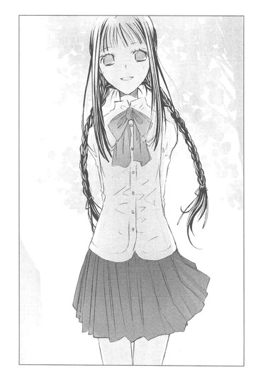
「わたしは、そこでうつむいて、ぶつぶつつぶやいてる快斗くんの、保護者みたいなものよ。快斗くんから嫌がらせされていると相談を受けて、事件解決のため、ひそかに動いていたの」
鼻をひくつかせ、偉そうに言う。
鳴見たちは、まだ状況が飲み込めないようで、ぽかんとしている。
そりゃそうだ。いきなり三つ編みの女が現れ、文学少女だなんて名乗ったのだから。
仁木が、ぼそっとつぶやく。
「......もしかして、松岡たちが言ってた、雀宮センセの従姉妹って」
「そう、わたしよ」
遠子さんが可愛らしくにっこりし、話を続ける。
「土曜日に、快斗くんのクラスの子たちから話を聞いて、犯人の目星はだいたいついていたの。犯人は、快斗くんが試合に出ないよう仕向けていたわね？じゃあ、快斗くんが試合に出ないことによって利益を得るのは誰かしら？と〝想像〟したのよ。
けど、そんな人は思いつかなかった。
じゃあ、快斗くんが試合に出なかった場合、困るのは？そう、パートナーの鳴見くんね。なら、犯人は鳴見くんを困らせたかったのかしら？狙いは、快斗くんではなく鳴見くんだったのかしら？」
仁木が顔をこわばらせる。
そんな仁木を、鳴見と寒河江が気遣うように見つめる。
遠子さんが断じた。
「いいえ、犯人は鳴見くんを傷つけることだけはしたくなかったのよ。だから試合に出したくなかったの。そうでしょう？仁木くん？」
仁木がうなだれ、手を硬く握りしめる。
「......宝が、前みたいに走り回れなくて、辛いんじゃないかって......思ったんだ......。せっかく転校してきて、こっちで楽しくやってるのに......卓球、できなくなったことを、思い出しちまうんじゃないかって......。それにッ、試合で、自分より弱かったはずの相手に負けるのとか、すげ......キツそうで......お、オレは、宝が卓球に懸けてたの知ってるから......」
「ニッキー......」
鳴見が哀しそうな目をする。
遠子さんが、静かに問いかける。
「それで誰も鳴見くんのパートナーにならないように、圧力をかけたのね？まさか不登校の快斗くんが、学校に来るとは思わなかったのでしょう？試合の当日は、きみが快斗くんの代わりに鳴見くんのパートナーに志願して、試合の途中で具合が悪くなったふりをして、棄権でもするつもりだったのかしらね」
「......っ」
正解なのか、仁木が呻く。
「わたしは犯人は、鳴見くんを誰より大事にしている人間で、かつクラスメイトに圧力をかけられる人だと思ったのよ。候補は、仁木くんと寒河江くんと二人いて、どちらにも犯行は可能だったわ。だから快斗くんに鳴見くんを呼び出してもらって、お芝居をしてもらったの。犯人なら鳴見くんが無実の罪で責められるのを、黙って見ていられるはずがないもの」
鳴見がオレのほうを見て、小声で言う。
「お、お芝居だったんだ。よかった......。快斗がおかしくなったのかと思った」
フンッ、あんな演技くらい、カリスマで天才なオレには造作もないことだ。
仁木が、その場でがくっと膝をつき、土下座する。
「悪かった、センセ！ 宝を試合に出したくなくて、つい──。宝にはあんなひどいことできないし。本当に勘弁ッ！」
「つか、オレには、なにをしてもいいのかよっ！」
あの手紙とか、かなりえぐくて、トラウマ刺激されまくりで、精神崩壊寸前だったんだぞ。
「......センセ、図太そうだったから」
おいこら！
「まぁっ！ 見た目で人を判断しちゃダメよ。快斗くんは図太そうに見えるけど、とっても繊細で傷つきやすい男の子なのよ」
遠子さんが三つ編みを揺らして、主張する。
「や、やめてくれ、遠子さん。べ、別に、オレは傷ついてなんか。へっ、たいしたことないぜ、これくらい」
「ぼくからもゴメン。ニッキーのこと、許してあげて」
鳴見が深々と頭を下げる。
「クラスでのイジメを見抜けなかったのは、委員長のオレの責任でもある。すまなかった、雀宮」
なんと、陰険眼鏡まで頭を下げやがった。
「そういや、おまえ、オレのことずっと監視してただろ。体育館にまで、オレのことあざ笑いに来て」
眼鏡が顔を上げ、不可解そうに眉根を寄せる。
「委員長として、不登校の生徒がクラスにとけこめているか、それとなく見守っていたつもりだったのだが」
「なんだって、それでいっつもオレのこと見てたのか!?冷たい目で良からぬことを考えてたんじゃなかったのか？つか、不登校って言うな」
「この目つきは、生まれつきだ」
寒河江がムッとして言う。
どうやら本当に、委員長としての役目を果たしていただけだったらしい。
ここへ来たのも、オレと鳴見の様子がおかしかったので、万一のことがあっては困ると、のぞきに来たのだと聞いて、オレは力が抜けてしまった。
「ああ、もういいよ。仁木も顔を上げろよ。土下座とかされんのめんどくさい。オレは、終わったことを根に持つほど、小物じゃねぇ」
「センセ......」
仁木が、おずおずと顔を上げる。
鳴見が仁木の前にしゃがみこみ、朗らかな声で言う。
「ニッキー、ぼくのこと心配してくれてありがとう。けど、あの頃みたいに走り回れなくても、ラケットを持って球を打てるのは嬉しいんだ。本当だよ」
──今は卓球部じゃないけど、でも卓球は大好きさ。
そう、あのとき鳴見は、心から嬉しそうに笑っていたんだ。
仁木も、鳴見の気持ちに気づいたのだろう。目をうるませた。
「......一番弱かったのは、オレだったんだな。宝が辛いんじゃないかなんて言い訳して、本当は、オレが耐えられないだけだった」
鳴見が仁木の手をつかんで、立たせる。
「ぼくの試合、ちゃんと見ててよ、ニッキー」
「わかった」
仁木が鳴見の手を、握り返す。
「快斗も、試合、頑張ろうね」
鳴見が、晴れ晴れと笑いかけてくる。寒河江が腕組みして見守っている。
「お、おう」
オレは、胸がムズ痺いような気持ちになりながら、小さな声で答えた。
「男の子の友情って素敵」
横で、三つ編みに制服の文学少女な遠子さんが、うっとりしていた。
◇ ◇ ◇
「おお、ホレーシオ、ぼくはもう息が絶えるよ。恐ろしい毒薬にぼくの気力はすっかりなくなって、イギリスからの便りを聞くまで持たない」
帰宅し、仕事用の椅子で、ぐったりしながらつぶやく。
「快斗くん、またハムレットになってる」
デパートで買ってきたチキンやポトフを、キッチンのレンジで温めて、皿に移し替えて持ってきた遠子さんが、目をしばたかせる。
「学校って、やっぱ疲れるや。クラスメイトは、どいつもこいつもイカレてるし、狭い教室の中に、いろんな感情がぐちゃぐちゃに押し込まれててさ......。ちょっとしたことで、悩むし、切れるし、暴走するし、他人の迷惑考えねーし」
遠子さんが、くすりと笑う。
皿をテーブルに置いて、オレの近くまで歩いてきた。
「でも、みんなイイコだったわね。きっとお友達になれるわ」
「ふ、フンッ、どうだか」
そっぽを向くオレの頭を、優しく撫でる。
「ねぇ、快斗くん。シェイクスピアの『ハムレット』は、ブラックプディングみたいな味がするの。ブラックプディングというのは、豚の血で作ったソーセージのことよ。見た目は中世の闇のように真っ黒で、口へ入れるとき、ひやひやしちゃうけど、ねっとりしていて癖になる味わいなの。ナイフで薄く切って、カリカリに焼いていただくのも、リズミカルな台詞の歯ごたえを楽しむようで、美味しいのよ」
優しく、優しく、頭を撫でながら、あたたかな澄んだ声で語ってくれる。
小学生のとき、オレがシャツの背中に油性ペンで落書きされたとき、『大丈夫、ちゃんと綺麗にしてあげる』と笑って洗濯してくれた、あの図書館の彼女のように。
『ほら、真っ白だよ』
広げたシャツと、爽やかな笑顔がまぶしかった。
「男の子はハムレットなのよ。悩みながら行動するの」
今は彼女の代わりに遠子さんが、オレの耳元で、澄んだ声でささやいている。
すみれの香りが鼻をくすぐり、心臓の鼓動を速める。
「妄想に振り回されて突っ走っちゃったり、大事なひとにうまく気持ちを伝えられなくて絶望したり、それでも頑張っている未熟なハムレットが、わたしは好きよ」
「すすすすす好き！」
顔が瞬時に燃え上がる。
卒倒しそうなオレに、遠子さんが花のように微笑みかけてくる。
「ええ、大好き」
心臓が大きく飛び跳ねる。
「遠子さん！ オレ、球技大会頑張る！ それで──優勝したら、とっ、遠子さんに言いたいことがあるっ！」
遠子さんが目をきょとんと見開き、すぐに、「楽しみだわ」と笑う。
その笑顔に胸をとどろかせながら、オレは、
「絶対勝つよ！ 遠子さんのために勝つよ！」
と熱く断言したのだった。
◇ ◇ ◇
合同球技大会で優勝して、遠子さんに告白する！
そう決めたオレは、鳴見に特訓を申し込んだ。
「放課後だけなんて生ぬるい！ 朝練と昼練と夜練もするぞ！鳴見、オレを鍛えてくれ！今のオレは二十四時間卓球モードだ！」
「快斗っ、卓球のおもしろさをわかってくれたんだね！嬉しいよ！」
鳴見は感激し、大会までの数日間、オレの特訓に、みっちりつきあってくれた。
鳴見自身は、膝の故障で過度の運動はできないが、練習メニューを作って、細かくアドバイスしてくれた。
「まだだ！ まだまだだ！」
「快斗、そんなに卓球に夢中になって──感激だよ」
「どんどんこ──い！」
そんな風にして、大会の日を迎えた。
寒河江は野球、仁木はバスケットに出場するという。どちらも会場は武山高校だ。
卓球は、開明学園の体育館で行われる。
応援に来た一般客が、校庭の端や体育館の二階バルコニーで、朝から席取りをしており、ちょっとしたお祭り騒ぎだった。
遠子さんは、土曜は仕事で抜けられないけど、日曜は必ず応援に行くと約束してくれた。
明日まで勝ち残らないと！
幸い、一回戦の相手はオレと同じ素人で、鳴見が絶妙のプレイで試合を支配した。
オレと練習しているときは打ちやすい球しかよこさなかったのに、台の角にあててみたり、ネットの手前に落としてみたり、回転をかけてみたり、自由自在だ。
さすが、全国大会準優勝。
けど、二回戦は現役卓球部員のペアで、苦戦を強いられた。
鳴見は膝に爆弾を抱えていて、激しく踏み込んだり、横に素早く移動したりできないという弱点があり、オレは鳴見の特訓でだいぶマシになったものの、球をとりこぼしたり、台の外へすっとばしてしまうことも多かった。
くそっ、オレが鳴見のハンデになってるのか。
悔しくて、胃がきりきりしたが、んなこと考えてる場合じゃねぇ。とにかく、一球でも多く拾ってゆくしかねぇ。今、出せる力を出しきるんだ。
「うおおおおおおおお！」
技が足りない分、奇声を発して相手をびびらせたのが功を奏したのか、どうにか勝利をおさめた。
「すごいよ、快斗！ 勝っちゃったよ！」
「あたりまえだー！ 明日も勝って優勝だー！」
オレたちは、汗まみれで抱き合った。
翌日の三戦目、遠子さんは約束通り応援に来てくれた。
「快斗くーん！ 頑張ってぇ！」
私服のワンピースを着て髪をおろしている遠子さんを見て、体育館にいたうちのクラスの連中がどよめいた。
「あれ、雀宮の従姉妹じゃないか!?」
「私服だと、大人っぽいなー」
遠子さんの声援のおかげで、三戦目もなんとか勝った。
あとひとつ勝てば、優勝だ！
が、鳴見の膝はだいぶ辛そうだ。
自分たちの試合が終わって、開明に戻ってきた仁木は、
「宝、無理はするな」
と、心配そうな顔をしていた。
「まだ平気だよ、ニッキー。自分の限界はちゃんとわかってるから」
鳴見が笑顔で答える。
同じように戻ってきていた寒河江が、
「無理だと判断したら、こちらからストップをかけるからな」
と、厳しい顔で告げる。
「うん、わかってる」
鳴見はやっぱり笑ってた。
「おい、本当に大丈夫なのか？」
台のほうへ移動しながらこっそり尋ねると、
「快斗まで心配性だな。でも、途中で快斗に頼るかもしれない。後半、多分、強い球は打てなくなる。そのときは快斗がどんどん前に出て、打っていってほしい」
「よし、任せとけ」
身震いしながら答えた。
「快斗くーん！ 鳴見くーん！ 頑張ってー！」
遠子さんが見てるんだ。頑張らなくてどうする。
試合は、前半はオレたちがリードを奪う形で進んだ。鳴見は相変わらず巧みに球をコントロールしていた。
強さでいったら、二回戦にあたったペアのほうが上かもしれない。
けど、後半から鳴見の動きが、あきらかに鈍ってきて、とうとう逆転されてしまった。
鳴見は額から大量の汗を流し、苦しそうに肩で息をしている。
寒河江が動き出したとき、鳴見がそちらを見て大きな声で言った。
「まだだよ！ まだ大丈夫！」
めいっぱい無理してるに違いないのに、とびきりの笑顔で、そう叫んだ。
仁木が寒河江の腕をつかむ。
真剣な目をして、やらせてやってくれと言ったようだった。
寒河江が溜息をつき、戻る。
「いいのか？ 鳴見？」
オレのささやきにも、めいっぱい明るい顔で、
「うんっ、快斗がいるから、まだいける！」
胸を強く打たれるって、こういうことかと思った。
そこから、体の隅々にまで、熱が広がってゆく。
「よしっ、行くぞ、宝」
「あ、はじめて宝って、呼んだね」
「黙れ、こっから先はオレが打ってくぞ」
「うん、作戦通りだね」
なに熱血してんだ、オレは。
けど、体を包む熱が引かない。
試合が再開する。
宝が粘り強く球を返す。
オレも打てそうな球は、片っ端から叩いていった。
クラスメイトが、オレの名前を叫んでいる。
遠子さんが、嬉しそうにオレを見ている。
──学校で同じ年頃の子たちと、同じ体験をして、その中で感じたことは、きっときみの書く糧になるわ。
あの言葉が、今、胸の奥にゆっくりと、染みてゆく。
クラスメイトの歓声が、体の芯を震わせる。
なにかが動き出す。輝き出す。
「よしっ！ 逆転だ！」
そう叫んだのは、委員長の寒河江だった。
それから、遠子さんの声が聞こえて──。
「あと一点よ！」
目の前に飛んできたオレンジ色の球を、腕を大きく振り上げ、相手のコートに思いきり叩きつけた。
大きなどよめき、歓声。
宝が、飛びついてくる。
「やった！ 快斗！」
寒河江や仁木や、他のクラスメイトも「優勝だ！」と叫んでいる。
試合の終了が告げられるなり、オレと宝はもみくちゃになった。
「おめでとう、宝！ センセ！」
「最後の球は、よく決めたな！ 雀宮」
賛辞の嵐の中、オレは遠子さんの姿を探した。
試合に勝ったら、告白すると決めていた。
ＷＥＢのアンケートはビリで告白できなかったけど、今のオレは、遠子さんを愛するにふさわしい勝利者だ！
ああ、ついに──ついに！ このときが来たのだ！
遠子さんが長い髪を揺らし、オレのほうへ走ってくる。
オレもクラスメイトを押し分け、遠子さんのほうへ駆け寄る。
「快斗くぅぅぅん！」
遠子さんがオレの名を呼ぶ。
オレは愛しい人を抱きしめるべく、両手を大きく広げた。
そのとき、きらりと光るものが目を射た。
それは、遠子さんの左手の薬指で輝いていた。
透明な光を放つ、ダイヤモンド。
左手!?
薬指!?
硬直するオレの前で、遠子さんがぴたりと止まり、両手でこぶしを作り、ぴょんぴょん飛び跳ねる。
「優勝おめでとう、快斗くん！ もぉもぉ、すっっっっごく！カッコよかったわ！わたし感激しちゃった」
左手の指輪。
きらきら輝くダイヤの。
それが、遠子さんと一緒にぴょんぴょんぴょんぴょん飛び跳ねる。
「快斗くん、どうしたの？」
「そ──そそそそ、その指輪は、まさかっ」
遠子さんの頬が、みるみる赤くなる。
困ったように視線を泳がせたあと、指輪をはめた手を胸にそっとあてて、嬉しそうに、恥ずかしそうに、幸せそうに──うふふっ、と微笑んだ。
「わたし、秋に結婚するの」
半熟作家とページを捲る〝文学少女〟
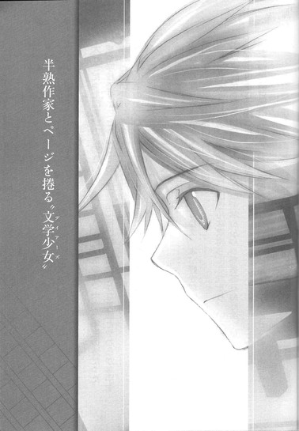
「わたし、明日でバイトやめるの」
大好きだった図書館のお姉さんが、寂しそうに告げたのは、中学一年生の春だった。
家や学校で辛いことがあっても、図書館に行けば、あたたかな笑顔とやわらかな手を持つひとがいた。
クリーム色のエプロンの胸で、さらさら揺れる茶色のお下げ。
──こんにちは、快斗くん。
晴れ渡る空のように、朗らかな声。
彼女と、本の話をするのが、好きだった。
「快斗くんは、本当にたくさん本を読んでるねぇ、本、好きなの？」
「......うん」
「わたしも大好きだよ。本を読むと、いろんな気持ちになれたり、いろんな場所で、いろんな冒険ができるから。本の中にはね、なんんんっでもあるんだよ」
明るい目をして語った、〝文学少女〟。
それが、明日でいなくなってしまうという。
目の前が真っ暗になって、足元が割れて、どろどろした闇の中に落ちてゆくようで。
胸が苦しくて、哀しくて、悔しくて──。
「快斗くん、これ、わたしの住所だよ。快斗くんのも教えてくれる？わたし、お手紙を書くから」
「いい......っ、手紙なんていらないっ」
悔しくて、哀しくて、
体がはじけてしまいそうで、
「オレも、手紙なんか書かないよっ」
泣いている顔を見られたくなくて、背中を向けて走り去った。
あれから一度も、あのひとに会っていない。
◇ ◇ ◇
──わたし、秋に結婚するの。
三日前。球技大会の卓球で優勝を決めたあとの体育館で、遠子さんがはにかみながら言ったことを思い出し、オレは自宅の床で、頭を抱えていた。
──結婚するの。
──わたし、結婚するの。
うわあああ、うわあああ、と叫び、床の上をごろごろ転がる。
にぼしを食べていた猫が、迷惑そうによける。
まさか、遠子さんが結婚するなんて。しかも秋って、もう半年ねぇじゃねぇか！
オレは真っ青になって、「あ」とか「う」とか言って、ぶっ倒れてしまった。
頭の上で、「きゃあ、快斗くん」「しっかりして！快斗！」「センセ！」とか、そんな声を聞きながら、意識を手放したのだった。
みんな、オレが試合で力を出し切ったため、気がゆるんで倒れたと思ったらしい。
目覚めたあと、「本当に快斗はよくやった」と褒めまくられた。
けど、オレは遠子さんの薬指に光るダイヤの指輪を見て、また心臓が止まりかけ、意識が遠のいた。
今も、〝衝撃の告白〟と、それを口にしたときの遠子さんの真っ赤な頬や、幸せいっぱいの笑顔を思い出すだけで、胸がしめつけられ、脈拍異常と呼吸困難に陥り、床をごろごろ転げ回るのだった。
「うああああああ、遠子さんが他人のモンになるなんて、嫌だぁぁぁぁぁ！」
想う相手に、恋人がいるというのと、旦那がいるというのでは、衝撃度も深刻さも、まるで違う。
数ヶ月後には、遠子さんは人妻なのだ。薬指に、ダイヤのエンゲージリングの代わりに、プラチナのマリッジリングがはめられるのだ。
「嫌だぁぁぁぁ！ 嫌だぁぁぁっ！」
今すぐ、なんとかしなければ。遠子さんは本当に人妻になってしまう。貞操観念の固そうな遠子さんは、不倫なんか絶対にしないだろう。旦那がどんな無職の暴力男でも、支えようとしてしまうはずだ。
──遠子さん、オレは十八になった。年収も十億円を越えた。あいつと離婚して、オレと結婚してくれ。
──ごめんなさい、快斗くん。あのひとは、わたしがいないとダメなの。
「うああああああああ、ダメだ、遠子さん！ そんなやつと結婚するな～～～～！」
転がりながら絶叫する。
そうだ、編集長に直訴して、遠子さんをオレ専属の担当にしてもらおう。それで、遠子さんが家に帰る間もないくらい、書きまくろう。そうしたら結婚式の準備もできなくなって、彼氏がうだうだ文句言って、破局するに違いない。
作家としての立場を利用したパワハラでもセクハラでも、かまうもんか。遠子さんの結婚を阻止できるなら、プライドも捨ててやるっ。
涙と鼻水をぬぐって立ち上がり、オレはさっそく小綺麗な服に着替え、薫風社の編集部へ向かった。
遠子さんをオレの専属編集者にしてほしい。
編集長の佐々木さんに真顔で告げると、佐々木さんは目を丸くしてぽかんとしたあと、吹き出した。
「いや、冗談でも作家にそこまで言ってもらえたら、天野くんも編集者冥利につきるんじゃないかな」
「じょ、冗談じゃないっす」
出版社のビルの地下のカフェで、顔をこわばらせ主張するオレに、佐々木さんがクックッと笑いながら、
「いやいや、わかってるよ。雀宮くんが急に訪ねてきたのは、天野くんから婚約のことを聞いたからだろう？結婚祝いなら相談に乗るよ。あ、結婚式は雀宮くんも招待されるだろうから、スピーチを考えておくといい。二次会で、みんなで芸を披露するのもいいねぇ。天野くんから結婚の報告を受けたときは、本当に嬉しかったよ。まあいずれそうなるとは思っていたが、天野もきっと結衣さんと喜んでるだろう。あ、天野というのは、天野くんの父親で、私の同僚でね、結衣さんは天野の奥さんだよ」
いつの間にか思い出話がはじまり、それを延々聞かされるはめになっていた。
「遠子ちゃんと彼は、高校の文芸部の先輩と後輩でねぇ。きっとあの頃から、彼には遠子ちゃんが必要で、遠子ちゃんにも彼が必要だったんだねぇ」
なんて聞きたくもないことまで、懐かしそうに話している。
「佐々木さん！ 結婚式はどうでもいいから、遠子さんをオレの専属編集者にするって件、考えてください。オレ、本気ですから。遠子さんを専属にしてくれるなら、一生薫風社以外では書きません」
「ははは、それは魅力的な申し出だね。しかし、天野くんはすでに井上ミウの専属編集者みたいなものだからなあ」
「い、井上ミウ？」
喉がいきなりふさがる。何故、ここで井上ミウの名前が出る？
デビューしたとき、さんざんポスト井上ミウと報道され、比べられたので、オレはミウに対して悪感情しか持っていない。あんな、なよなよしたオカマ小説が、オレの数倍売れているという事実が、さらにムカツク。天敵だ。
「そういえば、雀宮くんは、井上くんのファンだったね」
違ぁぁぁぁぁぁぁう！ まだ誤解されてんのか！
「天野くんと井上くんのコンビは最強だよ。井上くんに、二作目の『文学少女』を書かせたのも天野くんだし。天野くんが井上くんの担当になってから、井上くんの小説は質も売り上げもますます向上しているしね。今度『明日会うきみへ』がカンヌでグランプリをとった堀尾監督に映画化されるけど、あれも天野くんとのコンビで書いたんだよ。別れ別れになった恋人たちが何度も擦れ違いながら、ついに再会する、感動的なラブストーリーだね。あれの累計部数は、もう五百万部を越えてたかな」
カンヌの受賞監督で映画化だの、部数五百万越えだのが、どかどか頭に落ちてくる。
ま、負けてるっ。
完全に負けてるっっ。
「そういうわけだから、天野くんを専属にっていうのは無理だね。まぁ、結婚ということになると、表向きは担当替えもやむをえないが、井上くんが遠子ちゃんの専用作家ってのは、変わらないからなぁ」
と、佐々木さんは、わけのわからんことを言い、
「それより、二次会の出し物の件なんだが、作家と編集部によるミュージカルはどうだろうね？雀宮くん、きみ、歌と踊りはイケるほうかい？私は昔は歌声喫茶の常連でね。妻ともそこで知り合って」
まだまだ続く思い出話を、オレは死にそうになりながら聞いていたのだった。
やっと解放されて、ぐったりと肩を落として出版社を出たのは、夕暮れどきだった。
ビルの谷間に、太陽が沈んでゆく。
ああ、オレには、遠子さんを拘束する権力すらないのか。
この体を切り裂くような寂しさを、どうすればいい。
過去最高に落ち込んで、弱気になっており、同じ作家ならオレの気持ちをわかってくれるだろうかと、携帯を開き番号を呼び出す。
早川緋砂。
生意気な女だが、同じ戦場で闘うライバルであり、同志でもある。
担当替えのとき、『遠子さんじゃなきゃ嫌だ』と泣いた早川なら、オレとともに嘆き悲しみ、また憤ってくれるだろう。
「もしもし、オレだが」
「え──っ、雀宮!? 珍しい！ あんたからかけてくるなんて」
はしゃいだ声がする。
そんなにオレからの電話が嬉しいのかと、ちょっと気分がよくなったとき。
「ごめーん、今、馬場さんと打ち合わせ中なんだ。あのねっ、馬場さんて経済のこととか会社の経営のこととか、なんでも知ってて、すっごく頼りになるの。え、やだ、お世辞じゃありませんよぉ」
向こうで、きゃっきゃっとやりとりしている声がして、
「てわけで、ゴメン。あとで電話するから」
ぶちっ。
切れてしまった。
「くそぉ、このビッチ！」
オレは腹が立って、早川のアドレスと電話番号を、携帯から削除してやった。
これだから女は信用できない。遠子さんとじゃなきゃ書けないと、めそめそしていたのに、新しい担当に、すっかり懐きやがって。あーあー、頼りになる担当で、よかったな、お幸せに、結婚でもしちまえ！
やっぱり哀しみを打ち明けられるのは、同性の友人だ。
同じ教室でともに学ぶ仲間たちだ。今のオレには、苦難をわかちあい、励ましあうべき友達がいるじゃないか。
登録したばかりの宝の携帯に、電話をする。
あいつならきっと、オレの哀しみに深く同情し、一緒に泣いてくれるだろう。仁木や寒河江と、オレを励ます会を開いてくれるだろう。
そうだ、オレは一人じゃない。
「あっ、快斗？ 今、クラスのみんなと、カラオケで盛り上がってたんだ」
カラオケ？ オレ、呼ばれてねぇ。
「快斗にメールしたけど、返事なかったから。って、聞いてる？快斗？」
どういうことだ？ オレは〝クラスのみんな〟に入ってないのか？
「今から来る？ 快斗？」
「来なくていいぞ。こんな集まり、不健全だ」
今の声は、寒河江か？
あのお堅い寒河江まで、カラオケに誘われて、マラカス鳴らしたり、デュエットとかしてんのに、オレだけハブ？
「快斗、どうしたの？ 快斗？ 聞こえてる？」
「お、おまえらなんか、大嫌いだぁぁぁぁ！」
ぶちっ。
こっちから切ってやった。
宝の電話番号とアドレスも削除する。
そうするとオレのアドレス帳は、すかすかになった。残っているのは、出版社の番号と、モデルの仕事関係の番号と、それから遠子さんの──。
「ぅぅぅ」
遠子さんの携帯番号とアドレスを削除しようとし、指が止まった。
「で、できない」
そのことに、さらに絶望し、オレはうわあああと叫びながら夕日に向かって駆け出したのだった。
ちくしょう！ ちくしょう！
もう、原稿なんて書けないよ～～～～。
残る救いは、いつもにぼしをたかりにくる黒猫だけだ。
あのクールで誇り高い猫だけは、オレを裏切らないはずだ。そうだ、オレたちは一人と一匹で、世間の冷たい風を受け、ハードボイルドに生きてゆくんだ。
が、マンションに辿り着いたら、エントランスのところで、魔神ブゥみたいなメタボなおっさんが、でれでれした顔で黒猫を抱き上げ、
「いいこでしゅねぇ、オードリー。さぁ、ごはんにしようねぇ。今日はオードリーの大好きな無添加キャットフードのミルクがけだよぉ」
と、撫で撫でしているのに出くわし、猫のやつも甘い声で「ミーミー」鳴いているのを目撃して、愕然とした。
猫は、飼い主の頬に体をすりつけるのに夢中で、オレには目もくれなかった。
うわぁぁぁぁ、猫にまで見捨てられたぁ。
部屋に飛び込むなり、荷物をまとめ、トレンチコートにサングラスで、旅立ったのだった。
マンションの前で振り返り、切なくつぶやく。
「さよなら、遠子さん。オレのことは忘れてくれ」
◇ ◇ ◇
新作単行本の書き下ろしの締め切りは、一週間後だった。
学校に通ったり、卓球の特訓をしたりで忙しくて、ほとんど手をつけていない。けど、知ったことか。この張り裂けそうな痛みの前では、すべてが無力だ。
人目を避けて夜の電車に飛び乗り、辿り着いたのは伊豆だった。
海辺の温泉宿を訪ね、しばらく滞在したいと告げると、従業員たちはあからさまに怪しそうな視線を向けてきた。が、宿賃を一週間分前払いし、海の見える部屋に案内してもらうことができたのだった。
六月の夜は、まだ肌寒い。
窓辺で寂しげな波音を聞きながら、一人涙にくれる。
遠子さん......オレは、もうあなたには会わない。
人にも、猫にも、世の中にも、オレは絶望した。ここで、貝のように静かに暮らすんだ。そうしたら、この哀しみもいつか伊豆の波に洗われて、薄れてゆくかもしれない。
気持ちは完全に世捨て人だった。
翌日も、宿の周辺を散策し、潮の香りのする町並みや、足元に咲く草花を眺めながら想いにふける。
『道がつづら折になって、いよいよ天城峠に近づいたと思う頃、雨脚が杉の密林を白く染めながら、すさまじい早さで麓から私を追って来た』
ああ、これは『伊豆の踊子』の冒頭だ。
かの文豪川端康成は、学生時代、誰にも告げず伊豆へ旅立ったという。そこで旅芸人の一座と道連れになり、その経験をもとに『伊豆の踊子』を書いたのだ。
町の小さな映画館で『伊豆の踊子』のリバイバル上映をしていた。
チケットを買って、中へ入る。
踊り子役は昔のアイドルらしく、えらい棒読みだった。けど、無邪気で純粋な雰囲気はよく出ていて、モノクロ画面にも郷愁を誘われ、気がつくと泣きながら見ていた。
主人公の学生は、自分の性質が孤児根性で歪んでいると、うだうだ悩んでいるような暗いやつだ。
そんな心に鬱屈を抱えた男が、無垢な踊り子とわずかなあいだ、旅をともにし、ちょっとだけ癒やされるという、ただそれだけの話なのに。
──『伊豆の踊子』は、桜色の甘エビのようね。可愛くて初々しくて、口に入れた瞬間、とろりと切なくて、幸せで甘いの。
いつか遠子さんが、オレの部屋で本棚から抜き出した『伊豆の踊子』をめくりながら、あたたかな目で語っていたことを思い出す。
本を読んでいるときの遠子さんは、本当に嬉しそうで、澄んだ声を聞いているだけで、ドキドキして幸福な気持ちになれた。
まるで、昔なくしてしまった大事なものを取り戻したみたいに。
いつまでもいつまでも、遠子さんの声を聞いていたかった。
けど、遠子さんは秋には結婚する。左手の薬指にダイヤモンドのエンゲージリングをはめて、あんなに嬉しそうに頬を染めて、
『結婚するの』
と言った。
そうして、オレ一人が遠子さんの作家じゃないということも、わかってしまった。
遠子さんが、井上ミウの担当だったなんて。
いくら偉ぶってみても、井上ミウと比べたら、売り上げも人気もまだ及ばない。
遠子さんにとってオレなんか、きっとその他大勢の作家の一人にすぎないんだ。
私生活では、高校からのつきあいだという彼氏に負け、仕事でも井上ミウに負けた。
エリートぞろいの家族からは落ちこぼれ扱いだし、慰めてくれる友達もいない。
オレのこと気にかけてくれる人間なんて、この世にいないんだ！
オレは、生まれながらの孤児なんだぁ！
あふれ出す涙を、手の甲でぬぐう。
くそっ、川端康成め、こんなちゃちな話で、このオレを泣かせやがって。
いいよなぁ、『伊豆～』の主人公は。孤児根性で人間不信とか悩んでても、伊豆で可愛い踊り子に会えたんだから。
ああ、オレの心を癒してくれる踊り子とは、いつ会えるんだ。
暗い気持ちで、映画館をあとにする。
夕暮れに向かいはじめた海は、しっとりと湿り気を帯び、蜂蜜色に輝いている。
それがまた目に染みて、視界がぼやけてゆく。
砂に足をとられそうになりながら、ふらふら歩いていたときだ。
聞き慣れた声がした。
「──と、くーん！」
波が静かに打ち寄せる蜂蜜色の海岸で、オレを呼ぶ声。
「快斗く──ん！」
潮風に乱れる長い黒髪。
オレに向かって手を振る、ほっそりした腕。華奢なウエスト、小さな白い顔。明るい瞳、朗らかな声。左手の薬指で輝くダイヤモンド。
「おおい！ 快斗く──ん！」
遠子さんだ！
オレはばっと背中を向けて、がむしゃらに駆け出した。
「快斗くん！ なんで逃げるの！」
遠子さんが追ってくる。
「待って！ 待って、快斗くん！」
「なんで、来るんだ～～～～っ！」
走りながら叫ぶ。
遠子さんの顔を見るのが辛くて東京を離れたのに。遠子さんが現れたら意味ないじゃないか～～～～っ！
「今日は、打ち合わせをする約束だったでしょう！」
後ろで遠子さんが、必死に叫んでいる。
「お部屋に行ったら、『探さないでくれ』って書き置きがあって」
「だったら、探すなよー！ なんで、オレがここにいるってわかったんだ」
「ごめんなさい！ 心配で、快斗くんのパソコンを開けて、履歴を調べたの。そしたら伊豆の旅館や、観光地や、電車の乗り換え情報が出てきたから──」
ハァハァと息を吐きながら、遠子さんが答える。
オレのバカ！ なんで履歴を消しておかなかったんだ！
「とにかく、来るなぁぁぁ！ 帰れぇぇぇ！ 一人にしておいてくれぇ！」
半泣きで逃げるオレを、遠子さんが息もたえだえに、どこまでも追ってくる。
黄昏の砂浜を走る、若い男女。
遠くから見たら、恋人同士の戯れに見えるのだろうか。
「快斗くん！ 原稿の締め切りは一週間後よ！」
遠子さんはあきらめない。あんなに細い体をしているのに、こんなにタフだなんて知らなかった。オレのほうが息が上がり、膝が笑い、心臓が爆発寸前だ。
「もう、小説なんて、書かない！」
振り返って叫んだとたん、足がもつれて、砂の上にダイビングする。
遠子さんも、オレの横にしゃがみ込みながら、オレの右手をぎゅっとつかんだ。
「ハァハァ......つ、つかまえた......ハァ」
砂に倒れたまま見上げると、遠子さんは顔を伏せ、ハァハァ......と荒い息を繰り返し、肩を上下させていた。
オレもへろへろだけど、遠子さんも相当へばっている。長い髪が汗で白い頬にはりついている。オレの手を握っている遠子さんの手も、汗でぬるぬるだ。
それでも、絶対放さないというように、固く強く握りしめている。
「......ハァ......ねぇ......もう小説書かないなんて......ハァ、言わないで......。か、哀しくなっちゃうから......」
胸がズキッとし、込み上げる涙で喉がひりつく。
「お、オレのほうが、哀しいんだよ......っ。もう、書けない。パソコンの前に座ってても、胸がズキズキして、書けない......っ、な、なんにも浮かばないっ。書けないよ、ちくしょー！」
遠子さんが肩で喘ぎながら、顔を上げる。黄昏の光を受けて、汗がきらきらと輝いている。オレを見おろす遠子さんの目は、とても哀しそうだった。
「どうして書けないの？」
「失恋したんだよ！」
ヤケになって叫ぶ。相手は遠子さんだと言ったら、どんな顔をするだろう。いっそ言ってしまおうか。
が、オレが口を開く前に、遠子さんがオレの手を握る指にぎゅっと力を込め、力強く言ったのだった。
「だったら、失恋したことを書けばいいのよ」
◇ ◇ ◇
「川端康成だって、失恋を経て文豪になったのよ」
オレの泊まっている部屋に上がり込むなり、遠子さんは、持参のノートパソコンをテーブルに置き、力説した。
「婚約者に一方的に振られた康成は、失恋の痛手を癒すために、伊豆の温泉旅館で『湯ケ島での思ひ出』という未定稿を書いたの。その前半部分が『伊豆の踊子』よ。康成が失恋しなかったら、『伊豆の踊子』という作品は生まれなかったかもしれない。失恋が彼を大作家にしたようなものよ」
オレは逆らえず、ノートパソコンに向かうことになったのだった。
遠子さんは、自分は出版社の編集者で、先生の原稿が完成するまで同じ部屋に泊まってお世話をすると、旅館の従業員に告げた。
オレを自殺志願者と思って気味悪がっていた従業員たちは、そうか作家だったのか、ここへは缶詰に来たのかと納得したようだった。
遠子さんは編集部にしばらく出張しますと連絡し、オレの学校にも、快斗くんは、よんどころない事情で一週間ほど学校へ行けません。出席日数で足りない分は、補習を増やしていただけないでしょうかと、交渉していた。
「さぁ、もう学校のことは心配しなくてもいいわ。快斗くんの今の気持ちを、思う存分小説に込めてちょうだい。川端康成も、快斗くんを応援しているわ」
遠子さんが励ますように言う。
けど、川端康成だって、失恋した直後に、その心境を小説にしろとは言われなかったんじゃないか。しかも失恋相手が横にいる状況でなんて、ひどすぎる。
パソコンに向かっても、後ろでじぃっと見守っている遠子さんの視線ばかりが気にかかる。開き直って『伊豆の踊子』を超える名作を書こうとしても、頭に浮かぶのは、『結婚するの』と微笑む遠子さんばかりで、いかんいかんと頭を振れば、視界に遠子さんの薬指で光るダイヤのリングが入り、胸をぐさりと突き刺されるという風だった。
「だ、ダメだ、書けない......っ」
「大丈夫、快斗くんなら書けるわ」
「無理だぁ」
「あきらめないでっ。快斗くんの好きなひとのことを思い浮かべてみて。そのひとと、どこで知り合ったの？はじめて見たときどう思った？どんな話をした？どうして、そのひとのことを好きだと思ったの？」
思い浮かべるもなにも、オレのすぐ横に、真剣な顔で座っている。
「し......知り合ったのは、仕事で」
「まぁ、モデルのお仕事？ それとも小説のほう？」
「しょ、小説の......」
「そう」
「相手は早川じゃないからな！」
「えっ！ てっきりそうかと」
心配したとおり早川に失恋したと思われていたらしく、目を丸くする。
「と......年上で」
「緋砂ちゃんも、年上だけど」
「早川より、もっともっともっと年上で」
勢いで口走ると、また目を丸くした。
「それって......二十とか、三十くらい上......？ううん恋に年齢は関係ないわ。そう、辛い恋をしていたのね、快斗くん。その切なさを、今こそキィボードにぶつけるのよ」
オレは、ますます力が抜けた。
夜がふけても、半ページしか埋まらなかった。
半ページ埋めただけでも、褒めてほしい。一行書いては消し、二行書いてはまた消し、ついにオレは両手をギブアップの形に上げて叫んだ。
「うわああああああ、やっぱり無理だああああああ！」
「落ち着いて、快斗くんなら、失恋したひとたちが、思わず共感して泣いちゃうような小説が書けるわ」
「そんなの書きたくねぇ！ ひとの気も知らず、勝手なこと言うなぁぁぁぁ！」
昨日からろくに寝てないこともあって、寝不足と疲労と失恋のあれこれで、ついにオレは切れた。
どさっと音がして、気がつけば遠子さんを押し倒していた。
「か、快斗くん......！」
畳の上に、遠子さんの黒髪が広がる。白いブラウスに、フレアスカートの遠子さんが、目を大きく見開いて、びっくりしている顔で、オレを見上げている。
ど、どどどどどーしよ。押し倒しちゃったよ。このあとどうすんだ、オレ。
そりゃ、ここまでやっちまったら、とことんいくしかねーだろ。
と、とととことんって？
とことんは、とことんだ。おまえの想像の及ぶ限界までだ。
えええええええええっ！ そこまでしていいのか！
押し倒しておいて、なに気弱なこと言ってんだ。おまえは初めて彼氏とお泊まりする処女のお嬢ちゃんか。
そ、そうだよな、オレを煽った遠子さんが悪いんだ。
おう！ おまえが男だってわからせてやれ！案外一度やっちまったら、ころっと彼氏から乗り換えるかもしれないぞ。
よぉし！ やってやる。
自分との対話を終え、心を決めて、遠子さんをじっと見つめる。
遠子さんは、困惑の表情を浮かべている。
「......遠子さん、オレ」
ゆっくりと顔を近づけていったとき、頭の中に重大なことが閃いた。
ヤバイ！
忘れていたけど、オレ、童貞だったんだ！
処女のお嬢ちゃんなら、寝っころがってれば相手があれこれしてくれるだろうが、男はそういうわけにはいかない！
本能のまま突き進めば、どうにかなるだろうか？知識はそれなりに、小説の資料としてその......ごにょごにょ。
が、知識と実戦は違う。
まんいち、『下手くそ』とか思われたら、うあああああああ、あううううう。
遠子さん、彼氏と経験あるのかな。
いや、遠子さんは奥手そうだから、結婚するまでそういうことはしない！遠子さんは、キスひとつで赤くなる処女なんだぁぁぁ！
け、けど......も、もし、経験済みだったら、絶対、彼氏と比べられる。
『彼より、手順が悪くて下手だったわ』とか、うああああああああああああ。
オレは遠子さんから飛びのき、頭を抱えて、うずくまった。
ダメだっ！ 童貞のオレには、押し倒してテクニックでめろめろとかハードルが高すぎるっ。
こんなことなら実戦を積んでおくんだった～～～～！
「快斗くん、どうしたの？ 具合が悪いの？ それなら、今日はもう書くのはやめて休んだほうがいいわ」
「と、遠子さんっ！」
オレは振り返って叫んだ。
遠子さんがぎょっとして、身を引く。
「オレ！ 童貞なんだ！」
「ええっ！」
いきなり童貞だと叫ばれて、遠子さんは目を見開き、茫然としている。それから、励ますように、
「で、でも、あのっ、誰でも初めてのときはあるものだから。快斗くんなら、これからいっぱい経験できるわ」
「今じゃなきゃダメなんだっ」
首を激しく横に振り、オレはその場で、がばっと頭を下げた。
「頼む！ 遠子さん！ オレに──教えてください！」
「快斗くん......！」
おずおずと顔を上げると、遠子さんは鼻っ赤な顔で、もじもじしていた。
「で、でも......わたしも、そんなに経験豊富なわけじゃ......。快斗くんの役には立てないかも」
「遠子さんがいいんだ！」
オレも真っ赤な顔で訴える。
自分が子犬になって、うるんだ目で、きゅんきゅん鳴いている気分だった。
遠子さんが迷うように視線をそらす。両手を頬にあて、恥ずかしそうな気弱そうな表情を浮かべ、また横目でオレのほうを見て、もじもじする。
「そ、それじゃあ......わ、わたしでよければ......」
掠れた声で、ささやく。
「か、快斗くんに、教えてあげる」
◇ ◇ ◇
そのまま一睡もせずに夜を明かした。
オレは精も根も尽き果て、壁にぐったりともたれている。
旅館の窓から、まぶしい朝の光が射し込んでいる。
遠子さんは、まだまだ元気そうだ。
「──それでね、二人で文化祭の閉会式をさぼって、文芸部の展示をした部屋で、フォークダンスを踊ったのっ。彼が、わたしのことじっと見つめるから、ドキドキしちゃった。こんなに顔が近くにあったら、わたしの心臓の音が、聞こえちゃうんじゃないかしらって心配で、もっとドキドキしたわ。彼って、あの頃は華奢でお肌がすべすべで、女の子みたいに可愛かったのっ。セーラー服なんかとっても似合いそうで。
なのに、ときどき、あー男の子なんだなーって顔をすることがあって、そのギャップに胸が切なくなっちゃったのよねぇ。あ、今の彼も、もちろん素敵よ」
この調子で、昨晩から延々と彼氏のことをのろけている。
「それにとっても優しくて、笑顔も声も爽やかで、わたしに美味しいごはんを食べさせてくれるのよ。だけど、ちょっと意地悪なところもあって、この前も、わたしがうたた寝してるあいだに、髪を三つ編みにしちゃうし、わざとごはんにヘンな味付けをしたりするし。でもでも、仲直りしたあとは、いつも甘ぁいおやつを食べさせてくれるの。それからね──」
教えてくれというのは、彼氏とのなれそめから現在のつきあいに至るまで赤裸々に語ってほしいという意味ではなかったのだが。
ああ、なんで好きな女の口から、別の男の、のろけ話を聞かなきゃならんのだ。
それも一晩中とか、拷問だ。
「それでね、快斗くん。そのとき彼は、わたしの代わりに、校庭の木にリボンを結んでくれたのよ。あのときのことは、何度思い出しても、胸がきゅーっとしちゃうわ。あのとき、はじめて彼のこと、男の子として意識したのよ。ねぇ、快斗くん、聞いてる？まだとっておきのエピソードが、いっぱいあるのよ」
オレは心の中で泣きながら、遠子さんのとろけそうな甘い声を聞いていた。
三時間後。
「ふわぁ......眠くなってきちゃった」
遠子さんが、しゃべり疲れて、うとうとしはじめる。
やがて、テーブルに頬を押しつけて、眠ってしまった。
テーブルの端から、綺麗な黒髪が、さらさらとこぼれ落ちている。
シンとした部屋の中に聞こえる吐息は安らかで、白い頬がうっすらと上気し、長いまつげがちょっと震えている。
目を閉じて子供のように眠る遠子さんを、静かな気持ちで見つめていた。
ああ......幸せそうだな、遠子さん。
なんだか体の中から、どろどろした感情が抜け落ち、空っぽになったような気がした。
そっと抱き上げた遠子さんの体は、ひどく軽かった。布団まで運び、ほんわりした寝顔をまたちょっと見つめ、それから自分も部屋の隅で毛布にくるまって体を丸め、無心に眠り続けた。
夕方まで、爆睡していたらしい。
毛布の上に掛け布団が増えていて、遠子さんが肩をすぼめ、赤く染まった顔を伏せて、正座していた。
「あ、あの......っ、わたし一人でぺらぺらしゃべっちゃったみたいで、ごめんなさいっ。わたしが話したことは、忘れてちょうだい」
遠子さんも、寝不足でハイになっていたらしい。
あののろけっぷりは、それだけではないような気もしたが......。
「いいよ、参考になったから」
遠子さんが、また赤くなる。
「そ、そう。ならいいんだけど......でも、あの、やっぱり忘れてっ」
「じゃあ、オレの言うこと、ひとつだけきいてくれる？」
「なにかしら」
遠子さんがちょっと怯えた顔をする。
「......三つ編み」
「え」
「三つ編みさせて」
遠子さんは、不可解そうにオレを見ている。
「わたしの髪を、三つ編みにしたいの？」
「うん」
真面目な顔で答える。
遠子さんは、まだ困惑しているようだったけれど、
「快斗くんがしたいなら......い、いいわよ」
おずおずと言った。
「ありがとう、遠子さん。櫛とゴムある？」
「ええ」
遠子さんが自分の荷物から、古風な木の櫛と、黒いゴムを二つ出して、オレの手のひらに載せる。
オレは遠子さんの後ろに回り、畳に膝をつき、長い黒髪をそっと手にとった。
それは細くひんやりとしていて、オレの指先で今にもとろけそうにやわらかだった。
指の隙間からさらさらとこぼれ落ちてゆく、黒髪。
それを木の櫛で、優しくすいてゆく。
癖のまったくない素直な髪は、櫛に少しもひっかかることがなかった。
本当に綺麗な、黒髪だ。
遠子さんは緊張しているようで、肩をこわばらせている。
ときどき、オレの指が細いうなじをかすると、ぴくんとする。
オレは黙って、手を動かしていた。
そうして、髪を半分にわけ、その半分をさらに三つにわけ、丁寧に編みはじめた。
細くしなやかな髪は、油断すると指からこぼれてしまう。それをまたすくい、ゆっくり編み込んでゆく。
オレも、遠子さんも、一言も話さなかった。
遠子さんがどんな顔をしているのか、わからない。
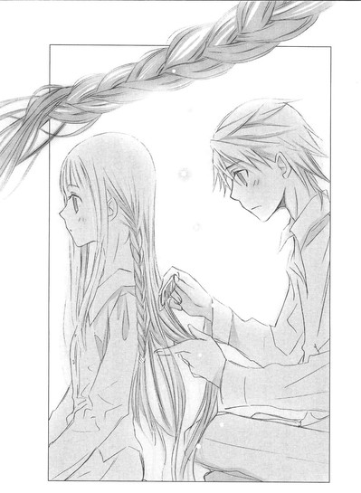
細い肩がときどき震え、白いうなじが、ほんのり赤くなる。
髪を編むオレは、とても静かな気持ちだった。片方を編み終え、先をゴムで留め、もう片方も同じように、時間をかけて、じっくり編んでゆく。
遠子さんは背筋を伸ばし、肩をすぼめて、じっとしている。
やがて、黒猫の尻尾のように長くて細い、二本の三つ編みが出来上がった。
振り返った遠子さんの顔は、真っ赤だった。
「いい感じに編めたよ」
「そう？」
大正時代の女学生のように、しとやかに頬を染めたまま、はにかんでいる。
オレも澄んだ気持ちで微笑んだ。
「ありがとう、遠子さん。原稿書くよ」
◇ ◇ ◇
遠子さんは、オレがノートパソコンで執筆しているあいだ、三つ編みのままオレの後ろに座っていてくれた。
かたかたとキィを叩く音と、かすかな波音だけが聞こえる畳の部屋で、膝をきちんとそろえて正座して、真摯な眼差しで、三つ編みの〝文学少女〟が、オレを見守っている。
それがなんだか、幸せで。
胸の奥がジンとしていた。
物語の主人公は中学一年生の少年で、彼が図書館で出会った年上のヒロインは、遠子さんになったり、初恋の司書のお姉さんになったりした。
辛くて、ひとりぼっちだったとき、優しく声をかけてくれた、彼女。
──快斗くんは、作家になれるよ。
朗らかな声で、未来への扉を開けてくれた。
ひだまりのような、ふんわりした笑顔。
そこに、遠子さんが重なる。
担当と喧嘩ばかりして、誰の意見もきかず一人きりで小説を書いていたオレに、まっすぐに関わってきた。
──〝ナリヒラ〟は、『伊勢物語』の在原業平をモデルにされたんじゃないですか？
──きみのこと信じているわ。だから、これからは、わたしのことももっと信じてくれたら嬉しい。
──わたしは、快斗くんが今よりもっと素敵な小説を書く、手助けをしたいの。
オレの目を見つめ返す、きらきらした瞳。
甘く澄んだ声。
学校嫌いのオレを登校させて、そこで感じたことは書く糧になると、優しい顔で教えてくれた。
毎日くたくたになるまで卓球の特訓をして、うんと頑張って優勝して、クラスの連中と気持ちがひとつにとけあうような興奮と感動を知った。
あんな最高の気分を味わえたのも、遠子さんのおかげだ。
恋する気持ちも、それが相手に届かない切なさも、初恋の彼女と、遠子さんが教えてくれた。
心がほっと軽くなる幸せな時間も、ただ相手が笑ってくれるだけで胸がいっぱいになるあの甘い感覚も、今、オレの創り出す物語の中で、再現できる。
感じたこと、考えたこと、迷ったこと、悩んだこと、苦しんだこと──すべてが星のように輝き、書く糧になる。
遠子さんが旅館の人に、簡単につまめる食事を作ってくれるよう頼んでくれた。それを食べるあいだも、オレはキィを叩き続けた。
ようやく一息ついて、パソコンの前に座ったままぼうっとするオレに、遠子さんが浴衣とタオルを渡して、微笑んだ。
「この旅館、露天風呂があるんですって。行ってみない？」
石で囲んだ温泉は、白い湯気を立てていた。湯の真ん中に薄い木の壁があって、男湯と女湯にわかれている。
オレたちは、それぞれの出入り口から入り、お湯につかった。
真夜中のせいか、オレと遠子さんの二人きりみたいだった。
ぽちゃんという音が、壁の向こうから聞こえてくる。
「いいお湯ね」
壁越しに、遠子さんが話しかけてきた。
「ああ。体がのびのびするな」
「ええ」
ほんわりした声が、返ってくる。
「そういえば、鳴見くんたちが、快斗くんのマンションへ訪ねて来たわ。携帯で様子がヘンだったからって」
「あいつらが」
「それと、緋砂ちゃんが怒ってたわ。用があるみたいだったから、打ち合わせを早めに切り上げて、快斗くんの携帯に電話したのに、ずっと話し中だって」
あ......。アドレスに登録してある番号以外、着信しない設定になってたっけ。
「ちょっと元気がなかったから、わたしに様子を見てきてほしいって......。緋砂ちゃんも、快斗くんのこと心配してたのよ」
頬が熱くなったのは、きっとのぼせたせいじゃなかった。
一人でテンパって、世界中から見捨てられたような気がして、締め切りをぶっちぎって逃走した自分のガキっぽさに、あらためて恥じ入る。
早川たちに、謝らなきゃな......。
きっと早川なんか死ぬほど文句を言うだろうけど。
「快斗くんは、緋砂ちゃんにも、鳴見くんたちにも好かれているのねぇ」
遠子さんが優しく言う。
それで、ますますのぼせてしまう。
「ほ、星っ、東京よりよく見えるな」
「そうね、とても綺麗ね」
「......遠子さんは、なんでオレのこと追っかけてきてくれたんだ。締め切りがあったからか？」
耳をすますオレのすぐ後ろから、あたたかな声が聞こえた。
「締め切りがなくても、きっと追いかけたわ」
胸が、強く高鳴る。
遠子さんは、壁にもたれて話しているようだった。
オレも、壁に背中を押しつけたまま、息をひそめて続きの言葉を聞く。
「だって、快斗くんは、わたしの大事な作家ですもの」
星のまたたく空に、体がぐんと引き上げられるような、感覚。
頭がすっきり冴え渡って、全身に力がみなぎってゆくような。
もう、井上ミウが遠子さんの担当だとか、遠子さんが結婚するとか、どうでもよかった。
わたしの大事な作家。
その言葉が、なによりの勲章だった。
それだけで、もうじゅうぶんな気がした。
「そろそろ、あがろっか、快斗くん」
「ああ、原稿書かなきゃ」
先に部屋に戻って、浴衣のままパソコンに向かい、キィを叩いていると、遠子さんが遅れて部屋に入ってきた。
浴衣に三つ編みで、ほんのりピンク色の頬をしている。
「寝てもいいよ」
と言ったけど、
「ううん」
首を横に振って、オレの後ろにちょこんと正座する。
あたたかな眼差しを背中に感じながら、キィを叩き続けた。
◇ ◇ ◇
伊豆に来てからきっかり一週間後に、原稿用紙換算で四百枚分の初稿が完成した。
手足を大の字に広げて熟睡するオレに、毛布と布団をかけ、その横で遠子さんは書き上げたばかりの原稿を読んでいたらしい。
オレが目を覚ますと、赤い目で鼻をすんとすすり、
「快斗くん、とっても素敵なお話だったわ」
と、微笑んだ。
宿を発ったのは、夕方近くだった。
地元の高校生が、ちらほら同乗している電車のベンチシートに、遠子さんと並んで座り、東京へ戻ってゆく。
がたごとと車輪が鳴る音と、ゆるやかな振動が、心地いい。
と、いきなり遠子さんが、オレの腕を引いた。
「？」
「快斗くん、あの子」
声をひそめてささやく。えらく興奮していて、目が輝いている。
遠子さんがこっそり指し示すほうへ、視線を向ける。
斜め前のボックス席で、セーラー服を着た中学生くらいのお下げ髪の女の子が、一心不乱に本のページをめくっている。
分厚いソフトカバーを両手でしっかり持って、かぶりつくように夢中で。
表紙の絵と装丁に、見覚えがあった。
オレの本だ！
業平シリーズの最新作！
顔が、カァァッと熱くなる。
オレの本、読んでる！
遠子さんも、オレの腕をぎゅっとつかんだまま目をきらきらさせて、その子のほうを見ている。
どのシーンを読んでいるんだろう。
その子が、ほぉっと息を吐き、口元をゆるませる。
嬉しそうな笑顔が、広がる。
それからまた、ページをめくりはじめる。
その一部始終を頭の中に焼き付けながら──それで、胸が震えて泣きそうになりながら──その子が次の駅で電車から降りるまで、ありったけの感謝と親愛を込めて見つめていた。
ありがとう。
オレの本読んでくれて、そんなに嬉しそうに笑ってくれてありがとう。
名前も知らない子だけど、ありがとう。
本当に、ありがとう。
涙が勝手にこぼれてきて、止めようとも思わず出るにまかせて。
なにもかもが、ひとつに融け合って──甘くて、あたたかくて澄んでいて。
きっと今、オレは『伊豆の踊子』の〝私〟と、同じ震えを味わっている。
◇ ◇ ◇
東京に戻ってから、半月が過ぎた。
この前、編集部へ行ったら、佐々木さんに、
「新作の書き下ろし、読ませてもらったよ。繊細な風景と気持ちの移り変わりの描写が、素晴らしかった。自分の若い頃を思い出して、涙ぐんでしまったよ。きっときみの代表作のひとつになるよ」
と褒められた。
学校へも休まず通っているし、補習も真面目に受けている。
たまに宝や仁木が、一人じゃ寂しいだろうからと言って、自主的に補習を受けにきたりする。そのあと帰りにゲーセンやカラオケで遊んだりする。
お堅い委員長の寒河江も、監視役だと言ってついてくることがある。寒河江のカラオケの十八番は『関白宣言』だ。
早川は、遠子さんから婚約の報告を受けて、オレの失恋を知ったようだった。
「そんで仕事放り出して失踪したわけね。バッカじゃない。あんたは、あたしが認めたライバルなんだから、失恋くらいでへこんでないで、読者のハートを、わしづかみにするような小説を書きなさいよ。あんたが萎れてたら、あたしも気になって実力を発揮できないわ」
と、早川らしい励ましの言葉をくれた。
晴れた日には、黒猫が窓を叩く。
あるとき、ベランダでにぼしをやってたら、下の階から、「オードリーは本当に可愛いなぁ」という声と「ナァ」という鳴き声がした。
「あ、あれ？ おまえ、オードリーじゃねーの？」
猫は、フンッという顔で、にぼしを食べていた。
遠子さんは、以前と変わらない。夕方、オレが学校から帰宅する頃、差し入れを持って、明るい笑顔でマンションへやってくる。
「こんにちは、快斗くん。原稿の進み具合はどう？」
「当然あがってる」
「さすが快斗くん。じゃあ拝見するわね」
にこやかに修正点を指摘してくるところも、相変わらずだ。
「遠子さん、それは違うんじゃねーの？ ここは気持ちを細かく書き込んで盛り上げるよか、黙って手を放す描写で淡々と流したほうが、ぐっとくるって」
「でもそれなら、読者にナリヒラが、どういう心境でそうしたのか想像させる行為が、もう少しだけ欲しいわ」
「うーん、そうだな、じゃ、手ぇ放す前に、そのへんの描写を増やしてみるか。げっ、枚数足りるかな」
「増えた分はレイアウトでなんとかするわ。わたしに任せておいて」
そんな風に意見を出し合いながら、ひとつの物語を創り上げてゆく。
おととい駅前で、彼氏と歩いている遠子さんを見かけた。
遠子さんは彼氏と手を繋いで、うんとおだやかな、幸せそうな表情で、彼氏を見上げていた。
それがとても自然で、遠子さんの眼差しには、愛おしさがいっぱいこもっていた。
彼氏は文学青年風で、優しそうな、なかなかいい男で、文学少女の遠子さんとは、お似合いに見えた。
オレは静かな気持ちで、二人を見送ったのだ。
そういえば、まだ言ってなかったっけ。
「結婚おめでとう、遠子さん」
「ど、どうしたの！ 急に」
「いや、ずっと忘れてたから。言えるときに言っといたほうがいいかなって。でないと一生言えなさそうで。いや、それは、どうでもいいんだけど」
ぽそぽそ言い訳すると、遠子さんはほんわり笑って、
「ありがとう、快斗くん」
嬉しそうに言った。
休日の午後、原稿の修正を終えたあと。昔、毎日のように通った町の小さな図書館を訪ねてみた。
電車と徒歩とあわせて一時間ちょっとで到着してしまい、こんなに近かったんだな......としみじみした。
なのに、初恋の彼女からバイトをやめると聞いたあと、一度も来ることができずにいたんだよなぁ......。
少し暗い館内も、みっしりとした棚の並びも、あの頃と変わらない。
そう、この棚の奥で、彼女に会ったんだ。うずくまって泣いているオレに、優しく声をかけてくれた。
色あせた世界名作全集が並ぶ棚の前で、小学三、四年生くらいの男の子が立っているのを見て、息を止める。
まるで過去に戻って、あの頃の自分に会っているみたいな錯覚に襲われる。
男の子は赤い目で、じっと足元を見つめていた。小さな手を握りしめて、唇を噛み、洟を小さくすすっている。
友達と、なにかあったのだろうか？ それとも家族と？
──どうしたの？
「おい、どうした」
男の子がびくっと肩を揺らして、振り返る。涙でいっぱいの目で、怯えたように後ずさる。
「怪我でもしてんのか？ それとも腹でも痛いのか？」
男の子が、首を横に振る。
「じゃあ、泣くな」
「な、泣いてないよ」
唇を尖らせ、子供っぽい声で訴える。そのあいだにも声がかすれ、涙が目にどんどんあふれてくる。
目のふちからこぼれそうな粒を、オレは手を伸ばし、指でぬぐってやった。
「泣きそうになったら本を読むといいぞ。愉快で、はらはらして、すかっとするやつだ。ほら、これなんかどうだ」
ジュール・ヴェルヌの『八十日間世界一周』を本棚から抜き出して、渡してやる。
男の子が本を胸に抱えて、なにかを期待するようにオレを見上げる。
「ほんとに......おもしろい？」
「ああ。読んだら感想聞かせてくれ」
そう言うと、目を見張った。
「また......ここへ来るの？」
「来週の日曜も来るよ。約束だ」
──またおいで。それで、本の話をしよう。
「うんっ」
男の子が目を見開いたまま、うなずく。
本を抱きしめ、オレのほうを気にしながら去ってゆく。オレが笑うと、ちょっとだけ口元をほころばせた。
昔、この場所で、初恋の人からもらった、たくさんの幸福を思い出す。
なんてあたたかな日々だったんだろう。
かけがえのない時間だっただろう。
そのとき、後ろで声がした。
「もしかして、快斗くん？」
朗らかな甘い声。
胸が、大きく跳ねる。
まさかと思って振り返ると、クリーム色のエプロンをかけた小柄な女性が、腕に本を抱え、大きな目を輝かせて立っていた。
膝が震え、その場にへたり込みそうになる。声をつまらせ、名前を呼ぶ。
「ひ──日坂さんっ！」
初恋の日坂さんは、ふんわり微笑んだ。
「ああっ、やっぱりあの快斗くんなんだ～！ 雑誌で快斗くんの特集を見たとき、あんまり変わってたんで、本名じゃなかったらわからなかったよ。すごいね、快斗くん、作家になったんだね、おめでとう！」
くるくるとよく動く目も、明るい声も、記憶の中の日坂さんと同じだ。
髪だけは、仕事中はいつも二つに結んでいたのが、ほどいて自然にたらしている。
さらさらというより、ふわふわで、けどそれもすごく似合ってて、
「髪、パーマ？」
アホなことを口走るオレに、えへっと笑って、
「違うよ。こっちが自前。ちょっとだけくせっ毛なの。ストレートパーマは髪を傷めるから、結局元に戻っちゃった」
「そ、そうなんだ。でも、こっちも......可愛い」
また口走り、赤面する。なに言ってんだオレ──。
日坂さんは、にこにこしながら、
「快斗くんも、お世辞が言えるようになったんだね。あ、わたしね、大学卒業したあと、ここに就職したんだよ。バイトじゃなくて、本当の司書さんになったの」
「よかったな。日坂さん文学少女だったもんな」
そう言うと、ちょっぴり照れくさそうに、けれど嬉しそうに微笑んだ。
「会えて嬉しかったよ、快斗くん。また本を読みに来てね」
仕事に戻ろうとする日坂さんを、夢中で呼び止める。
「今日！ 仕事終わったら、しょ、食事とかダメかな？話したいことが、たくさんあるんだ！」
必死に見つめる。体中、心臓になったみたいだった。
「いいよ。でも、わたしの仕事が終わるの、七時だよ」
待ってる、と勢いよく答えると、日坂さんは目をなごませ、
「じゃあ、あとでね」
と朗らかに言って、本棚の向こうに消えた。
オレは小学生の頃に戻ったみたいにドキドキして、その場に立ちつくしていた。
そう、たくさん話したいことがあるんだ。
けどその前に、あのとき言えなかったことを言おう。日坂さんの住所を教えて、手紙を書くよって。
そして新しくはじめよう。
|
親愛なる〝文学少女〟と──。 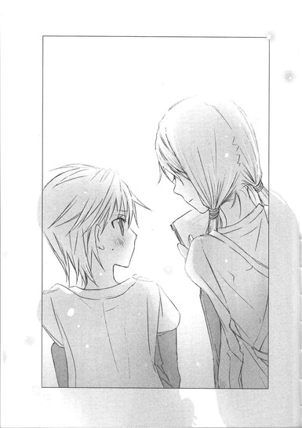 |
あとがき
こんにちは、野村美月です。〝文学少女〟ついに最終話です。
『半熟作家～』を書き上げたのは昨年の三月末でした。ちょうど一年経つので、今あとがきを書いているのは、なんだか変な気持ちです。
最後のお話は、新人作家くんと編集者になった遠子のコンビで明るく締めようというのは、本編終了時に決めていたことでした。そのときは、反町くんの詩人シリーズのように挿話集にする方向で考えていたのですが、本当の意味でのシリーズ最終話なので、独立させたほうがバランスが良いかなと思い、このような形になりました。
ここまで読んでくださった皆様、本当にありがとうございました！ジンとくるようなお手紙をくださった方も、葉書のアンケートに一生懸命答えてくださった方も、お友達に勧めてくださった方も、すっっっごく嬉しかったです！
前回は日付の関係でご報告できなかったのですが、二〇一一年度の『このライトノベルがすごい！』で、〝文学少女〟は作品部門の六位をいただきました。五年も続けて選んでいただいて、胸がいっぱいになってしまいました。
五年かけて、ここまで辿り着くことができたのは、本当に皆様のおかげです。
いつも長時間の打ち合わせにつきあってくださった担当様も、素晴らしいイラストを描いてくださった竹岡様も、本当にお疲れ様でした。ありがとうございました。
来月、〝文学少女〟の画集第二弾が発売になります。ぜひ、透きとおるような美麗な絵を眺めながら、これまでの物語を思い返してみてください。私も、甘さ増量の大人遠子と心葉のお話をちょこっと書いています。
また、巻末の予告のとおり、来月五月から新シリーズがはじまります。
『〝葵〟 ヒカルが地球にいたころ......①』
『ヒカルが地球にいたころ......』がシリーズタイトルになります。
学園モノですが『源氏物語』を読んでいると、ちょっとにんまりできるかも。主人公は伝説的タラシなあの人ではなくそのお友達（？）で、可愛い女の子がたくさん出てくる晴れやかで優しいお話にしたいと思っています。イラストは竹岡さんですよ～！
この『葵』と『半熟作家』の両方をお買い上げいただいた方に、ヒカルと〝文学少女〟のコラボＳＳをプレゼントするキャンペーンを実施中ですので、ぜひ応募してください。
また同じ時期に、ファミ通文庫のＨＰでも連載がはじまります。こちらはお姉さんの身代わりで、王様一家の家庭教師になっちゃった男の子のコメディです。イラストは karory さんです。こちらもチェックしてみてくださいね～。
最後に、三月におこった東日本大震災により被災された皆様に、心よりお見舞いを申し上げます。私の実家も福島にあり、このあとがきを書いている今も胸が痛む状況が続いています。心配でたまりません。一日も早く日常が戻ってきますように、それまで少しでも心を明るく保てるように、祈っています。
※作中、次の著作を引用、または参考にさせていただきました。
『伊勢物語 土佐日記』中田武司校注・訳、責任編集市古貞次（古典編）、小田切進（近代編）、株式会社ほるぷ出版、昭和六十一年九月一日／『風と共に去りぬ１』ミッチェル著、大久保康雄・竹内道之助訳、株式会社河出書房新社、昭和三九年六月八日／『風と共に去りぬ２』ミッチェル著、大久保康雄・竹内道之助訳、株式会社河出書房新社、昭和三九年七月八日／『ハムレット』シェイクスピア著、市河三喜、松浦嘉一訳、株式会社岩波書店、一九四九年七月一〇日第一刷発行、一九五七年六月二五日第一九刷改稿／『伊豆の踊子・浅草紅団』川端康成著、株式会社ほるぷ出版、昭和六十年二月一日
※引用に際して、一部旧仮名表記を現代表記にあらためています。
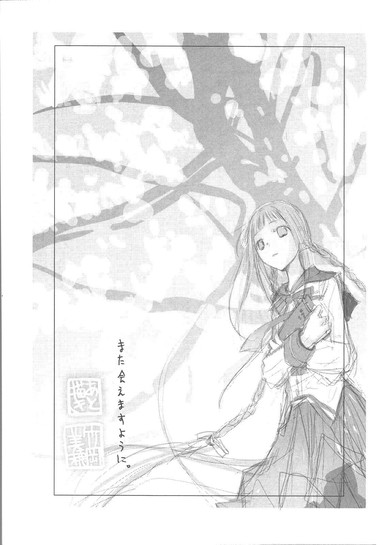
底本：半熟作家と〝文学少女〟な編集者
野村美月
二〇一一年五月一一日 初版発行
入力：
校正：鹿仔